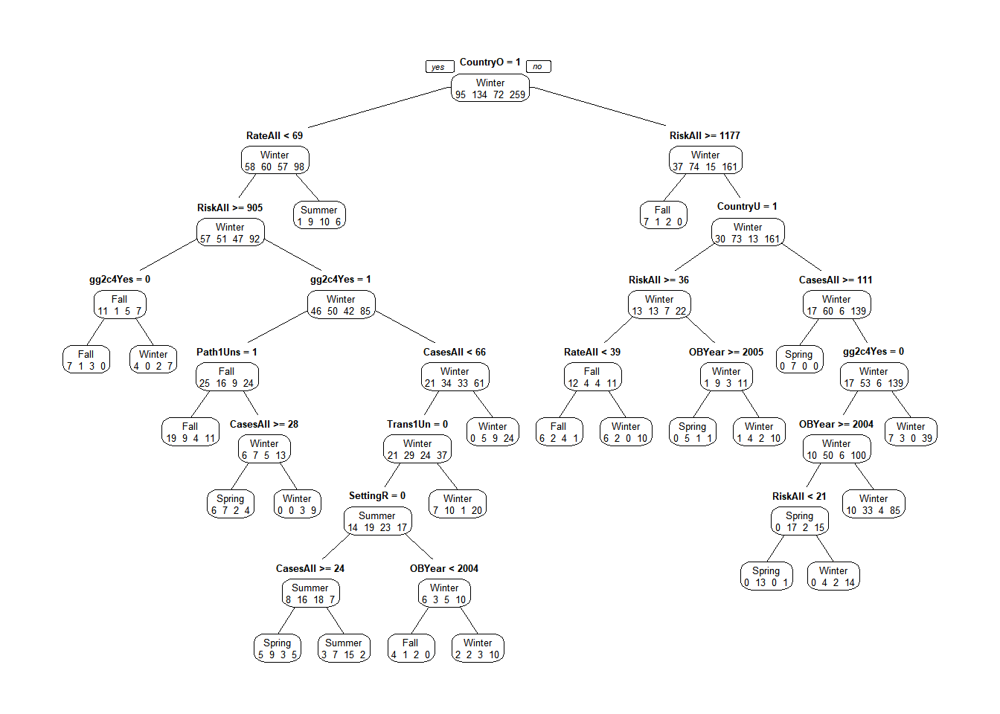
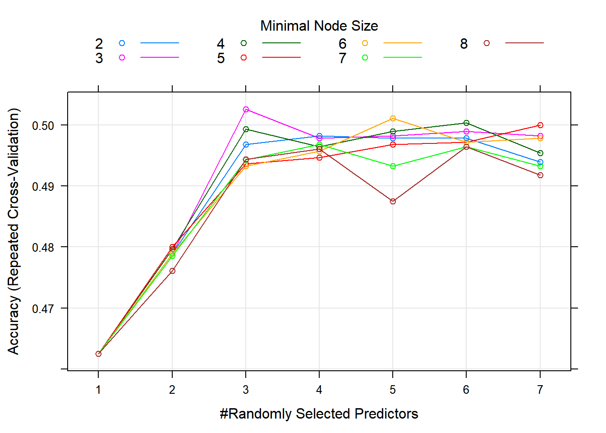
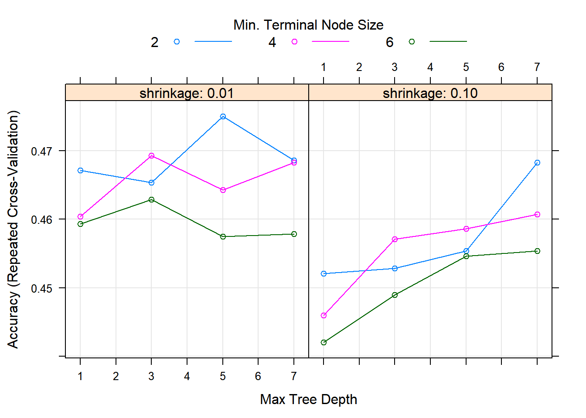
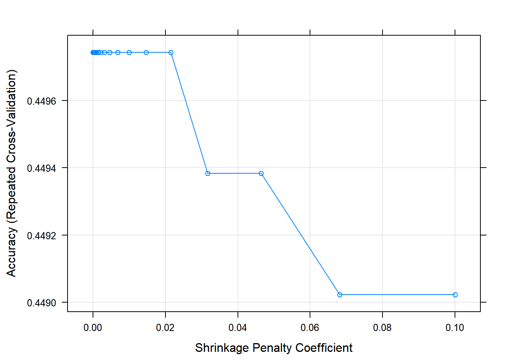

Overview
This document will guide you through some data analysis tasks with a focus on fitting tree-based models and training them. We’ll also (re)-visit some other topics.
While this is in some sense a stand-alone analysis, I assume that you have worked through the Data Analysis exercise and are familiar with the dataset and all the things we discovered during the cleaning process. We’ll use the same dataset here but focus on a different outcome. Other than that, the way to work through the exercise is like in the Data Analysis exercise, namely by writing/completing the missing code.
Project setup
We need a variety of different packages, which are loaded here. Install as needed. For this analysis, we’ll again use the caret package. If you use others, load them here.
Data loading and cleaning
We will again use the Norovirus dataset.
#Write code that loads the dataset
#You can of course re-use code you wrote in the other file.
raw_data <- read.csv("norodata.csv", header=TRUE)
head(raw_data)## id Author Pub_Year pubmedid EpiCurve TDComment AHComment Trans1
## 1 2 Akihara 2005 15841336 Y Unspecified
## 2 17 Becker 2000 11071673 Y Foodborne
## 3 39 Boxman 2009 19205471 N Foodborne
## 4 40 Boxman 2009 19205471 N Foodborne
## 5 41 Boxman 2009 19205471 N Foodborne
## 6 42 Boxman 2009 19205471 N Foodborne
## Trans1_O Trans2 Trans2_O Trans3 Trans3_O Risk1
## 1 0 (not applicable) 0 (not applicable) 0 0
## 2 0 Person to Person 0 (not applicable) 0 108
## 3 0 (not applicable) 0 (not applicable) 0 130
## 4 0 (not applicable) 0 (not applicable) 0 4
## 5 0 (not applicable) 0 (not applicable) 0 25
## 6 0 (not applicable) 0 (not applicable) 0 8
## Risk2 RiskAll Cases1 Cases2 CasesAll Rate1 Rate2 RateAll
## 1 NA 0 15 NA 15 NA NA 0.00000
## 2 NA 108 43 22 65 39.81481 NA 39.81481
## 3 NA 130 27 NA 27 20.76923 NA 20.76923
## 4 NA 4 4 NA 4 100.00000 NA 100.00000
## 5 NA 25 15 NA 15 60.00000 NA 60.00000
## 6 NA 8 6 NA 6 75.00000 NA 75.00000
## Hospitalizations Deaths Vehicle_1 Veh1
## 1 0 0 0 Unspecified
## 2 0 0 Boxed Lunch Yes
## 3 0 0 0 Unspecified
## 4 0 0 0 Unspecified
## 5 0 0 0 Unspecified
## 6 0 0 0 Unspecified
## Veh1_D_1 Veh2 Veh2_D_1 Veh3 Veh3_D_1
## 1 0 No 0 No 0
## 2 Turkey Sandwich in boxed lunch Yes Football players No 0
## 3 0 No 0 No 0
## 4 0 No 0 No 0
## 5 0 No 0 No 0
## 6 0 No 0 No 0
## PCRSect OBYear Hemisphere season MeanI1 MedianI1 Range_S_I1
## 1 Capsid 1999 Northern Fall 0 0 0
## 2 Polymerase 1998 Northern Fall 0 37 0
## 3 Both 2006 Northern Fall 0 0 0
## 4 Both 2006 Northern Fall 0 0 0
## 5 Both 2006 Northern Fall 0 0 0
## 6 Both 2006 Northern Fall 0 0 0
## Range_L_I1 MeanD1 MedianD1 Range_S_D1 Range_L_D1 MeanA1 MedianA1
## 1 0 0 0 0 0 NA NA
## 2 0 0 36 0 0 NA NA
## 3 0 0 0 0 0 NA NA
## 4 0 0 0 0 0 NA NA
## 5 0 0 0 0 0 NA NA
## 6 0 0 0 0 0 NA NA
## Range_Y_A1 Range_O_A1 Action1 Action2_1 Secondary MeanI2 MedianI2
## 1 0.75 2 Unspecified 0 No 0 0
## 2 0 0 Unspecified 0 Yes 0 0
## 3 0 0 Unspecified 0 No 0 0
## 4 0 0 Unspecified 0 No 0 0
## 5 0 0 Unspecified 0 No 0 0
## 6 0 0 Unspecified 0 No 0 0
## Range_S_I2 Range_L_I2 MeanD2 MedianD2 Range_S_D2 Range_L_D2 Mea.2
## 1 0 0 0 0 0 0 0
## 2 0 0 0 0 0 0 0
## 3 0 0 0 0 0 0 0
## 4 0 0 0 0 0 0 0
## 5 0 0 0 0 0 0 0
## 6 0 0 0 0 0 0 0
## Media.2 Range_Y_A2 Range_O_A2
## 1 0 0 0
## 2 0 0 0
## 3 0 0 0
## 4 0 0 0
## 5 0 0 0
## 6 0 0 0
## Comments_1
## 1 Outbreak took place during a study on gasteroenteritus in a day care center. Same paper as outbreak # 2
## 2 Secondary cases include both persons from NC and FL, some secondary cases were included in # at risk of primary infection
## 3 VWA outbreak no. 68592 in Table 1
## 4 VWA outbreak no. 69113 in Table 1
## 5 VWA outbreak no. 69479 in Table 1
## 6 VWA outbreak no. 69490 in Table 1
## Path1 Path2_1 Country Category State
## 1 No 0 Japan Daycare 0
## 2 No 0 USA Foodservice NC, FL
## 3 Unspecified 0 Other Foodservice 0
## 4 Unspecified 0 Other Foodservice 0
## 5 Unspecified 0 Other Foodservice 0
## 6 Unspecified 0 Other Foodservice 0
## Setting_1 StartMonth EndMonth GGA CA SA
## 1 Daycare Center 11 12 2 4 Lordsdale
## 2 Boxed lunch, football game 9 9 1 0 Thistle Hall 1/91
## 3 buffet 9 0 2 4 GII.4 2006a
## 4 restaurant 10 0 0 0 0
## 5 buffet 11 0 2 4 GII.4 2006b
## 6 take-out restaurant 11 0 0 0 0
## new_GGA new_CA new_SA SA_resolved_from GGB CB SB new_GGB new_CB new_SB
## 1 0 0 0 0 0 0 0 0 0
## 2 0 0 0 0 0 0 0 0 0
## 3 0 0 0 0 0 0 0 0 0
## 4 0 0 0 0 0 0 0 0 0
## 5 0 0 0 0 0 0 0 0 0
## 6 0 0 0 0 0 0 0 0 0
## SB_resolved_from GGC CC SC new_ggc new_cc new_sc SC_resolved_from GGD CD
## 1 0 0 0 0 0 0 0 0
## 2 0 0 0 0 0 0 0 0
## 3 0 0 0 0 0 0 0 0
## 4 0 0 0 0 0 0 0 0
## 5 0 0 0 0 0 0 0 0
## 6 0 0 0 0 0 0 0 0
## SD new_ggd new_cd new_sd SD_resolved_from StrainOther strainother_rc gge
## 1 0 0 0 0 NA 0 0 0
## 2 0 0 0 0 NA 0 0 0
## 3 0 0 0 0 NA 0 0 0
## 4 0 0 0 0 NA 0 0 0
## 5 0 0 0 0 NA 0 0 0
## 6 0 0 0 0 NA 0 0 0
## ce se SE_resolved_from ggf cf sf ggg cg sg ggh ch sh ggi ci si ggj cj sj
## 1 0 0 0 0 0 0 0 0 0 0 0 0 0 0 0 0 0
## 2 0 0 0 0 0 0 0 0 0 0 0 0 0 0 0 0 0
## 3 0 0 0 0 0 0 0 0 0 0 0 0 0 0 0 0 0
## 4 0 0 0 0 0 0 0 0 0 0 0 0 0 0 0 0 0
## 5 0 0 0 0 0 0 0 0 0 0 0 0 0 0 0 0 0
## 6 0 0 0 0 0 0 0 0 0 0 0 0 0 0 0 0 0
## Country2 Veh1_D_2 Veh2_D_2 Veh3_D_2 Action2_2
## 1 0 0 0 0 0
## 2 0 Boxed Lunch 0 0 0
## 3 The Netherlands 0 0 0 0
## 4 The Netherlands 0 0 0 0
## 5 The Netherlands 0 0 0 0
## 6 The Netherlands 0 0 0 0
## Comments_2 Path2_2 Setting_2 category1
## 1 Limited data 0 0 School/Daycare
## 2 0 0 0 Foodservice
## 3 Outbreak 19 of 26 Boxman 2009 0 Buffet Foodservice
## 4 Outbreak 20 of 26 Boxman 2009 0 Restaurant Foodservice
## 5 Outbreak 21 of 26 Boxman 2009 0 Buffet Foodservice
## 6 Outbreak 22 of 26 Boxman 2009 0 take out restaurant Foodservice
## strainothergg2c4 gg2c4 Vomit IncInd SymInd PooledLat PooledSym PooledAge
## 1 0 Yes 1 0 0 0 0 0
## 2 0 1 0 0 37 36 0
## 3 0 Yes 1 0 0 0 0 0
## 4 0 1 0 0 0 0 0
## 5 0 Yes 1 0 0 0 0 0
## 6 0 1 0 0 0 0 0
## IndividualLatent IndividualSymptomatic
## 1 NA
## 2 NA
## 3 NA
## 4 NA
## 5 NA
## 6 NA## 'data.frame': 1022 obs. of 139 variables:
## $ id : int 2 17 39 40 41 42 43 44 67 74 ...
## $ Author : Factor w/ 217 levels " kagawa-Okamoto",..: 3 9 16 16 16 16 16 16 25 28 ...
## $ Pub_Year : int 2005 2000 2009 2009 2009 2009 2009 2009 2009 1994 ...
## $ pubmedid : int 15841336 11071673 19205471 19205471 19205471 19205471 19205471 19205471 19440360 8202078 ...
## $ EpiCurve : Factor w/ 3 levels "","N","Y": 3 3 2 2 2 2 2 2 2 2 ...
## $ TDComment : Factor w/ 11 levels "","Just norovirus outbreak",..: 1 1 1 1 1 1 1 1 1 1 ...
## $ AHComment : Factor w/ 3 levels "","confirmed",..: 1 1 1 1 1 1 1 1 1 1 ...
## $ Trans1 : Factor w/ 6 levels "Environmental",..: 5 2 2 2 2 2 2 2 5 2 ...
## $ Trans1_O : int 0 0 0 0 0 0 0 0 0 0 ...
## $ Trans2 : Factor w/ 6 levels " (not applicable)",..: 1 5 1 1 1 1 1 1 1 1 ...
## $ Trans2_O : Factor w/ 2 levels "0","Direct contact with diarrhea or vomitus": 1 1 1 1 1 1 1 1 1 1 ...
## $ Trans3 : Factor w/ 6 levels " (not applicable)",..: 1 1 1 1 1 1 1 1 1 1 ...
## $ Trans3_O : Factor w/ 2 levels "0","smoking": 1 1 1 1 1 1 1 1 1 1 ...
## $ Risk1 : num 0 108 130 4 25 ...
## $ Risk2 : num NA NA NA NA NA NA NA NA NA NA ...
## $ RiskAll : num 0 108 130 4 25 ...
## $ Cases1 : int 15 43 27 4 15 6 40 10 116 45 ...
## $ Cases2 : int NA 22 NA NA NA NA NA NA NA NA ...
## $ CasesAll : int 15 65 27 4 15 6 40 10 116 45 ...
## $ Rate1 : num NA 39.8 20.8 100 60 ...
## $ Rate2 : num NA NA NA NA NA NA NA NA NA NA ...
## $ RateAll : num 0 39.8 20.8 100 60 ...
## $ Hospitalizations : int 0 0 0 0 0 0 0 0 5 10 ...
## $ Deaths : int 0 0 0 0 0 0 0 0 0 0 ...
## $ Vehicle_1 : Factor w/ 126 levels "0","Aerosolized vomit",..: 1 6 1 1 1 1 1 1 1 73 ...
## $ Veh1 : Factor w/ 4 levels "No","Unknown",..: 3 4 3 3 3 3 3 3 3 4 ...
## $ Veh1_D_1 : Factor w/ 163 levels "0","aerosilized",..: 1 159 1 1 1 1 1 1 1 107 ...
## $ Veh2 : Factor w/ 2 levels "No","Yes": 1 2 1 1 1 1 1 1 1 1 ...
## $ Veh2_D_1 : Factor w/ 63 levels "","0","accommodation environment on day of arrival",..: 2 21 2 2 2 2 2 2 2 2 ...
## $ Veh3 : Factor w/ 2 levels "No","Yes": 1 1 1 1 1 1 1 1 1 1 ...
## $ Veh3_D_1 : Factor w/ 19 levels "","0","Brandy S ps",..: 2 2 2 2 2 2 2 2 2 2 ...
## $ PCRSect : Factor w/ 4 levels "Both","Capsid",..: 2 3 1 1 1 1 1 1 1 4 ...
## $ OBYear : Factor w/ 23 levels "0","1983","1990",..: 11 10 19 19 19 19 19 19 17 5 ...
## $ Hemisphere : Factor w/ 3 levels "Northern","Southern",..: 1 1 1 1 1 1 1 1 1 1 ...
## $ season : Factor w/ 5 levels "","Fall","Spring",..: 2 2 2 2 2 2 2 2 2 2 ...
## $ MeanI1 : int 0 0 0 0 0 0 0 0 0 0 ...
## $ MedianI1 : int 0 37 0 0 0 0 0 0 0 31 ...
## $ Range_S_I1 : num 0 0 0 0 0 0 0 0 0 2 ...
## $ Range_L_I1 : num 0 0 0 0 0 0 0 0 0 69 ...
## $ MeanD1 : num 0 0 0 0 0 0 0 0 0 0 ...
## $ MedianD1 : num 0 36 0 0 0 0 0 0 0 48 ...
## $ Range_S_D1 : num 0 0 0 0 0 0 0 0 0 10 ...
## $ Range_L_D1 : int 0 0 0 0 0 0 0 0 0 168 ...
## $ MeanA1 : num NA NA NA NA NA NA NA NA NA NA ...
## $ MedianA1 : num NA NA NA NA NA NA NA NA NA NA ...
## $ Range_Y_A1 : Factor w/ 49 levels "<1","0","0.167",..: 8 2 2 2 2 2 2 2 2 2 ...
## $ Range_O_A1 : num 2 0 0 0 0 0 0 0 0 0 ...
## $ Action1 : Factor w/ 4 levels "No","Unknown",..: 3 3 3 3 3 3 3 3 3 4 ...
## $ Action2_1 : Factor w/ 186 levels "","\tContami ted batch withdrawn from market; Finnish authorities issued alert through Rapid Alert System for Food"| __truncated__,..: 5 5 5 5 5 5 5 5 5 108 ...
## $ Secondary : Factor w/ 3 levels "","No","Yes": 2 3 2 2 2 2 2 2 2 2 ...
## $ MeanI2 : int 0 0 0 0 0 0 0 0 0 0 ...
## $ MedianI2 : int 0 0 0 0 0 0 0 0 0 0 ...
## $ Range_S_I2 : int 0 0 0 0 0 0 0 0 0 0 ...
## $ Range_L_I2 : int 0 0 0 0 0 0 0 0 0 0 ...
## $ MeanD2 : int 0 0 0 0 0 0 0 0 0 0 ...
## $ MedianD2 : int 0 0 0 0 0 0 0 0 0 0 ...
## $ Range_S_D2 : int 0 0 0 0 0 0 0 0 0 0 ...
## $ Range_L_D2 : int 0 0 0 0 0 0 0 0 0 0 ...
## $ Mea.2 : int 0 0 0 0 0 0 0 0 0 0 ...
## $ Media.2 : int 0 0 0 0 0 0 0 0 0 0 ...
## $ Range_Y_A2 : int 0 0 0 0 0 0 0 0 0 0 ...
## $ Range_O_A2 : int 0 0 0 0 0 0 0 0 0 0 ...
## $ Comments_1 : Factor w/ 989 levels ""," turally recombi nt GII NV outbreak occurred in infant home in Sapporo, Japan where only residents who were up "| __truncated__,..: 918 938 978 979 980 981 984 982 350 853 ...
## $ Path1 : Factor w/ 4 levels "No","Unknown",..: 1 1 3 3 3 3 3 3 1 3 ...
## $ Path2_1 : Factor w/ 59 levels "","0","adenovirus",..: 2 2 2 2 2 2 2 2 2 2 ...
## $ Country : Factor w/ 22 levels "Australia","Austria",..: 12 22 17 17 17 17 17 17 17 22 ...
## $ Category : Factor w/ 12 levels "Daycare","Foodservice",..: 1 2 2 2 2 2 2 2 6 12 ...
## $ State : Factor w/ 36 levels "0","1","14 states: CA, UT, KS, WI, IL, IN, OH, GA, FL, NC, VA, WV, NY, PA,",..: 1 21 1 1 1 1 1 1 1 9 ...
## $ Setting_1 : Factor w/ 388 levels "\tPsychiatric Care Center adjoined",..: 121 32 39 310 39 352 39 310 201 3 ...
## $ StartMonth : int 11 9 9 10 11 11 11 11 11 11 ...
## $ EndMonth : int 12 9 0 0 0 0 0 0 11 11 ...
## $ GGA : int 2 1 2 0 2 0 0 0 2 0 ...
## $ CA : int 4 0 4 0 4 0 0 0 4 0 ...
## $ SA : Factor w/ 123 levels "0","100% identity w/AB05308, 96% identity w/MOH",..: 62 115 34 1 35 1 1 1 122 1 ...
## $ new_GGA : int 0 0 0 0 0 0 0 0 0 0 ...
## $ new_CA : int 0 0 0 0 0 0 0 0 0 0 ...
## $ new_SA : Factor w/ 27 levels "0","ARG320-USA",..: 1 1 1 1 1 1 1 1 1 1 ...
## $ SA_resolved_from : Factor w/ 9 levels "","abstraction",..: 1 1 1 1 1 1 1 1 1 1 ...
## $ GGB : int 0 0 0 0 0 0 0 0 0 0 ...
## $ CB : Factor w/ 18 levels "0","1","10","12",..: 1 1 1 1 1 1 1 1 1 1 ...
## $ SB : Factor w/ 38 levels "0","93.7% homology w/Saitama",..: 1 1 1 1 1 1 1 1 1 1 ...
## $ new_GGB : int 0 0 0 0 0 0 0 0 0 0 ...
## $ new_CB : int 0 0 0 0 0 0 0 0 0 0 ...
## $ new_SB : Factor w/ 14 levels "0","Birmingham",..: 1 1 1 1 1 1 1 1 1 1 ...
## $ SB_resolved_from : Factor w/ 6 levels "","abstraction",..: 1 1 1 1 1 1 1 1 1 1 ...
## $ GGC : int 0 0 0 0 0 0 0 0 0 0 ...
## $ CC : int 0 0 0 0 0 0 0 0 0 0 ...
## $ SC : Factor w/ 25 levels "0","95% homology with Sundsvall",..: 1 1 1 1 1 1 1 1 1 1 ...
## $ new_ggc : int 0 0 0 0 0 0 0 0 0 0 ...
## $ new_cc : int 0 0 0 0 0 0 0 0 0 0 ...
## $ new_sc : Factor w/ 5 levels "0","Fayetteville",..: 1 1 1 1 1 1 1 1 1 1 ...
## $ SC_resolved_from : Factor w/ 4 levels "","abstraction",..: 1 1 1 1 1 1 1 1 1 1 ...
## $ GGD : int 0 0 0 0 0 0 0 0 0 0 ...
## $ CD : Factor w/ 13 levels "0","1","12","14",..: 1 1 1 1 1 1 1 1 1 1 ...
## $ SD : Factor w/ 8 levels "0","Amsterdam",..: 1 1 1 1 1 1 1 1 1 1 ...
## $ new_ggd : int 0 0 0 0 0 0 0 0 0 0 ...
## $ new_cd : int 0 0 0 0 0 0 0 0 0 0 ...
## $ new_sd : int 0 0 0 0 0 0 0 0 0 0 ...
## $ SD_resolved_from : logi NA NA NA NA NA NA ...
## [list output truncated]## id Author Pub_Year pubmedid
## Min. : 1.0 Iritani : 83 Min. :1993 Min. : 7514927
## 1st Qu.: 256.2 Kageyama: 63 1st Qu.:2003 1st Qu.:12938042
## Median : 511.5 Lysen : 60 Median :2005 Median :16231127
## Mean : 511.6 Ozawa : 55 Mean :2005 Mean :15890029
## 3rd Qu.: 766.8 Hamano : 43 3rd Qu.:2008 3rd Qu.:18495859
## Max. :1024.0 Fukuda : 39 Max. :2011 Max. :21537761
## (Other) :679 NA's :3
## EpiCurve TDComment
## : 7 :994
## N:784 Not sure : 12
## Y:231 Not found in folder of articles : 6
## Not found on Pubmed : 3
## Just norovirus outbreak : 1
## No vomiting in some outbreaks but those are not specified: 1
## (Other) : 5
## AHComment Trans1 Trans1_O
## :1012 Environmental : 12 Min. :0
## confirmed : 8 Foodborne :391 1st Qu.:0
## probably not usable: 2 Person to Person:166 Median :0
## Unknown : 63 Mean :0
## Unspecified :318 3rd Qu.:0
## Waterborne : 72 Max. :0
##
## Trans2 Trans2_O
## (not applicable):928 0 :1021
## Environmental : 42 Direct contact with diarrhea or vomitus: 1
## Foodborne : 8
## Other : 1
## Person to Person : 42
## Waterborne : 1
##
## Trans3 Trans3_O Risk1
## (not applicable):1007 0 :1021 Min. : 0.00
## Environmental : 7 smoking: 1 1st Qu.: 0.00
## Foodborne : 4 Median : 10.00
## Other : 1 Mean : 374.57
## Person to Person : 2 3rd Qu.: 95.75
## Waterborne : 1 Max. :35000.00
##
## Risk2 RiskAll Cases1 Cases2
## Min. : 66.00 Min. : 0.0 Min. : 1.0 Min. : 1.00
## 1st Qu.: 72.25 1st Qu.: 0.0 1st Qu.: 9.0 1st Qu.: 4.25
## Median : 82.00 Median : 22.5 Median : 26.0 Median : 10.50
## Mean :135.06 Mean : 425.6 Mean : 125.2 Mean : 53.02
## 3rd Qu.:210.59 3rd Qu.: 119.5 3rd Qu.: 64.5 3rd Qu.: 26.75
## Max. :258.00 Max. :35000.0 Max. :32150.0 Max. :1113.00
## NA's :1014 NA's :120 NA's :7 NA's :976
## CasesAll Rate1 Rate2 RateAll
## Min. : 1.0 Min. : 0.4074 Min. : 6.00 Min. : 0.00
## 1st Qu.: 9.0 1st Qu.: 17.2500 1st Qu.:10.70 1st Qu.: 0.00
## Median : 26.0 Median : 37.5000 Median :17.50 Median : 15.28
## Mean : 127.6 Mean : 40.9253 Mean :16.89 Mean : 26.65
## 3rd Qu.: 66.0 3rd Qu.: 59.1875 3rd Qu.:21.90 3rd Qu.: 48.91
## Max. :32150.0 Max. :100.0000 Max. :29.69 Max. :105.00
## NA's :7 NA's :431 NA's :1012 NA's :108
## Hospitalizations Deaths Vehicle_1
## Min. : 0.0000 Min. :0.00000 0 :694
## 1st Qu.: 0.0000 1st Qu.:0.00000 Oysters : 46
## Median : 0.0000 Median :0.00000 oysters : 42
## Mean : 0.8856 Mean :0.05005 Shellfish : 21
## 3rd Qu.: 0.0000 3rd Qu.:0.00000 lettuce : 11
## Max. :197.0000 Max. :9.00000 Infected Persons: 10
## NA's :43 NA's :43 (Other) :198
## Veh1 Veh1_D_1 Veh2
## No : 1 0 :575 No :933
## Unknown : 82 Infected Persons: 60 Yes: 89
## Unspecified:493 Oysters : 47
## Yes :446 oysters : 42
## Shellfish : 20
## Food : 14
## (Other) :264
## Veh2_D_1 Veh3 Veh3_D_1
## 0 :814 No :1004 0 :895
## :120 Yes: 18 :109
## Infected Persons : 12 Contami ted Surfaces: 2
## Contami ted Surfaces : 8 Brandy S ps : 1
## salad : 4 Chicken : 1
## Vomit or Stool contact: 3 Coffee White : 1
## (Other) : 61 (Other) : 13
## PCRSect OBYear Hemisphere season
## Both :441 2006 :142 Northern :939 : 67
## Capsid :138 2002 :134 Southern : 81 Fall :164
## Polymerase :175 2004 :116 Unspecified: 2 Spring:222
## Unspecified:268 2003 : 97 Summer:126
## 1999 : 80 Winter:443
## 1998 : 76
## (Other):377
## MeanI1 MedianI1 Range_S_I1 Range_L_I1
## Min. : 0.0000 Min. : 0.000 Min. : 0.000 Min. : 0.000
## 1st Qu.: 0.0000 1st Qu.: 0.000 1st Qu.: 0.000 1st Qu.: 0.000
## Median : 0.0000 Median : 0.000 Median : 0.000 Median : 0.000
## Mean : 0.6644 Mean : 1.588 Mean : 1.066 Mean : 3.976
## 3rd Qu.: 0.0000 3rd Qu.: 0.000 3rd Qu.: 0.000 3rd Qu.: 0.000
## Max. :48.0000 Max. :65.000 Max. :36.000 Max. :168.000
##
## MeanD1 MedianD1 Range_S_D1 Range_L_D1
## Min. : 0.000 Min. : 0.000 Min. : 0.000 Min. : 0.0
## 1st Qu.: 0.000 1st Qu.: 0.000 1st Qu.: 0.000 1st Qu.: 0.0
## Median : 0.000 Median : 0.000 Median : 0.000 Median : 0.0
## Mean : 1.579 Mean : 2.552 Mean : 1.486 Mean : 12.7
## 3rd Qu.: 0.000 3rd Qu.: 0.000 3rd Qu.: 0.000 3rd Qu.: 0.0
## Max. :273.600 Max. :235.200 Max. :72.000 Max. :1248.0
##
## MeanA1 MedianA1 Range_Y_A1 Range_O_A1
## Min. : 0.0833 Min. : 0.747 0 :891 Min. : 0.000
## 1st Qu.:13.0000 1st Qu.: 9.000 1 : 10 1st Qu.: 0.000
## Median :39.0000 Median :29.000 18 : 9 Median : 0.000
## Mean :38.2923 Mean :29.485 23 : 7 Mean : 7.077
## 3rd Qu.:56.0000 3rd Qu.:45.000 16 : 6 3rd Qu.: 0.000
## Max. :89.3300 Max. :85.000 20 : 6 Max. :103.000
## NA's :961 NA's :973 (Other): 93
## Action1
## No : 3
## Unknown : 2
## Unspecified:803
## Yes :214
##
##
##
## Action2_1
## 0 :807
## recalled lettuce from wholesaler : 11
## Infection control practices essation of occupatio l therapy; cohort program; visiting restrictions; symptomatic staff sent home : 4
## Restaurant was cleaned, closed, then professio lly cleaned : 4
## Camp was clean, closed and the fi lly professio lly cleaned : 3
## exclude members of affected groups from water sports, activities with shared implements; provided dedicated latrines, washing facilities, drinking water; excluded from food handling, preparation; isolated until asymptomatic for 48 hours: 3
## (Other) :190
## Secondary MeanI2 MedianI2 Range_S_I2
## : 1 Min. : 0.0000 Min. : 0.00000 Min. : 0.0000
## No :972 1st Qu.: 0.0000 1st Qu.: 0.00000 1st Qu.: 0.0000
## Yes: 49 Median : 0.0000 Median : 0.00000 Median : 0.0000
## Mean : 0.1203 Mean : 0.04697 Mean : 0.2172
## 3rd Qu.: 0.0000 3rd Qu.: 0.00000 3rd Qu.: 0.0000
## Max. :81.0000 Max. :48.00000 Max. :78.0000
##
## Range_L_I2 MeanD2 MedianD2 Range_S_D2
## Min. : 0.0000 Min. :0 Min. :0 Min. : 0.00000
## 1st Qu.: 0.0000 1st Qu.:0 1st Qu.:0 1st Qu.: 0.00000
## Median : 0.0000 Median :0 Median :0 Median : 0.00000
## Mean : 0.4511 Mean :0 Mean :0 Mean : 0.02348
## 3rd Qu.: 0.0000 3rd Qu.:0 3rd Qu.:0 3rd Qu.: 0.00000
## Max. :168.0000 Max. :0 Max. :0 Max. :24.00000
##
## Range_L_D2 Mea.2 Media.2
## Min. : 0.00000 Min. : 0.00000 Min. : 0.00000
## 1st Qu.: 0.00000 1st Qu.: 0.00000 1st Qu.: 0.00000
## Median : 0.00000 Median : 0.00000 Median : 0.00000
## Mean : 0.09393 Mean : 0.08904 Mean : 0.04795
## 3rd Qu.: 0.00000 3rd Qu.: 0.00000 3rd Qu.: 0.00000
## Max. :72.00000 Max. :55.00000 Max. :49.00000
##
## Range_Y_A2 Range_O_A2
## Min. : 0.00000 Min. : 0.0000
## 1st Qu.: 0.00000 1st Qu.: 0.0000
## Median : 0.00000 Median : 0.0000
## Mean : 0.05773 Mean : 0.2211
## 3rd Qu.: 0.00000 3rd Qu.: 0.0000
## Max. :46.00000 Max. :80.0000
##
## Comments_1 Path1
## : 14 No :223
## 0 : 10 Unknown : 3
## 2 of 3, paper about genetic a lysis, 1 death: 2 Unspecified:716
## 3 of 3, limited information available : 2 Yes : 80
## Outbreak 10 of 47, limited information : 2
## outbreak A in Table 1 : 2
## (Other) :990
## Path2_1 Country Category
## 0 :833 Other :447 Foodservice :309
## :109 Japan :371 Leisure :153
## coliforms : 8 USA :108 Nursing Home:138
## Astrovirus : 4 Australia : 21 Hospital :126
## E.coli : 4 Multiple : 17 Other : 99
## Campylobacter jejuni: 3 Unspecified: 15 School : 68
## (Other) : 61 (Other) : 43 (Other) :129
## State Setting_1 StartMonth EndMonth
## 0 :909 0 :110 Min. : 0.000 Min. : 0.000
## NC : 19 Restaurant :104 1st Qu.: 2.000 1st Qu.: 0.000
## NY : 10 restaurant : 70 Median : 4.000 Median : 0.000
## AK : 9 Hospital : 39 Mean : 5.532 Mean : 2.414
## FL : 7 Hotel : 25 3rd Qu.:10.000 3rd Qu.: 3.000
## MI : 6 Nursing Care Center: 25 Max. :12.000 Max. :12.000
## (Other): 62 (Other) :649
## GGA CA SA new_GGA
## Min. :0.000 Min. : 0.000 0 :693 Min. :0.0000
## 1st Qu.:1.000 1st Qu.: 0.000 Lordsdale : 45 1st Qu.:0.0000
## Median :2.000 Median : 2.000 Farmington Hills: 18 Median :0.0000
## Mean :1.501 Mean : 2.551 GII.4 2006b : 16 Mean :0.1693
## 3rd Qu.:2.000 3rd Qu.: 4.000 GII.4 2006a : 15 3rd Qu.:0.0000
## Max. :2.000 Max. :17.000 Desert Shield : 14 Max. :2.0000
## NA's :1 (Other) :221
## new_CA new_SA
## Min. :0.0000 0 :926
## 1st Qu.:0.0000 Toronto-CAN93: 15
## Median :0.0000 Grimsby-like : 11
## Mean :0.2984 Hawaii-USA94 : 10
## 3rd Qu.:0.0000 CBW94-AUS : 7
## Max. :9.0000 Chiba-JPN00 : 7
## (Other) : 46
## SA_resolved_from
## :926
## Zheng : 69
## abstraction : 17
## http://onlinelibrary.wiley.com/doi/10.1002/jmv.20403/pdf : 3
## origi l article : 3
## Diagnosis of Norovirus outbreaks by commercial ELISA or RT-PCR, de Bruin et al.: 1
## (Other) : 3
## GGB CB SB new_GGB
## Min. :0.0000 0 :886 0 :976 Min. :0.0000
## 1st Qu.:0.0000 4 : 36 Lordsdale : 3 1st Qu.:0.0000
## Median :0.0000 3 : 22 Toronto : 3 Median :0.0000
## Mean :0.3082 2 : 15 Birmingham : 2 Mean :0.0274
## 3rd Qu.:0.0000 6 : 15 GII.4 2006b: 2 3rd Qu.:0.0000
## Max. :2.0000 1 : 9 GII.b : 2 Max. :2.0000
## (Other): 39 (Other) : 34
## new_CB new_SB
## Min. : 0.00000 0 :1005
## 1st Qu.: 0.00000 Birmingham : 2
## Median : 0.00000 Chiba-JPN00 : 2
## Mean : 0.06947 Lsdale-GBR : 2
## 3rd Qu.: 0.00000 Toronto-CAN93: 2
## Max. :14.00000 Bristol-GBR93: 1
## (Other) : 8
## SB_resolved_from
## :1005
## abstraction : 2
## Evaluation of a broadly reactive nucleic acid sequence based amplification assay for the detection of noroviruses in faecal material, Moore et al: 2
## http://kcdc.labkm.net/vsd/database/gene_list.jsp?orgId=6&cuTag=CL0005&page=910&orderCol=&orderTag=&searchIn=&textIn= : 1
## origi l article/Zheng : 2
## Zheng : 10
##
## GGC CC
## Min. :0.0000 Min. : 0.000
## 1st Qu.:0.0000 1st Qu.: 0.000
## Median :0.0000 Median : 0.000
## Mean :0.1223 Mean : 0.365
## 3rd Qu.:0.0000 3rd Qu.: 0.000
## Max. :2.0000 Max. :17.000
##
## SC
## 0 :997
## H104-94-J : 2
## 95% homology with Sundsvall : 1
## 99 and 98% deduced amino acid identity with FAY=98 and KAS/00 , respectively (both 92% nt identity): 1
## BCCDC04-007 : 1
## Chiba : 1
## (Other) : 19
## new_ggc new_cc new_sc
## Min. :0.000000 Min. : 0.0000 0 :1018
## 1st Qu.:0.000000 1st Qu.: 0.0000 Fayetteville: 1
## Median :0.000000 Median : 0.0000 Leeds-GBR00 : 1
## Mean :0.006849 Mean : 0.0274 MOH99-HUN : 1
## 3rd Qu.:0.000000 3rd Qu.: 0.0000 Whiterose : 1
## Max. :2.000000 Max. :14.0000
##
## SC_resolved_from
## :1018
## abstraction : 1
## Evaluation of a broadly reactive nucleic acid sequence based amplification assay for the detection of noroviruses in faecal material, Moore et al: 1
## Zheng : 2
##
##
##
## GGD CD SD
## Min. :0.00000 0 :990 0 :1014
## 1st Qu.:0.00000 3 : 6 GII.b : 2
## Median :0.00000 4 : 5 Amsterdam : 1
## Mean :0.06067 8 : 5 BCCDC03-008 : 1
## 3rd Qu.:0.00000 6 : 4 Bristol : 1
## Max. :2.00000 15 : 3 Harrow/2001/UK_Mexico/1989/MX: 1
## (Other): 9 (Other) : 2
## new_ggd new_cd new_sd SD_resolved_from
## Min. :0 Min. :0 Min. :0 Mode:logical
## 1st Qu.:0 1st Qu.:0 1st Qu.:0 NA's:1022
## Median :0 Median :0 Median :0
## Mean :0 Mean :0 Mean :0
## 3rd Qu.:0 3rd Qu.:0 3rd Qu.:0
## Max. :0 Max. :0 Max. :0
##
## StrainOther
## 0 :980
## closest relative is SRSV/Apeldoorn/97/NET w/98% nucleotide identity over 219 bp of the polymerase region and 96% (over 283 bp) was also seen w/strain Arg320: 2
## GII/8 : 2
## GIIb : 2
## 1 : 1
## 100% similar to the calicivirus strains of S031/94/UK : 1
## (Other) : 34
## strainother_rc
## 0 :1013
## closest relative is SRSV/Apeldoorn/97/NET w/98% nucleotide identity over 219 bp of the polymerase re: 2
## 100% similar to the calicivirus strains of S031/94/UK : 1
## 2 strains only referred to as strain A and strain B : 1
## 6 : 1
## article discussed 2 separate strains found, but didn't identify either : 1
## (Other) : 3
## gge ce se
## 0 :994 Min. : 0.0000 0 :1012
## 1 : 7 1st Qu.: 0.0000 GIIb : 2
## 2 : 20 Median : 0.0000 BCCDC04-002 : 1
## Sindlesham: 1 Mean : 0.1272 Fayetteville: 1
## 3rd Qu.: 0.0000 GII.4 2006a : 1
## Max. :17.0000 GII.4a 2004 : 1
## (Other) : 4
## SE_resolved_from ggf cf
## :1016 Min. :0.00000 Min. : 0.00000
## abstraction of StrainOther: 6 1st Qu.:0.00000 1st Qu.: 0.00000
## Median :0.00000 Median : 0.00000
## Mean :0.02055 Mean : 0.08317
## 3rd Qu.:0.00000 3rd Qu.: 0.00000
## Max. :2.00000 Max. :14.00000
##
## sf ggg cg sg
## 0 :1021 Min. :0.0000 Min. : 0.00000 0 :1021
## BCCDC03-013: 1 1st Qu.:0.0000 1st Qu.: 0.00000 BCCDC04-006: 1
## Median :0.0000 Median : 0.00000
## Mean :0.0137 Mean : 0.05186
## 3rd Qu.:0.0000 3rd Qu.: 0.00000
## Max. :2.0000 Max. :12.00000
##
## ggh ch sh
## Min. :0.000000 Min. : 0.00000 0 :1020
## 1st Qu.:0.000000 1st Qu.: 0.00000 BCCDC03-032: 1
## Median :0.000000 Median : 0.00000 GIIb : 1
## Mean :0.006849 Mean : 0.02251
## 3rd Qu.:0.000000 3rd Qu.: 0.00000
## Max. :2.000000 Max. :14.00000
##
## ggi ci si
## Min. :0.000000 Min. :0.000000 0 :1021
## 1st Qu.:0.000000 1st Qu.:0.000000 BCCDC04-003: 1
## Median :0.000000 Median :0.000000
## Mean :0.002935 Mean :0.003914
## 3rd Qu.:0.000000 3rd Qu.:0.000000
## Max. :2.000000 Max. :3.000000
##
## ggj cj sj
## Min. :0.000000 Min. :0.000000 0 :1021
## 1st Qu.:0.000000 1st Qu.:0.000000 BCCDC04-008: 1
## Median :0.000000 Median :0.000000
## Mean :0.002935 Mean :0.006849
## 3rd Qu.:0.000000 3rd Qu.:0.000000
## Max. :2.000000 Max. :5.000000
##
## Country2 Veh1_D_2
## 0 :547 0 :711
## Sweden : 71 Oyster : 68
## United Kingdom : 51 Shellfish: 23
## The Netherlands: 49 oyster : 16
## Australia : 41 Oysters : 12
## Finland : 26 lettuce : 11
## (Other) :237 (Other) :181
## Veh2_D_2 Veh3_D_2
## 0 :1000 0 :1020
## Salad : 3 house salad : 1
## areas contami ted with index case vomit: 1 udon noodles: 1
## assymptomatic foodhandler : 1
## buffet spring rolls : 1
## coleslaw : 1
## (Other) : 15
## Action2_2
## 0 :887
## groups with affected members were excluded from camp activities and limited to specific bathrooms and water fountains : 3
## professio lly cleaned restaurant : 3
## 1 week sanitation and sterilization of the ship after cruise 1, however outbreak continued on the next 5 cruises : 1
## admission to the hospital closed 3 times, 34/41 guidlines for NoV outbreak control covered, control implemented via the hospital hygiene team: 1
## admissions suspended, handwashing, enviornmental cleaning, visitor restriction, linen cleaning, staff policy etc. : 1
## (Other) :126
## Comments_2
## 0 :318
## : 22
## Hosp A ward 7C : 2
## Hosp A ward 7E : 2
## Outbreak 13 of 19 Iritani 2008 : 2
## 1 of 12 outbreaks reported in shinkawa article; cases/persons at risk and the subsequent attack rate includes the food handler data presented in table 1: 1
## (Other) :675
## Path2_2 Setting_2 category1
## 0 :976 0 :350 Foodservice :309
## Kobuvirus : 4 Restaurant :154 Hospital/Nursi:225
## Adenovirus : 2 : 22 Leisure :153
## astrovirus : 2 Hotel : 18 Other :120
## Clostridium difficile: 2 cruise ship: 14 School/Daycare: 84
## rotavirus : 2 multiple : 11 Unknown : 74
## (Other) : 34 (Other) :453 (Other) : 57
## strainothergg2c4 gg2c4 Vomit IncInd
## Min. :0.000000 :716 Min. :0.0000 Min. :0.000000
## 1st Qu.:0.000000 Yes:306 1st Qu.:0.0000 1st Qu.:0.000000
## Median :0.000000 Median :0.0000 Median :0.000000
## Mean :0.005871 Mean :0.4907 Mean :0.001957
## 3rd Qu.:0.000000 3rd Qu.:1.0000 3rd Qu.:0.000000
## Max. :1.000000 Max. :1.0000 Max. :1.000000
## NA's :1
## SymInd PooledLat PooledSym PooledAge
## Min. :0.000000 Min. : 0.000 Min. : 0.000 Min. : 0.000
## 1st Qu.:0.000000 1st Qu.: 0.000 1st Qu.: 0.000 1st Qu.: 0.000
## Median :0.000000 Median : 0.000 Median : 0.000 Median : 0.000
## Mean :0.005871 Mean : 1.889 Mean : 3.154 Mean : 2.401
## 3rd Qu.:0.000000 3rd Qu.: 0.000 3rd Qu.: 0.000 3rd Qu.: 0.000
## Max. :1.000000 Max. :67.500 Max. :96.000 Max. :85.000
## NA's :2
## IndividualLatent IndividualSymptomatic
## Mode:logical :1017
## NA's:1022 Y: 5
##
##
##
##
## ## [1] "data.frame"Looking at the outcome
For this analysis, we consider as our main outcome of interest the season. This is a categorical outcome with more than 2 categories, something we haven’t looked at before. Because it’s more than 2 categories, a basic logistic model won’t work. Fortunately, tree-based models can deal with multiple categories.
## [1] "" "Fall" "Spring" "Summer" "Winter"We already knew from previous explorations that some entries do not have a season. We could either code them as “other” and keep them in the model, or remove them. Since it’s hard to see any potential scientific reason why there should be a correlation between an “other” season and some variable, we’ll remove it here.
We also notice that while winter is dominant (makes sense, we know that norovirus is more common in winter), we got a decent number of outbreaks for each season, so we shouldn’t have a problem with (un)balanced data.
#write code that removes all observations that have an empty/missing value for season
#then drop the empty level and check that you have 4 categories for season left
removed_emptyCat <- subset(raw_data, season != "")
removed_emptyCat <- droplevels(removed_emptyCat)
#str(removed_emptyCat)
levels(removed_emptyCat$season)## [1] "Fall" "Spring" "Summer" "Winter"## [1] 955 139Selecting predictors
We will pick similar variables as previously, but with some changes. Keep the following variables: Action1, CasesAll, Country, Deaths, EndMonth, GG2C4, Hemisphere, Hospitalizations, MeanD1, MeanI1, MedianD1, MedianI1, OBYear, Path1, RateAll, RiskAll, Season, Setting, StartMonth, State, Trans1, Vomit.
# write code that retains the above mentioned variables
picked_variables <- removed_emptyCat %>% dplyr::select(Action1, CasesAll, Country, Deaths, EndMonth, gg2c4, Hemisphere, Hospitalizations, MeanD1, MeanI1, MedianD1, MedianI1, OBYear, Path1, RateAll, RiskAll, season, Setting_1, StartMonth, State, Trans1, Vomit)
dim(picked_variables)## [1] 955 22Cleaning predictors
We’ll have to perform the usual cleaning steps. You might have realized by now that even for the same dataset, cleaning steps can differ based on the outcome (and as you see below, the model).
Let’s first check for missing values.
## Action1 CasesAll Country Deaths EndMonth gg2c4 Hemisphere
## 1 FALSE FALSE FALSE FALSE FALSE FALSE FALSE
## 2 FALSE FALSE FALSE FALSE FALSE FALSE FALSE
## 3 FALSE FALSE FALSE FALSE FALSE FALSE FALSE
## 4 FALSE FALSE FALSE FALSE FALSE FALSE FALSE
## 5 FALSE FALSE FALSE FALSE FALSE FALSE FALSE
## 6 FALSE FALSE FALSE FALSE FALSE FALSE FALSE
## 7 FALSE FALSE FALSE FALSE FALSE FALSE FALSE
## 8 FALSE FALSE FALSE FALSE FALSE FALSE FALSE
## 9 FALSE FALSE FALSE FALSE FALSE FALSE FALSE
## 10 FALSE FALSE FALSE FALSE FALSE FALSE FALSE
## 11 FALSE FALSE FALSE FALSE FALSE FALSE FALSE
## 12 FALSE FALSE FALSE FALSE FALSE FALSE FALSE
## 13 FALSE FALSE FALSE FALSE FALSE FALSE FALSE
## 14 FALSE FALSE FALSE FALSE FALSE FALSE FALSE
## 15 FALSE FALSE FALSE FALSE FALSE FALSE FALSE
## 16 FALSE FALSE FALSE FALSE FALSE FALSE FALSE
## 17 FALSE FALSE FALSE FALSE FALSE FALSE FALSE
## 18 FALSE FALSE FALSE FALSE FALSE FALSE FALSE
## 19 FALSE FALSE FALSE FALSE FALSE FALSE FALSE
## 20 FALSE FALSE FALSE TRUE FALSE FALSE FALSE
## 21 FALSE FALSE FALSE FALSE FALSE FALSE FALSE
## 22 FALSE FALSE FALSE FALSE FALSE FALSE FALSE
## 23 FALSE FALSE FALSE FALSE FALSE FALSE FALSE
## 24 FALSE FALSE FALSE FALSE FALSE FALSE FALSE
## 25 FALSE FALSE FALSE FALSE FALSE FALSE FALSE
## 26 FALSE FALSE FALSE FALSE FALSE FALSE FALSE
## 27 FALSE FALSE FALSE FALSE FALSE FALSE FALSE
## 28 FALSE FALSE FALSE FALSE FALSE FALSE FALSE
## 29 FALSE FALSE FALSE FALSE FALSE FALSE FALSE
## 30 FALSE FALSE FALSE FALSE FALSE FALSE FALSE
## 31 FALSE FALSE FALSE FALSE FALSE FALSE FALSE
## 32 FALSE FALSE FALSE FALSE FALSE FALSE FALSE
## 33 FALSE FALSE FALSE FALSE FALSE FALSE FALSE
## 34 FALSE FALSE FALSE FALSE FALSE FALSE FALSE
## 35 FALSE FALSE FALSE TRUE FALSE FALSE FALSE
## 36 FALSE FALSE FALSE FALSE FALSE FALSE FALSE
## 37 FALSE FALSE FALSE TRUE FALSE FALSE FALSE
## 38 FALSE FALSE FALSE TRUE FALSE FALSE FALSE
## 39 FALSE FALSE FALSE FALSE FALSE FALSE FALSE
## 40 FALSE FALSE FALSE FALSE FALSE FALSE FALSE
## 41 FALSE FALSE FALSE FALSE FALSE FALSE FALSE
## 42 FALSE FALSE FALSE FALSE FALSE FALSE FALSE
## 43 FALSE FALSE FALSE FALSE FALSE FALSE FALSE
## 44 FALSE FALSE FALSE FALSE FALSE FALSE FALSE
## 45 FALSE FALSE FALSE FALSE FALSE FALSE FALSE
## 46 FALSE FALSE FALSE FALSE FALSE FALSE FALSE
## 47 FALSE FALSE FALSE FALSE FALSE FALSE FALSE
## 48 FALSE FALSE FALSE FALSE FALSE FALSE FALSE
## 49 FALSE FALSE FALSE FALSE FALSE FALSE FALSE
## 50 FALSE FALSE FALSE FALSE FALSE FALSE FALSE
## 51 FALSE FALSE FALSE FALSE FALSE FALSE FALSE
## 52 FALSE FALSE FALSE FALSE FALSE FALSE FALSE
## 53 FALSE FALSE FALSE FALSE FALSE FALSE FALSE
## 54 FALSE FALSE FALSE FALSE FALSE FALSE FALSE
## 55 FALSE FALSE FALSE FALSE FALSE FALSE FALSE
## 56 FALSE FALSE FALSE FALSE FALSE FALSE FALSE
## 57 FALSE FALSE FALSE FALSE FALSE FALSE FALSE
## 58 FALSE FALSE FALSE FALSE FALSE FALSE FALSE
## 59 FALSE FALSE FALSE FALSE FALSE FALSE FALSE
## 60 FALSE FALSE FALSE FALSE FALSE FALSE FALSE
## 61 FALSE FALSE FALSE FALSE FALSE FALSE FALSE
## 62 FALSE FALSE FALSE FALSE FALSE FALSE FALSE
## 63 FALSE FALSE FALSE FALSE FALSE FALSE FALSE
## 64 FALSE FALSE FALSE FALSE FALSE FALSE FALSE
## 65 FALSE FALSE FALSE FALSE FALSE FALSE FALSE
## 66 FALSE FALSE FALSE FALSE FALSE FALSE FALSE
## 67 FALSE FALSE FALSE FALSE FALSE FALSE FALSE
## 68 FALSE FALSE FALSE FALSE FALSE FALSE FALSE
## 69 FALSE FALSE FALSE FALSE FALSE FALSE FALSE
## 70 FALSE FALSE FALSE FALSE FALSE FALSE FALSE
## 71 FALSE FALSE FALSE FALSE FALSE FALSE FALSE
## 72 FALSE FALSE FALSE FALSE FALSE FALSE FALSE
## 73 FALSE FALSE FALSE FALSE FALSE FALSE FALSE
## 74 FALSE FALSE FALSE FALSE FALSE FALSE FALSE
## 75 FALSE FALSE FALSE FALSE FALSE FALSE FALSE
## 76 FALSE FALSE FALSE FALSE FALSE FALSE FALSE
## 77 FALSE FALSE FALSE FALSE FALSE FALSE FALSE
## 78 FALSE FALSE FALSE FALSE FALSE FALSE FALSE
## 79 FALSE FALSE FALSE FALSE FALSE FALSE FALSE
## 80 FALSE FALSE FALSE FALSE FALSE FALSE FALSE
## 81 FALSE FALSE FALSE FALSE FALSE FALSE FALSE
## 82 FALSE FALSE FALSE FALSE FALSE FALSE FALSE
## 83 FALSE FALSE FALSE FALSE FALSE FALSE FALSE
## 84 FALSE FALSE FALSE FALSE FALSE FALSE FALSE
## 85 FALSE FALSE FALSE FALSE FALSE FALSE FALSE
## 86 FALSE FALSE FALSE TRUE FALSE FALSE FALSE
## 87 FALSE FALSE FALSE FALSE FALSE FALSE FALSE
## 88 FALSE FALSE FALSE FALSE FALSE FALSE FALSE
## 89 FALSE FALSE FALSE FALSE FALSE FALSE FALSE
## 90 FALSE FALSE FALSE FALSE FALSE FALSE FALSE
## 91 FALSE FALSE FALSE FALSE FALSE FALSE FALSE
## 92 FALSE FALSE FALSE FALSE FALSE FALSE FALSE
## 93 FALSE FALSE FALSE TRUE FALSE FALSE FALSE
## 94 FALSE FALSE FALSE FALSE FALSE FALSE FALSE
## 95 FALSE FALSE FALSE FALSE FALSE FALSE FALSE
## 96 FALSE FALSE FALSE FALSE FALSE FALSE FALSE
## 97 FALSE FALSE FALSE FALSE FALSE FALSE FALSE
## 98 FALSE FALSE FALSE TRUE FALSE FALSE FALSE
## 99 FALSE FALSE FALSE TRUE FALSE FALSE FALSE
## 100 FALSE FALSE FALSE TRUE FALSE FALSE FALSE
## 101 FALSE FALSE FALSE TRUE FALSE FALSE FALSE
## 102 FALSE FALSE FALSE TRUE FALSE FALSE FALSE
## 103 FALSE FALSE FALSE TRUE FALSE FALSE FALSE
## 104 FALSE FALSE FALSE FALSE FALSE FALSE FALSE
## 105 FALSE FALSE FALSE TRUE FALSE FALSE FALSE
## 106 FALSE FALSE FALSE FALSE FALSE FALSE FALSE
## 107 FALSE FALSE FALSE FALSE FALSE FALSE FALSE
## 108 FALSE FALSE FALSE FALSE FALSE FALSE FALSE
## 109 FALSE FALSE FALSE FALSE FALSE FALSE FALSE
## 110 FALSE FALSE FALSE FALSE FALSE FALSE FALSE
## 111 FALSE FALSE FALSE FALSE FALSE FALSE FALSE
## 112 FALSE FALSE FALSE FALSE FALSE FALSE FALSE
## 113 FALSE FALSE FALSE FALSE FALSE FALSE FALSE
## 114 FALSE FALSE FALSE FALSE FALSE FALSE FALSE
## 115 FALSE FALSE FALSE FALSE FALSE FALSE FALSE
## 116 FALSE FALSE FALSE FALSE FALSE FALSE FALSE
## 117 FALSE FALSE FALSE TRUE FALSE FALSE FALSE
## 118 FALSE FALSE FALSE FALSE FALSE FALSE FALSE
## 119 FALSE FALSE FALSE FALSE FALSE FALSE FALSE
## 120 FALSE FALSE FALSE FALSE FALSE FALSE FALSE
## 121 FALSE FALSE FALSE FALSE FALSE FALSE FALSE
## 122 FALSE FALSE FALSE FALSE FALSE FALSE FALSE
## 123 FALSE FALSE FALSE FALSE FALSE FALSE FALSE
## 124 FALSE FALSE FALSE FALSE FALSE FALSE FALSE
## 125 FALSE FALSE FALSE FALSE FALSE FALSE FALSE
## 126 FALSE FALSE FALSE FALSE FALSE FALSE FALSE
## 127 FALSE FALSE FALSE FALSE FALSE FALSE FALSE
## 128 FALSE FALSE FALSE FALSE FALSE FALSE FALSE
## 129 FALSE FALSE FALSE FALSE FALSE FALSE FALSE
## 130 FALSE FALSE FALSE FALSE FALSE FALSE FALSE
## 131 FALSE FALSE FALSE FALSE FALSE FALSE FALSE
## 132 FALSE FALSE FALSE FALSE FALSE FALSE FALSE
## 133 FALSE FALSE FALSE FALSE FALSE FALSE FALSE
## 134 FALSE FALSE FALSE FALSE FALSE FALSE FALSE
## 135 FALSE FALSE FALSE FALSE FALSE FALSE FALSE
## 136 FALSE FALSE FALSE FALSE FALSE FALSE FALSE
## 137 FALSE FALSE FALSE FALSE FALSE FALSE FALSE
## 138 FALSE FALSE FALSE FALSE FALSE FALSE FALSE
## 139 FALSE FALSE FALSE FALSE FALSE FALSE FALSE
## 140 FALSE FALSE FALSE FALSE FALSE FALSE FALSE
## 141 FALSE FALSE FALSE FALSE FALSE FALSE FALSE
## 142 FALSE FALSE FALSE FALSE FALSE FALSE FALSE
## 143 FALSE FALSE FALSE FALSE FALSE FALSE FALSE
## 144 FALSE FALSE FALSE FALSE FALSE FALSE FALSE
## 145 FALSE FALSE FALSE FALSE FALSE FALSE FALSE
## 146 FALSE FALSE FALSE FALSE FALSE FALSE FALSE
## 147 FALSE FALSE FALSE FALSE FALSE FALSE FALSE
## 148 FALSE FALSE FALSE FALSE FALSE FALSE FALSE
## 149 FALSE FALSE FALSE TRUE FALSE FALSE FALSE
## 150 FALSE FALSE FALSE FALSE FALSE FALSE FALSE
## 151 FALSE FALSE FALSE TRUE FALSE FALSE FALSE
## 152 FALSE FALSE FALSE FALSE FALSE FALSE FALSE
## 153 FALSE FALSE FALSE FALSE FALSE FALSE FALSE
## 154 FALSE FALSE FALSE FALSE FALSE FALSE FALSE
## 155 FALSE FALSE FALSE FALSE FALSE FALSE FALSE
## 156 FALSE FALSE FALSE FALSE FALSE FALSE FALSE
## 157 FALSE FALSE FALSE FALSE FALSE FALSE FALSE
## 158 FALSE FALSE FALSE FALSE FALSE FALSE FALSE
## 159 FALSE FALSE FALSE FALSE FALSE FALSE FALSE
## 160 FALSE FALSE FALSE FALSE FALSE FALSE FALSE
## 161 FALSE FALSE FALSE FALSE FALSE FALSE FALSE
## 162 FALSE FALSE FALSE FALSE FALSE FALSE FALSE
## 163 FALSE FALSE FALSE FALSE FALSE FALSE FALSE
## 164 FALSE FALSE FALSE FALSE FALSE FALSE FALSE
## 165 FALSE FALSE FALSE FALSE FALSE FALSE FALSE
## 166 FALSE FALSE FALSE FALSE FALSE FALSE FALSE
## 167 FALSE FALSE FALSE FALSE FALSE FALSE FALSE
## 168 FALSE FALSE FALSE FALSE FALSE FALSE FALSE
## 169 FALSE FALSE FALSE FALSE FALSE FALSE FALSE
## 170 FALSE FALSE FALSE TRUE FALSE FALSE FALSE
## 171 FALSE FALSE FALSE FALSE FALSE FALSE FALSE
## 172 FALSE FALSE FALSE FALSE FALSE FALSE FALSE
## 173 FALSE FALSE FALSE FALSE FALSE FALSE FALSE
## 174 FALSE FALSE FALSE FALSE FALSE FALSE FALSE
## 175 FALSE FALSE FALSE FALSE FALSE FALSE FALSE
## 176 FALSE FALSE FALSE FALSE FALSE FALSE FALSE
## 177 FALSE FALSE FALSE FALSE FALSE FALSE FALSE
## 178 FALSE FALSE FALSE FALSE FALSE FALSE FALSE
## 179 FALSE FALSE FALSE FALSE FALSE FALSE FALSE
## 180 FALSE FALSE FALSE FALSE FALSE FALSE FALSE
## 181 FALSE FALSE FALSE FALSE FALSE FALSE FALSE
## 182 FALSE FALSE FALSE FALSE FALSE FALSE FALSE
## 183 FALSE FALSE FALSE FALSE FALSE FALSE FALSE
## 184 FALSE FALSE FALSE FALSE FALSE FALSE FALSE
## 185 FALSE FALSE FALSE FALSE FALSE FALSE FALSE
## 186 FALSE FALSE FALSE FALSE FALSE FALSE FALSE
## 187 FALSE FALSE FALSE TRUE FALSE FALSE FALSE
## 188 FALSE FALSE FALSE FALSE FALSE FALSE FALSE
## 189 FALSE FALSE FALSE FALSE FALSE FALSE FALSE
## 190 FALSE FALSE FALSE FALSE FALSE FALSE FALSE
## 191 FALSE FALSE FALSE FALSE FALSE FALSE FALSE
## 192 FALSE FALSE FALSE FALSE FALSE FALSE FALSE
## 193 FALSE FALSE FALSE FALSE FALSE FALSE FALSE
## 194 FALSE FALSE FALSE FALSE FALSE FALSE FALSE
## 195 FALSE FALSE FALSE FALSE FALSE FALSE FALSE
## 196 FALSE FALSE FALSE TRUE FALSE FALSE FALSE
## 197 FALSE FALSE FALSE FALSE FALSE FALSE FALSE
## 198 FALSE FALSE FALSE FALSE FALSE FALSE FALSE
## 199 FALSE FALSE FALSE FALSE FALSE FALSE FALSE
## 200 FALSE FALSE FALSE FALSE FALSE FALSE FALSE
## 201 FALSE FALSE FALSE FALSE FALSE FALSE FALSE
## 202 FALSE FALSE FALSE FALSE FALSE FALSE FALSE
## 203 FALSE FALSE FALSE FALSE FALSE FALSE FALSE
## 204 FALSE FALSE FALSE FALSE FALSE FALSE FALSE
## 205 FALSE FALSE FALSE FALSE FALSE FALSE FALSE
## 206 FALSE FALSE FALSE FALSE FALSE FALSE FALSE
## 207 FALSE FALSE FALSE FALSE FALSE FALSE FALSE
## 208 FALSE FALSE FALSE FALSE FALSE FALSE FALSE
## 209 FALSE FALSE FALSE FALSE FALSE FALSE FALSE
## 210 FALSE FALSE FALSE FALSE FALSE FALSE FALSE
## 211 FALSE FALSE FALSE FALSE FALSE FALSE FALSE
## 212 FALSE FALSE FALSE FALSE FALSE FALSE FALSE
## 213 FALSE FALSE FALSE FALSE FALSE FALSE FALSE
## 214 FALSE FALSE FALSE FALSE FALSE FALSE FALSE
## 215 FALSE FALSE FALSE FALSE FALSE FALSE FALSE
## 216 FALSE FALSE FALSE FALSE FALSE FALSE FALSE
## 217 FALSE FALSE FALSE FALSE FALSE FALSE FALSE
## 218 FALSE FALSE FALSE FALSE FALSE FALSE FALSE
## 219 FALSE FALSE FALSE FALSE FALSE FALSE FALSE
## 220 FALSE FALSE FALSE FALSE FALSE FALSE FALSE
## 221 FALSE FALSE FALSE FALSE FALSE FALSE FALSE
## 222 FALSE FALSE FALSE FALSE FALSE FALSE FALSE
## 223 FALSE FALSE FALSE FALSE FALSE FALSE FALSE
## 224 FALSE FALSE FALSE FALSE FALSE FALSE FALSE
## 225 FALSE FALSE FALSE FALSE FALSE FALSE FALSE
## 226 FALSE FALSE FALSE FALSE FALSE FALSE FALSE
## 227 FALSE FALSE FALSE FALSE FALSE FALSE FALSE
## 228 FALSE FALSE FALSE FALSE FALSE FALSE FALSE
## 229 FALSE FALSE FALSE FALSE FALSE FALSE FALSE
## 230 FALSE FALSE FALSE FALSE FALSE FALSE FALSE
## 231 FALSE FALSE FALSE FALSE FALSE FALSE FALSE
## 232 FALSE FALSE FALSE FALSE FALSE FALSE FALSE
## 233 FALSE FALSE FALSE FALSE FALSE FALSE FALSE
## 234 FALSE FALSE FALSE FALSE FALSE FALSE FALSE
## 235 FALSE FALSE FALSE FALSE FALSE FALSE FALSE
## 236 FALSE FALSE FALSE FALSE FALSE FALSE FALSE
## 237 FALSE FALSE FALSE FALSE FALSE FALSE FALSE
## 238 FALSE FALSE FALSE FALSE FALSE FALSE FALSE
## 239 FALSE FALSE FALSE FALSE FALSE FALSE FALSE
## 240 FALSE FALSE FALSE FALSE FALSE FALSE FALSE
## 241 FALSE FALSE FALSE FALSE FALSE FALSE FALSE
## 242 FALSE FALSE FALSE FALSE FALSE FALSE FALSE
## 243 FALSE FALSE FALSE FALSE FALSE FALSE FALSE
## 244 FALSE FALSE FALSE FALSE FALSE FALSE FALSE
## 245 FALSE FALSE FALSE FALSE FALSE FALSE FALSE
## 246 FALSE FALSE FALSE FALSE FALSE FALSE FALSE
## 247 FALSE FALSE FALSE FALSE FALSE FALSE FALSE
## 248 FALSE FALSE FALSE FALSE FALSE FALSE FALSE
## 249 FALSE FALSE FALSE FALSE FALSE FALSE FALSE
## 250 FALSE FALSE FALSE FALSE FALSE FALSE FALSE
## 251 FALSE FALSE FALSE FALSE FALSE FALSE FALSE
## 252 FALSE FALSE FALSE FALSE FALSE FALSE FALSE
## 253 FALSE FALSE FALSE FALSE FALSE FALSE FALSE
## 254 FALSE FALSE FALSE FALSE FALSE FALSE FALSE
## 255 FALSE FALSE FALSE FALSE FALSE FALSE FALSE
## 256 FALSE FALSE FALSE FALSE FALSE FALSE FALSE
## 257 FALSE FALSE FALSE FALSE FALSE FALSE FALSE
## 258 FALSE FALSE FALSE FALSE FALSE FALSE FALSE
## 259 FALSE FALSE FALSE FALSE FALSE FALSE FALSE
## 260 FALSE FALSE FALSE FALSE FALSE FALSE FALSE
## 261 FALSE FALSE FALSE FALSE FALSE FALSE FALSE
## 262 FALSE FALSE FALSE FALSE FALSE FALSE FALSE
## 263 FALSE FALSE FALSE FALSE FALSE FALSE FALSE
## 264 FALSE FALSE FALSE FALSE FALSE FALSE FALSE
## 265 FALSE FALSE FALSE FALSE FALSE FALSE FALSE
## 266 FALSE FALSE FALSE FALSE FALSE FALSE FALSE
## 267 FALSE FALSE FALSE FALSE FALSE FALSE FALSE
## 268 FALSE FALSE FALSE FALSE FALSE FALSE FALSE
## 269 FALSE FALSE FALSE FALSE FALSE FALSE FALSE
## 270 FALSE FALSE FALSE FALSE FALSE FALSE FALSE
## 271 FALSE FALSE FALSE FALSE FALSE FALSE FALSE
## 272 FALSE FALSE FALSE FALSE FALSE FALSE FALSE
## 273 FALSE FALSE FALSE FALSE FALSE FALSE FALSE
## 274 FALSE FALSE FALSE FALSE FALSE FALSE FALSE
## 275 FALSE FALSE FALSE FALSE FALSE FALSE FALSE
## 276 FALSE FALSE FALSE FALSE FALSE FALSE FALSE
## 277 FALSE FALSE FALSE FALSE FALSE FALSE FALSE
## 278 FALSE FALSE FALSE FALSE FALSE FALSE FALSE
## 279 FALSE FALSE FALSE FALSE FALSE FALSE FALSE
## 280 FALSE FALSE FALSE TRUE FALSE FALSE FALSE
## 281 FALSE FALSE FALSE FALSE FALSE FALSE FALSE
## 282 FALSE FALSE FALSE FALSE FALSE FALSE FALSE
## 283 FALSE FALSE FALSE FALSE FALSE FALSE FALSE
## 284 FALSE FALSE FALSE FALSE FALSE FALSE FALSE
## 285 FALSE FALSE FALSE FALSE FALSE FALSE FALSE
## 286 FALSE FALSE FALSE FALSE FALSE FALSE FALSE
## 287 FALSE FALSE FALSE FALSE FALSE FALSE FALSE
## 288 FALSE FALSE FALSE FALSE FALSE FALSE FALSE
## 289 FALSE FALSE FALSE FALSE FALSE FALSE FALSE
## 290 FALSE FALSE FALSE FALSE FALSE FALSE FALSE
## 291 FALSE FALSE FALSE FALSE FALSE FALSE FALSE
## 292 FALSE FALSE FALSE FALSE FALSE FALSE FALSE
## 293 FALSE FALSE FALSE FALSE FALSE FALSE FALSE
## 294 FALSE FALSE FALSE FALSE FALSE FALSE FALSE
## 295 FALSE FALSE FALSE FALSE FALSE FALSE FALSE
## 296 FALSE FALSE FALSE FALSE FALSE FALSE FALSE
## 297 FALSE FALSE FALSE FALSE FALSE FALSE FALSE
## 298 FALSE FALSE FALSE FALSE FALSE FALSE FALSE
## 299 FALSE FALSE FALSE FALSE FALSE FALSE FALSE
## 300 FALSE FALSE FALSE FALSE FALSE FALSE FALSE
## 301 FALSE FALSE FALSE FALSE FALSE FALSE FALSE
## 302 FALSE FALSE FALSE FALSE FALSE FALSE FALSE
## 303 FALSE FALSE FALSE FALSE FALSE FALSE FALSE
## 304 FALSE FALSE FALSE FALSE FALSE FALSE FALSE
## 305 FALSE FALSE FALSE FALSE FALSE FALSE FALSE
## 306 FALSE FALSE FALSE FALSE FALSE FALSE FALSE
## 307 FALSE FALSE FALSE TRUE FALSE FALSE FALSE
## 308 FALSE FALSE FALSE TRUE FALSE FALSE FALSE
## 309 FALSE FALSE FALSE FALSE FALSE FALSE FALSE
## 310 FALSE FALSE FALSE TRUE FALSE FALSE FALSE
## 311 FALSE FALSE FALSE TRUE FALSE FALSE FALSE
## 312 FALSE FALSE FALSE TRUE FALSE FALSE FALSE
## 313 FALSE FALSE FALSE TRUE FALSE FALSE FALSE
## 314 FALSE FALSE FALSE FALSE FALSE FALSE FALSE
## 315 FALSE FALSE FALSE FALSE FALSE FALSE FALSE
## 316 FALSE FALSE FALSE FALSE FALSE FALSE FALSE
## 317 FALSE FALSE FALSE FALSE FALSE FALSE FALSE
## 318 FALSE FALSE FALSE FALSE FALSE FALSE FALSE
## 319 FALSE FALSE FALSE FALSE FALSE FALSE FALSE
## 320 FALSE FALSE FALSE FALSE FALSE FALSE FALSE
## 321 FALSE FALSE FALSE FALSE FALSE FALSE FALSE
## 322 FALSE FALSE FALSE FALSE FALSE FALSE FALSE
## 323 FALSE FALSE FALSE FALSE FALSE FALSE FALSE
## 324 FALSE FALSE FALSE FALSE FALSE FALSE FALSE
## 325 FALSE FALSE FALSE FALSE FALSE FALSE FALSE
## 326 FALSE FALSE FALSE FALSE FALSE FALSE FALSE
## 327 FALSE FALSE FALSE FALSE FALSE FALSE FALSE
## 328 FALSE FALSE FALSE FALSE FALSE FALSE FALSE
## 329 FALSE FALSE FALSE FALSE FALSE FALSE FALSE
## 330 FALSE FALSE FALSE FALSE FALSE FALSE FALSE
## 331 FALSE FALSE FALSE FALSE FALSE FALSE FALSE
## 332 FALSE FALSE FALSE FALSE FALSE FALSE FALSE
## 333 FALSE FALSE FALSE TRUE FALSE FALSE FALSE
## 334 FALSE FALSE FALSE FALSE FALSE FALSE FALSE
## 335 FALSE FALSE FALSE FALSE FALSE FALSE FALSE
## 336 FALSE FALSE FALSE FALSE FALSE FALSE FALSE
## 337 FALSE FALSE FALSE FALSE FALSE FALSE FALSE
## 338 FALSE FALSE FALSE FALSE FALSE FALSE FALSE
## 339 FALSE FALSE FALSE FALSE FALSE FALSE FALSE
## 340 FALSE FALSE FALSE FALSE FALSE FALSE FALSE
## 341 FALSE FALSE FALSE FALSE FALSE FALSE FALSE
## 342 FALSE FALSE FALSE FALSE FALSE FALSE FALSE
## 343 FALSE FALSE FALSE FALSE FALSE FALSE FALSE
## 344 FALSE FALSE FALSE FALSE FALSE FALSE FALSE
## 345 FALSE FALSE FALSE FALSE FALSE FALSE FALSE
## 346 FALSE FALSE FALSE FALSE FALSE FALSE FALSE
## 347 FALSE FALSE FALSE FALSE FALSE FALSE FALSE
## 348 FALSE FALSE FALSE FALSE FALSE FALSE FALSE
## 349 FALSE FALSE FALSE FALSE FALSE FALSE FALSE
## 350 FALSE FALSE FALSE FALSE FALSE FALSE FALSE
## 351 FALSE FALSE FALSE FALSE FALSE FALSE FALSE
## 352 FALSE FALSE FALSE FALSE FALSE FALSE FALSE
## 353 FALSE FALSE FALSE FALSE FALSE FALSE FALSE
## 354 FALSE FALSE FALSE FALSE FALSE FALSE FALSE
## 355 FALSE FALSE FALSE FALSE FALSE FALSE FALSE
## 356 FALSE FALSE FALSE FALSE FALSE FALSE FALSE
## 357 FALSE FALSE FALSE FALSE FALSE FALSE FALSE
## 358 FALSE FALSE FALSE FALSE FALSE FALSE FALSE
## 359 FALSE FALSE FALSE FALSE FALSE FALSE FALSE
## 360 FALSE FALSE FALSE FALSE FALSE FALSE FALSE
## 361 FALSE FALSE FALSE TRUE FALSE FALSE FALSE
## 362 FALSE FALSE FALSE FALSE FALSE FALSE FALSE
## 363 FALSE FALSE FALSE FALSE FALSE FALSE FALSE
## 364 FALSE FALSE FALSE FALSE FALSE FALSE FALSE
## 365 FALSE FALSE FALSE FALSE FALSE FALSE FALSE
## 366 FALSE FALSE FALSE FALSE FALSE FALSE FALSE
## 367 FALSE FALSE FALSE FALSE FALSE FALSE FALSE
## 368 FALSE TRUE FALSE FALSE FALSE FALSE FALSE
## 369 FALSE FALSE FALSE FALSE FALSE FALSE FALSE
## 370 FALSE FALSE FALSE FALSE FALSE FALSE FALSE
## 371 FALSE FALSE FALSE FALSE FALSE FALSE FALSE
## 372 FALSE FALSE FALSE FALSE FALSE FALSE FALSE
## 373 FALSE FALSE FALSE FALSE FALSE FALSE FALSE
## 374 FALSE TRUE FALSE FALSE FALSE FALSE FALSE
## 375 FALSE FALSE FALSE FALSE FALSE FALSE FALSE
## 376 FALSE FALSE FALSE FALSE FALSE FALSE FALSE
## 377 FALSE FALSE FALSE FALSE FALSE FALSE FALSE
## 378 FALSE FALSE FALSE FALSE FALSE FALSE FALSE
## 379 FALSE FALSE FALSE FALSE FALSE FALSE FALSE
## 380 FALSE FALSE FALSE FALSE FALSE FALSE FALSE
## 381 FALSE FALSE FALSE FALSE FALSE FALSE FALSE
## 382 FALSE FALSE FALSE FALSE FALSE FALSE FALSE
## 383 FALSE FALSE FALSE FALSE FALSE FALSE FALSE
## 384 FALSE FALSE FALSE FALSE FALSE FALSE FALSE
## 385 FALSE FALSE FALSE FALSE FALSE FALSE FALSE
## 386 FALSE FALSE FALSE FALSE FALSE FALSE FALSE
## 387 FALSE FALSE FALSE FALSE FALSE FALSE FALSE
## 388 FALSE FALSE FALSE FALSE FALSE FALSE FALSE
## 389 FALSE FALSE FALSE FALSE FALSE FALSE FALSE
## 390 FALSE FALSE FALSE FALSE FALSE FALSE FALSE
## 391 FALSE FALSE FALSE FALSE FALSE FALSE FALSE
## 392 FALSE FALSE FALSE FALSE FALSE FALSE FALSE
## 393 FALSE FALSE FALSE FALSE FALSE FALSE FALSE
## 394 FALSE FALSE FALSE FALSE FALSE FALSE FALSE
## 395 FALSE FALSE FALSE FALSE FALSE FALSE FALSE
## 396 FALSE FALSE FALSE FALSE FALSE FALSE FALSE
## 397 FALSE FALSE FALSE FALSE FALSE FALSE FALSE
## 398 FALSE FALSE FALSE FALSE FALSE FALSE FALSE
## 399 FALSE FALSE FALSE FALSE FALSE FALSE FALSE
## 400 FALSE FALSE FALSE FALSE FALSE FALSE FALSE
## 401 FALSE FALSE FALSE FALSE FALSE FALSE FALSE
## 402 FALSE FALSE FALSE FALSE FALSE FALSE FALSE
## 403 FALSE FALSE FALSE TRUE FALSE FALSE FALSE
## 404 FALSE FALSE FALSE FALSE FALSE FALSE FALSE
## 405 FALSE FALSE FALSE FALSE FALSE FALSE FALSE
## 406 FALSE FALSE FALSE FALSE FALSE FALSE FALSE
## 407 FALSE FALSE FALSE FALSE FALSE FALSE FALSE
## 408 FALSE FALSE FALSE FALSE FALSE FALSE FALSE
## 409 FALSE FALSE FALSE TRUE FALSE FALSE FALSE
## 410 FALSE FALSE FALSE FALSE FALSE FALSE FALSE
## 411 FALSE FALSE FALSE FALSE FALSE FALSE FALSE
## 412 FALSE FALSE FALSE FALSE FALSE FALSE FALSE
## 413 FALSE FALSE FALSE FALSE FALSE FALSE FALSE
## 414 FALSE FALSE FALSE FALSE FALSE FALSE FALSE
## 415 FALSE FALSE FALSE FALSE FALSE FALSE FALSE
## 416 FALSE FALSE FALSE FALSE FALSE FALSE FALSE
## 417 FALSE FALSE FALSE FALSE FALSE FALSE FALSE
## 418 FALSE FALSE FALSE FALSE FALSE FALSE FALSE
## 419 FALSE FALSE FALSE FALSE FALSE FALSE FALSE
## 420 FALSE FALSE FALSE FALSE FALSE FALSE FALSE
## 421 FALSE FALSE FALSE FALSE FALSE FALSE FALSE
## 422 FALSE FALSE FALSE FALSE FALSE FALSE FALSE
## 423 FALSE FALSE FALSE FALSE FALSE FALSE FALSE
## 424 FALSE FALSE FALSE FALSE FALSE FALSE FALSE
## 425 FALSE FALSE FALSE FALSE FALSE FALSE FALSE
## 426 FALSE FALSE FALSE FALSE FALSE FALSE FALSE
## 427 FALSE FALSE FALSE FALSE FALSE FALSE FALSE
## 428 FALSE FALSE FALSE FALSE FALSE FALSE FALSE
## 429 FALSE FALSE FALSE FALSE FALSE FALSE FALSE
## 430 FALSE FALSE FALSE FALSE FALSE FALSE FALSE
## 431 FALSE FALSE FALSE FALSE FALSE FALSE FALSE
## 432 FALSE FALSE FALSE FALSE FALSE FALSE FALSE
## 433 FALSE FALSE FALSE FALSE FALSE FALSE FALSE
## 434 FALSE FALSE FALSE FALSE FALSE FALSE FALSE
## 435 FALSE FALSE FALSE FALSE FALSE FALSE FALSE
## 436 FALSE FALSE FALSE FALSE FALSE FALSE FALSE
## 437 FALSE FALSE FALSE FALSE FALSE FALSE FALSE
## 438 FALSE FALSE FALSE FALSE FALSE FALSE FALSE
## 439 FALSE FALSE FALSE FALSE FALSE FALSE FALSE
## 440 FALSE FALSE FALSE FALSE FALSE FALSE FALSE
## 441 FALSE FALSE FALSE FALSE FALSE FALSE FALSE
## 442 FALSE FALSE FALSE FALSE FALSE FALSE FALSE
## 443 FALSE FALSE FALSE FALSE FALSE FALSE FALSE
## 444 FALSE FALSE FALSE FALSE FALSE FALSE FALSE
## 445 FALSE FALSE FALSE FALSE FALSE FALSE FALSE
## 446 FALSE FALSE FALSE FALSE FALSE FALSE FALSE
## 447 FALSE FALSE FALSE FALSE FALSE FALSE FALSE
## 448 FALSE FALSE FALSE FALSE FALSE FALSE FALSE
## 449 FALSE FALSE FALSE FALSE FALSE FALSE FALSE
## 450 FALSE FALSE FALSE FALSE FALSE FALSE FALSE
## 451 FALSE FALSE FALSE FALSE FALSE FALSE FALSE
## 452 FALSE FALSE FALSE FALSE FALSE FALSE FALSE
## 453 FALSE FALSE FALSE FALSE FALSE FALSE FALSE
## 454 FALSE FALSE FALSE FALSE FALSE FALSE FALSE
## 455 FALSE FALSE FALSE FALSE FALSE FALSE FALSE
## 456 FALSE FALSE FALSE FALSE FALSE FALSE FALSE
## 457 FALSE FALSE FALSE FALSE FALSE FALSE FALSE
## 458 FALSE FALSE FALSE FALSE FALSE FALSE FALSE
## 459 FALSE FALSE FALSE FALSE FALSE FALSE FALSE
## 460 FALSE FALSE FALSE TRUE FALSE FALSE FALSE
## 461 FALSE FALSE FALSE FALSE FALSE FALSE FALSE
## 462 FALSE FALSE FALSE FALSE FALSE FALSE FALSE
## 463 FALSE FALSE FALSE FALSE FALSE FALSE FALSE
## 464 FALSE FALSE FALSE FALSE FALSE FALSE FALSE
## 465 FALSE FALSE FALSE FALSE FALSE FALSE FALSE
## 466 FALSE FALSE FALSE TRUE FALSE FALSE FALSE
## 467 FALSE FALSE FALSE TRUE FALSE FALSE FALSE
## 468 FALSE FALSE FALSE TRUE FALSE FALSE FALSE
## 469 FALSE FALSE FALSE FALSE FALSE FALSE FALSE
## 470 FALSE FALSE FALSE FALSE FALSE FALSE FALSE
## 471 FALSE FALSE FALSE FALSE FALSE FALSE FALSE
## 472 FALSE FALSE FALSE FALSE FALSE FALSE FALSE
## 473 FALSE FALSE FALSE FALSE FALSE FALSE FALSE
## 474 FALSE FALSE FALSE FALSE FALSE FALSE FALSE
## 475 FALSE FALSE FALSE FALSE FALSE FALSE FALSE
## 476 FALSE FALSE FALSE FALSE FALSE FALSE FALSE
## 477 FALSE FALSE FALSE FALSE FALSE FALSE FALSE
## 478 FALSE FALSE FALSE FALSE FALSE FALSE FALSE
## 479 FALSE FALSE FALSE FALSE FALSE FALSE FALSE
## 480 FALSE FALSE FALSE FALSE FALSE FALSE FALSE
## 481 FALSE FALSE FALSE FALSE FALSE FALSE FALSE
## 482 FALSE FALSE FALSE FALSE FALSE FALSE FALSE
## 483 FALSE FALSE FALSE FALSE FALSE FALSE FALSE
## 484 FALSE FALSE FALSE FALSE FALSE FALSE FALSE
## 485 FALSE FALSE FALSE FALSE FALSE FALSE FALSE
## 486 FALSE FALSE FALSE TRUE FALSE FALSE FALSE
## 487 FALSE FALSE FALSE FALSE FALSE FALSE FALSE
## 488 FALSE FALSE FALSE FALSE FALSE FALSE FALSE
## 489 FALSE FALSE FALSE FALSE FALSE FALSE FALSE
## 490 FALSE FALSE FALSE FALSE FALSE FALSE FALSE
## 491 FALSE FALSE FALSE FALSE FALSE FALSE FALSE
## 492 FALSE FALSE FALSE FALSE FALSE FALSE FALSE
## 493 FALSE FALSE FALSE FALSE FALSE FALSE FALSE
## 494 FALSE FALSE FALSE FALSE FALSE FALSE FALSE
## 495 FALSE FALSE FALSE FALSE FALSE FALSE FALSE
## 496 FALSE FALSE FALSE FALSE FALSE FALSE FALSE
## 497 FALSE FALSE FALSE FALSE FALSE FALSE FALSE
## 498 FALSE FALSE FALSE FALSE FALSE FALSE FALSE
## 499 FALSE FALSE FALSE FALSE FALSE FALSE FALSE
## 500 FALSE FALSE FALSE FALSE FALSE FALSE FALSE
## 501 FALSE FALSE FALSE FALSE FALSE FALSE FALSE
## 502 FALSE FALSE FALSE FALSE FALSE FALSE FALSE
## 503 FALSE FALSE FALSE FALSE FALSE FALSE FALSE
## 504 FALSE FALSE FALSE FALSE FALSE FALSE FALSE
## 505 FALSE FALSE FALSE FALSE FALSE FALSE FALSE
## 506 FALSE FALSE FALSE FALSE FALSE FALSE FALSE
## 507 FALSE FALSE FALSE FALSE FALSE FALSE FALSE
## 508 FALSE FALSE FALSE FALSE FALSE FALSE FALSE
## 509 FALSE FALSE FALSE FALSE FALSE FALSE FALSE
## 510 FALSE FALSE FALSE FALSE FALSE FALSE FALSE
## 511 FALSE FALSE FALSE FALSE FALSE FALSE FALSE
## 512 FALSE FALSE FALSE FALSE FALSE FALSE FALSE
## 513 FALSE FALSE FALSE FALSE FALSE FALSE FALSE
## 514 FALSE FALSE FALSE FALSE FALSE FALSE FALSE
## 515 FALSE FALSE FALSE FALSE FALSE FALSE FALSE
## 516 FALSE FALSE FALSE FALSE FALSE FALSE FALSE
## 517 FALSE FALSE FALSE FALSE FALSE FALSE FALSE
## 518 FALSE FALSE FALSE FALSE FALSE FALSE FALSE
## 519 FALSE FALSE FALSE FALSE FALSE FALSE FALSE
## 520 FALSE FALSE FALSE FALSE FALSE FALSE FALSE
## 521 FALSE FALSE FALSE FALSE FALSE FALSE FALSE
## 522 FALSE FALSE FALSE FALSE FALSE FALSE FALSE
## 523 FALSE FALSE FALSE FALSE FALSE FALSE FALSE
## 524 FALSE FALSE FALSE FALSE FALSE FALSE FALSE
## 525 FALSE FALSE FALSE FALSE FALSE FALSE FALSE
## 526 FALSE FALSE FALSE FALSE FALSE FALSE FALSE
## 527 FALSE FALSE FALSE FALSE FALSE FALSE FALSE
## 528 FALSE FALSE FALSE FALSE FALSE FALSE FALSE
## 529 FALSE FALSE FALSE FALSE FALSE FALSE FALSE
## 530 FALSE FALSE FALSE FALSE FALSE FALSE FALSE
## 531 FALSE FALSE FALSE FALSE FALSE FALSE FALSE
## 532 FALSE FALSE FALSE FALSE FALSE FALSE FALSE
## 533 FALSE FALSE FALSE FALSE FALSE FALSE FALSE
## 534 FALSE FALSE FALSE FALSE FALSE FALSE FALSE
## 535 FALSE FALSE FALSE FALSE FALSE FALSE FALSE
## 536 FALSE FALSE FALSE FALSE FALSE FALSE FALSE
## 537 FALSE FALSE FALSE FALSE FALSE FALSE FALSE
## 538 FALSE FALSE FALSE FALSE FALSE FALSE FALSE
## 539 FALSE FALSE FALSE FALSE FALSE FALSE FALSE
## 540 FALSE FALSE FALSE FALSE FALSE FALSE FALSE
## 541 FALSE FALSE FALSE FALSE FALSE FALSE FALSE
## 542 FALSE FALSE FALSE FALSE FALSE FALSE FALSE
## 543 FALSE FALSE FALSE FALSE FALSE FALSE FALSE
## 544 FALSE FALSE FALSE FALSE FALSE FALSE FALSE
## 545 FALSE FALSE FALSE FALSE FALSE FALSE FALSE
## 546 FALSE FALSE FALSE FALSE FALSE FALSE FALSE
## 547 FALSE FALSE FALSE FALSE FALSE FALSE FALSE
## 548 FALSE FALSE FALSE FALSE FALSE FALSE FALSE
## 549 FALSE FALSE FALSE FALSE FALSE FALSE FALSE
## 550 FALSE FALSE FALSE FALSE FALSE FALSE FALSE
## 551 FALSE FALSE FALSE FALSE FALSE FALSE FALSE
## 552 FALSE FALSE FALSE FALSE FALSE FALSE FALSE
## 553 FALSE FALSE FALSE FALSE FALSE FALSE FALSE
## 554 FALSE FALSE FALSE FALSE FALSE FALSE FALSE
## 555 FALSE FALSE FALSE FALSE FALSE FALSE FALSE
## 556 FALSE FALSE FALSE FALSE FALSE FALSE FALSE
## 557 FALSE FALSE FALSE FALSE FALSE FALSE FALSE
## 558 FALSE FALSE FALSE FALSE FALSE FALSE FALSE
## 559 FALSE FALSE FALSE FALSE FALSE FALSE FALSE
## 560 FALSE FALSE FALSE FALSE FALSE FALSE FALSE
## 561 FALSE FALSE FALSE FALSE FALSE FALSE FALSE
## 562 FALSE FALSE FALSE FALSE FALSE FALSE FALSE
## 563 FALSE FALSE FALSE FALSE FALSE FALSE FALSE
## 564 FALSE FALSE FALSE FALSE FALSE FALSE FALSE
## 565 FALSE FALSE FALSE FALSE FALSE FALSE FALSE
## 566 FALSE FALSE FALSE FALSE FALSE FALSE FALSE
## 567 FALSE FALSE FALSE FALSE FALSE FALSE FALSE
## 568 FALSE FALSE FALSE FALSE FALSE FALSE FALSE
## 569 FALSE FALSE FALSE FALSE FALSE FALSE FALSE
## 570 FALSE FALSE FALSE FALSE FALSE FALSE FALSE
## 571 FALSE FALSE FALSE FALSE FALSE FALSE FALSE
## 572 FALSE FALSE FALSE FALSE FALSE FALSE FALSE
## 573 FALSE FALSE FALSE FALSE FALSE FALSE FALSE
## 574 FALSE FALSE FALSE FALSE FALSE FALSE FALSE
## 575 FALSE FALSE FALSE FALSE FALSE FALSE FALSE
## 576 FALSE FALSE FALSE FALSE FALSE FALSE FALSE
## 577 FALSE FALSE FALSE FALSE FALSE FALSE FALSE
## 578 FALSE FALSE FALSE FALSE FALSE FALSE FALSE
## 579 FALSE FALSE FALSE FALSE FALSE FALSE FALSE
## 580 FALSE FALSE FALSE FALSE FALSE FALSE FALSE
## 581 FALSE FALSE FALSE FALSE FALSE FALSE FALSE
## 582 FALSE FALSE FALSE FALSE FALSE FALSE FALSE
## 583 FALSE FALSE FALSE FALSE FALSE FALSE FALSE
## 584 FALSE FALSE FALSE FALSE FALSE FALSE FALSE
## 585 FALSE FALSE FALSE FALSE FALSE FALSE FALSE
## 586 FALSE FALSE FALSE FALSE FALSE FALSE FALSE
## 587 FALSE FALSE FALSE FALSE FALSE FALSE FALSE
## 588 FALSE FALSE FALSE FALSE FALSE FALSE FALSE
## 589 FALSE FALSE FALSE FALSE FALSE FALSE FALSE
## 590 FALSE FALSE FALSE FALSE FALSE FALSE FALSE
## 591 FALSE FALSE FALSE FALSE FALSE FALSE FALSE
## 592 FALSE FALSE FALSE FALSE FALSE FALSE FALSE
## 593 FALSE FALSE FALSE FALSE FALSE FALSE FALSE
## 594 FALSE FALSE FALSE TRUE FALSE FALSE FALSE
## 595 FALSE FALSE FALSE FALSE FALSE FALSE FALSE
## 596 FALSE FALSE FALSE FALSE FALSE FALSE FALSE
## 597 FALSE FALSE FALSE FALSE FALSE FALSE FALSE
## 598 FALSE FALSE FALSE FALSE FALSE FALSE FALSE
## 599 FALSE FALSE FALSE FALSE FALSE FALSE FALSE
## 600 FALSE FALSE FALSE FALSE FALSE FALSE FALSE
## 601 FALSE FALSE FALSE FALSE FALSE FALSE FALSE
## 602 FALSE FALSE FALSE FALSE FALSE FALSE FALSE
## 603 FALSE FALSE FALSE FALSE FALSE FALSE FALSE
## 604 FALSE FALSE FALSE FALSE FALSE FALSE FALSE
## 605 FALSE FALSE FALSE FALSE FALSE FALSE FALSE
## 606 FALSE FALSE FALSE FALSE FALSE FALSE FALSE
## 607 FALSE FALSE FALSE FALSE FALSE FALSE FALSE
## 608 FALSE FALSE FALSE FALSE FALSE FALSE FALSE
## 609 FALSE FALSE FALSE FALSE FALSE FALSE FALSE
## 610 FALSE FALSE FALSE FALSE FALSE FALSE FALSE
## 611 FALSE FALSE FALSE FALSE FALSE FALSE FALSE
## 612 FALSE FALSE FALSE FALSE FALSE FALSE FALSE
## 613 FALSE FALSE FALSE FALSE FALSE FALSE FALSE
## 614 FALSE FALSE FALSE FALSE FALSE FALSE FALSE
## 615 FALSE FALSE FALSE FALSE FALSE FALSE FALSE
## 616 FALSE FALSE FALSE FALSE FALSE FALSE FALSE
## 617 FALSE FALSE FALSE FALSE FALSE FALSE FALSE
## 618 FALSE FALSE FALSE FALSE FALSE FALSE FALSE
## 619 FALSE FALSE FALSE FALSE FALSE FALSE FALSE
## 620 FALSE FALSE FALSE FALSE FALSE FALSE FALSE
## 621 FALSE FALSE FALSE FALSE FALSE FALSE FALSE
## 622 FALSE FALSE FALSE FALSE FALSE FALSE FALSE
## 623 FALSE FALSE FALSE FALSE FALSE FALSE FALSE
## 624 FALSE FALSE FALSE FALSE FALSE FALSE FALSE
## 625 FALSE FALSE FALSE FALSE FALSE FALSE FALSE
## 626 FALSE FALSE FALSE FALSE FALSE FALSE FALSE
## 627 FALSE FALSE FALSE FALSE FALSE FALSE FALSE
## 628 FALSE FALSE FALSE FALSE FALSE FALSE FALSE
## 629 FALSE FALSE FALSE FALSE FALSE FALSE FALSE
## 630 FALSE FALSE FALSE FALSE FALSE FALSE FALSE
## 631 FALSE FALSE FALSE FALSE FALSE FALSE FALSE
## 632 FALSE FALSE FALSE FALSE FALSE FALSE FALSE
## 633 FALSE FALSE FALSE FALSE FALSE FALSE FALSE
## 634 FALSE FALSE FALSE FALSE FALSE FALSE FALSE
## 635 FALSE FALSE FALSE FALSE FALSE FALSE FALSE
## 636 FALSE FALSE FALSE FALSE FALSE FALSE FALSE
## 637 FALSE FALSE FALSE FALSE FALSE FALSE FALSE
## 638 FALSE FALSE FALSE FALSE FALSE FALSE FALSE
## 639 FALSE FALSE FALSE FALSE FALSE FALSE FALSE
## 640 FALSE FALSE FALSE FALSE FALSE FALSE FALSE
## 641 FALSE FALSE FALSE FALSE FALSE FALSE FALSE
## 642 FALSE FALSE FALSE FALSE FALSE FALSE FALSE
## 643 FALSE FALSE FALSE FALSE FALSE FALSE FALSE
## 644 FALSE FALSE FALSE FALSE FALSE FALSE FALSE
## 645 FALSE FALSE FALSE FALSE FALSE FALSE FALSE
## 646 FALSE FALSE FALSE FALSE FALSE FALSE FALSE
## 647 FALSE FALSE FALSE FALSE FALSE FALSE FALSE
## 648 FALSE FALSE FALSE FALSE FALSE FALSE FALSE
## 649 FALSE FALSE FALSE FALSE FALSE FALSE FALSE
## 650 FALSE FALSE FALSE FALSE FALSE FALSE FALSE
## 651 FALSE FALSE FALSE FALSE FALSE FALSE FALSE
## 652 FALSE FALSE FALSE FALSE FALSE FALSE FALSE
## 653 FALSE FALSE FALSE FALSE FALSE FALSE FALSE
## 654 FALSE FALSE FALSE FALSE FALSE FALSE FALSE
## 655 FALSE FALSE FALSE FALSE FALSE FALSE FALSE
## 656 FALSE FALSE FALSE FALSE FALSE FALSE FALSE
## 657 FALSE FALSE FALSE FALSE FALSE FALSE FALSE
## 658 FALSE FALSE FALSE FALSE FALSE FALSE FALSE
## 659 FALSE FALSE FALSE FALSE FALSE FALSE FALSE
## 660 FALSE FALSE FALSE FALSE FALSE FALSE FALSE
## 661 FALSE FALSE FALSE FALSE FALSE FALSE FALSE
## 662 FALSE FALSE FALSE FALSE FALSE FALSE FALSE
## 663 FALSE FALSE FALSE FALSE FALSE FALSE FALSE
## 664 FALSE FALSE FALSE FALSE FALSE FALSE FALSE
## 665 FALSE FALSE FALSE FALSE FALSE FALSE FALSE
## 666 FALSE FALSE FALSE FALSE FALSE FALSE FALSE
## 667 FALSE FALSE FALSE FALSE FALSE FALSE FALSE
## 668 FALSE FALSE FALSE FALSE FALSE FALSE FALSE
## 669 FALSE FALSE FALSE FALSE FALSE FALSE FALSE
## 670 FALSE FALSE FALSE FALSE FALSE FALSE FALSE
## 671 FALSE FALSE FALSE FALSE FALSE FALSE FALSE
## 672 FALSE FALSE FALSE FALSE FALSE FALSE FALSE
## 673 FALSE FALSE FALSE FALSE FALSE FALSE FALSE
## 674 FALSE FALSE FALSE FALSE FALSE FALSE FALSE
## 675 FALSE FALSE FALSE FALSE FALSE FALSE FALSE
## 676 FALSE FALSE FALSE FALSE FALSE FALSE FALSE
## 677 FALSE FALSE FALSE FALSE FALSE FALSE FALSE
## 678 FALSE FALSE FALSE FALSE FALSE FALSE FALSE
## 679 FALSE FALSE FALSE TRUE FALSE FALSE FALSE
## 680 FALSE FALSE FALSE FALSE FALSE FALSE FALSE
## 681 FALSE FALSE FALSE FALSE FALSE FALSE FALSE
## 682 FALSE FALSE FALSE FALSE FALSE FALSE FALSE
## 683 FALSE FALSE FALSE FALSE FALSE FALSE FALSE
## 684 FALSE FALSE FALSE TRUE FALSE FALSE FALSE
## 685 FALSE FALSE FALSE FALSE FALSE FALSE FALSE
## 686 FALSE FALSE FALSE FALSE FALSE FALSE FALSE
## 687 FALSE FALSE FALSE FALSE FALSE FALSE FALSE
## 688 FALSE FALSE FALSE FALSE FALSE FALSE FALSE
## 689 FALSE FALSE FALSE FALSE FALSE FALSE FALSE
## 690 FALSE FALSE FALSE TRUE FALSE FALSE FALSE
## 691 FALSE FALSE FALSE FALSE FALSE FALSE FALSE
## 692 FALSE FALSE FALSE FALSE FALSE FALSE FALSE
## 693 FALSE FALSE FALSE FALSE FALSE FALSE FALSE
## 694 FALSE FALSE FALSE FALSE FALSE FALSE FALSE
## 695 FALSE FALSE FALSE FALSE FALSE FALSE FALSE
## 696 FALSE FALSE FALSE FALSE FALSE FALSE FALSE
## 697 FALSE FALSE FALSE FALSE FALSE FALSE FALSE
## 698 FALSE FALSE FALSE FALSE FALSE FALSE FALSE
## 699 FALSE FALSE FALSE FALSE FALSE FALSE FALSE
## 700 FALSE FALSE FALSE FALSE FALSE FALSE FALSE
## 701 FALSE FALSE FALSE FALSE FALSE FALSE FALSE
## 702 FALSE FALSE FALSE FALSE FALSE FALSE FALSE
## 703 FALSE FALSE FALSE FALSE FALSE FALSE FALSE
## 704 FALSE FALSE FALSE FALSE FALSE FALSE FALSE
## 705 FALSE FALSE FALSE FALSE FALSE FALSE FALSE
## 706 FALSE FALSE FALSE FALSE FALSE FALSE FALSE
## 707 FALSE FALSE FALSE FALSE FALSE FALSE FALSE
## 708 FALSE FALSE FALSE FALSE FALSE FALSE FALSE
## 709 FALSE FALSE FALSE FALSE FALSE FALSE FALSE
## 710 FALSE FALSE FALSE FALSE FALSE FALSE FALSE
## 711 FALSE FALSE FALSE FALSE FALSE FALSE FALSE
## 712 FALSE FALSE FALSE FALSE FALSE FALSE FALSE
## 713 FALSE FALSE FALSE FALSE FALSE FALSE FALSE
## 714 FALSE FALSE FALSE FALSE FALSE FALSE FALSE
## 715 FALSE FALSE FALSE FALSE FALSE FALSE FALSE
## 716 FALSE FALSE FALSE FALSE FALSE FALSE FALSE
## 717 FALSE FALSE FALSE FALSE FALSE FALSE FALSE
## 718 FALSE FALSE FALSE TRUE FALSE FALSE FALSE
## 719 FALSE FALSE FALSE FALSE FALSE FALSE FALSE
## 720 FALSE FALSE FALSE FALSE FALSE FALSE FALSE
## 721 FALSE FALSE FALSE FALSE FALSE FALSE FALSE
## 722 FALSE FALSE FALSE FALSE FALSE FALSE FALSE
## 723 FALSE FALSE FALSE FALSE FALSE FALSE FALSE
## 724 FALSE FALSE FALSE FALSE FALSE FALSE FALSE
## 725 FALSE FALSE FALSE FALSE FALSE FALSE FALSE
## 726 FALSE FALSE FALSE FALSE FALSE FALSE FALSE
## 727 FALSE FALSE FALSE FALSE FALSE FALSE FALSE
## 728 FALSE FALSE FALSE FALSE FALSE FALSE FALSE
## 729 FALSE FALSE FALSE FALSE FALSE FALSE FALSE
## 730 FALSE FALSE FALSE FALSE FALSE FALSE FALSE
## 731 FALSE FALSE FALSE FALSE FALSE FALSE FALSE
## 732 FALSE FALSE FALSE FALSE FALSE FALSE FALSE
## 733 FALSE FALSE FALSE FALSE FALSE FALSE FALSE
## 734 FALSE FALSE FALSE FALSE FALSE FALSE FALSE
## 735 FALSE FALSE FALSE FALSE FALSE FALSE FALSE
## 736 FALSE FALSE FALSE FALSE FALSE FALSE FALSE
## 737 FALSE FALSE FALSE FALSE FALSE FALSE FALSE
## 738 FALSE FALSE FALSE FALSE FALSE FALSE FALSE
## 739 FALSE FALSE FALSE FALSE FALSE FALSE FALSE
## 740 FALSE FALSE FALSE FALSE FALSE FALSE FALSE
## 741 FALSE FALSE FALSE FALSE FALSE FALSE FALSE
## 742 FALSE FALSE FALSE FALSE FALSE FALSE FALSE
## 743 FALSE FALSE FALSE FALSE FALSE FALSE FALSE
## 744 FALSE FALSE FALSE FALSE FALSE FALSE FALSE
## 745 FALSE FALSE FALSE FALSE FALSE FALSE FALSE
## 746 FALSE FALSE FALSE FALSE FALSE FALSE FALSE
## 747 FALSE FALSE FALSE FALSE FALSE FALSE FALSE
## 748 FALSE FALSE FALSE FALSE FALSE FALSE FALSE
## 749 FALSE FALSE FALSE FALSE FALSE FALSE FALSE
## 750 FALSE FALSE FALSE FALSE FALSE FALSE FALSE
## 751 FALSE FALSE FALSE FALSE FALSE FALSE FALSE
## 752 FALSE FALSE FALSE FALSE FALSE FALSE FALSE
## 753 FALSE FALSE FALSE FALSE FALSE FALSE FALSE
## 754 FALSE FALSE FALSE FALSE FALSE FALSE FALSE
## 755 FALSE FALSE FALSE FALSE FALSE FALSE FALSE
## 756 FALSE FALSE FALSE FALSE FALSE FALSE FALSE
## 757 FALSE FALSE FALSE FALSE FALSE FALSE FALSE
## 758 FALSE FALSE FALSE FALSE FALSE FALSE FALSE
## 759 FALSE FALSE FALSE FALSE FALSE FALSE FALSE
## 760 FALSE FALSE FALSE FALSE FALSE FALSE FALSE
## 761 FALSE FALSE FALSE FALSE FALSE FALSE FALSE
## 762 FALSE FALSE FALSE FALSE FALSE FALSE FALSE
## 763 FALSE FALSE FALSE FALSE FALSE FALSE FALSE
## 764 FALSE FALSE FALSE FALSE FALSE FALSE FALSE
## 765 FALSE FALSE FALSE FALSE FALSE FALSE FALSE
## 766 FALSE FALSE FALSE FALSE FALSE FALSE FALSE
## 767 FALSE FALSE FALSE FALSE FALSE FALSE FALSE
## 768 FALSE FALSE FALSE FALSE FALSE FALSE FALSE
## 769 FALSE FALSE FALSE FALSE FALSE FALSE FALSE
## 770 FALSE FALSE FALSE FALSE FALSE FALSE FALSE
## 771 FALSE FALSE FALSE FALSE FALSE FALSE FALSE
## 772 FALSE FALSE FALSE FALSE FALSE FALSE FALSE
## 773 FALSE FALSE FALSE FALSE FALSE FALSE FALSE
## 774 FALSE FALSE FALSE FALSE FALSE FALSE FALSE
## 775 FALSE FALSE FALSE FALSE FALSE FALSE FALSE
## 776 FALSE FALSE FALSE FALSE FALSE FALSE FALSE
## 777 FALSE FALSE FALSE FALSE FALSE FALSE FALSE
## 778 FALSE FALSE FALSE FALSE FALSE FALSE FALSE
## 779 FALSE FALSE FALSE FALSE FALSE FALSE FALSE
## 780 FALSE FALSE FALSE FALSE FALSE FALSE FALSE
## 781 FALSE FALSE FALSE FALSE FALSE FALSE FALSE
## 782 FALSE FALSE FALSE FALSE FALSE FALSE FALSE
## 783 FALSE FALSE FALSE FALSE FALSE FALSE FALSE
## 784 FALSE FALSE FALSE FALSE FALSE FALSE FALSE
## 785 FALSE FALSE FALSE FALSE FALSE FALSE FALSE
## 786 FALSE FALSE FALSE FALSE FALSE FALSE FALSE
## 787 FALSE FALSE FALSE FALSE FALSE FALSE FALSE
## 788 FALSE FALSE FALSE FALSE FALSE FALSE FALSE
## 789 FALSE FALSE FALSE FALSE FALSE FALSE FALSE
## 790 FALSE FALSE FALSE TRUE FALSE FALSE FALSE
## 791 FALSE FALSE FALSE FALSE FALSE FALSE FALSE
## 792 FALSE FALSE FALSE FALSE FALSE FALSE FALSE
## 793 FALSE FALSE FALSE FALSE FALSE FALSE FALSE
## 794 FALSE FALSE FALSE FALSE FALSE FALSE FALSE
## 795 FALSE FALSE FALSE FALSE FALSE FALSE FALSE
## 796 FALSE FALSE FALSE FALSE FALSE FALSE FALSE
## 797 FALSE FALSE FALSE FALSE FALSE FALSE FALSE
## 798 FALSE FALSE FALSE FALSE FALSE FALSE FALSE
## 799 FALSE FALSE FALSE FALSE FALSE FALSE FALSE
## 800 FALSE FALSE FALSE FALSE FALSE FALSE FALSE
## 801 FALSE FALSE FALSE FALSE FALSE FALSE FALSE
## 802 FALSE FALSE FALSE FALSE FALSE FALSE FALSE
## 803 FALSE FALSE FALSE FALSE FALSE FALSE FALSE
## 804 FALSE FALSE FALSE FALSE FALSE FALSE FALSE
## 805 FALSE FALSE FALSE FALSE FALSE FALSE FALSE
## 806 FALSE FALSE FALSE FALSE FALSE FALSE FALSE
## 807 FALSE FALSE FALSE FALSE FALSE FALSE FALSE
## 808 FALSE FALSE FALSE FALSE FALSE FALSE FALSE
## 809 FALSE FALSE FALSE FALSE FALSE FALSE FALSE
## 810 FALSE FALSE FALSE FALSE FALSE FALSE FALSE
## 811 FALSE FALSE FALSE FALSE FALSE FALSE FALSE
## 812 FALSE FALSE FALSE FALSE FALSE FALSE FALSE
## 813 FALSE FALSE FALSE FALSE FALSE FALSE FALSE
## 814 FALSE FALSE FALSE FALSE FALSE FALSE FALSE
## 815 FALSE FALSE FALSE FALSE FALSE FALSE FALSE
## 816 FALSE FALSE FALSE FALSE FALSE FALSE FALSE
## 817 FALSE FALSE FALSE FALSE FALSE FALSE FALSE
## 818 FALSE FALSE FALSE FALSE FALSE FALSE FALSE
## 819 FALSE FALSE FALSE FALSE FALSE FALSE FALSE
## 820 FALSE FALSE FALSE FALSE FALSE FALSE FALSE
## 821 FALSE FALSE FALSE FALSE FALSE FALSE FALSE
## 822 FALSE FALSE FALSE FALSE FALSE FALSE FALSE
## 823 FALSE FALSE FALSE FALSE FALSE FALSE FALSE
## 824 FALSE FALSE FALSE FALSE FALSE FALSE FALSE
## 825 FALSE FALSE FALSE FALSE FALSE FALSE FALSE
## 826 FALSE FALSE FALSE FALSE FALSE FALSE FALSE
## 827 FALSE FALSE FALSE FALSE FALSE FALSE FALSE
## 828 FALSE FALSE FALSE FALSE FALSE FALSE FALSE
## 829 FALSE FALSE FALSE FALSE FALSE FALSE FALSE
## 830 FALSE FALSE FALSE FALSE FALSE FALSE FALSE
## 831 FALSE FALSE FALSE FALSE FALSE FALSE FALSE
## 832 FALSE FALSE FALSE FALSE FALSE FALSE FALSE
## 833 FALSE FALSE FALSE FALSE FALSE FALSE FALSE
## 834 FALSE FALSE FALSE FALSE FALSE FALSE FALSE
## 835 FALSE FALSE FALSE FALSE FALSE FALSE FALSE
## 836 FALSE FALSE FALSE FALSE FALSE FALSE FALSE
## 837 FALSE FALSE FALSE FALSE FALSE FALSE FALSE
## 838 FALSE FALSE FALSE FALSE FALSE FALSE FALSE
## 839 FALSE FALSE FALSE FALSE FALSE FALSE FALSE
## 840 FALSE FALSE FALSE FALSE FALSE FALSE FALSE
## 841 FALSE FALSE FALSE FALSE FALSE FALSE FALSE
## 842 FALSE FALSE FALSE FALSE FALSE FALSE FALSE
## 843 FALSE FALSE FALSE FALSE FALSE FALSE FALSE
## 844 FALSE FALSE FALSE FALSE FALSE FALSE FALSE
## 845 FALSE FALSE FALSE FALSE FALSE FALSE FALSE
## 846 FALSE FALSE FALSE FALSE FALSE FALSE FALSE
## 847 FALSE FALSE FALSE FALSE FALSE FALSE FALSE
## 848 FALSE FALSE FALSE FALSE FALSE FALSE FALSE
## 849 FALSE FALSE FALSE FALSE FALSE FALSE FALSE
## 850 FALSE FALSE FALSE FALSE FALSE FALSE FALSE
## 851 FALSE FALSE FALSE FALSE FALSE FALSE FALSE
## 852 FALSE FALSE FALSE FALSE FALSE FALSE FALSE
## 853 FALSE FALSE FALSE FALSE FALSE FALSE FALSE
## 854 FALSE FALSE FALSE FALSE FALSE FALSE FALSE
## 855 FALSE FALSE FALSE FALSE FALSE FALSE FALSE
## 856 FALSE FALSE FALSE FALSE FALSE FALSE FALSE
## 857 FALSE FALSE FALSE FALSE FALSE FALSE FALSE
## 858 FALSE FALSE FALSE FALSE FALSE FALSE FALSE
## 859 FALSE FALSE FALSE FALSE FALSE FALSE FALSE
## 860 FALSE FALSE FALSE FALSE FALSE FALSE FALSE
## 861 FALSE FALSE FALSE FALSE FALSE FALSE FALSE
## 862 FALSE FALSE FALSE FALSE FALSE FALSE FALSE
## 863 FALSE FALSE FALSE FALSE FALSE FALSE FALSE
## 864 FALSE FALSE FALSE FALSE FALSE FALSE FALSE
## 865 FALSE FALSE FALSE FALSE FALSE FALSE FALSE
## 866 FALSE FALSE FALSE FALSE FALSE FALSE FALSE
## 867 FALSE FALSE FALSE FALSE FALSE FALSE FALSE
## 868 FALSE FALSE FALSE FALSE FALSE FALSE FALSE
## 869 FALSE FALSE FALSE FALSE FALSE FALSE FALSE
## 870 FALSE FALSE FALSE FALSE FALSE FALSE FALSE
## 871 FALSE FALSE FALSE FALSE FALSE FALSE FALSE
## 872 FALSE FALSE FALSE FALSE FALSE FALSE FALSE
## 873 FALSE FALSE FALSE FALSE FALSE FALSE FALSE
## 874 FALSE FALSE FALSE FALSE FALSE FALSE FALSE
## 875 FALSE FALSE FALSE FALSE FALSE FALSE FALSE
## 876 FALSE FALSE FALSE FALSE FALSE FALSE FALSE
## 877 FALSE FALSE FALSE FALSE FALSE FALSE FALSE
## 878 FALSE FALSE FALSE FALSE FALSE FALSE FALSE
## 879 FALSE FALSE FALSE FALSE FALSE FALSE FALSE
## 880 FALSE FALSE FALSE FALSE FALSE FALSE FALSE
## 881 FALSE FALSE FALSE FALSE FALSE FALSE FALSE
## 882 FALSE FALSE FALSE FALSE FALSE FALSE FALSE
## 883 FALSE FALSE FALSE FALSE FALSE FALSE FALSE
## 884 FALSE FALSE FALSE FALSE FALSE FALSE FALSE
## 885 FALSE FALSE FALSE FALSE FALSE FALSE FALSE
## 886 FALSE FALSE FALSE FALSE FALSE FALSE FALSE
## 887 FALSE FALSE FALSE FALSE FALSE FALSE FALSE
## 888 FALSE FALSE FALSE FALSE FALSE FALSE FALSE
## 889 FALSE FALSE FALSE FALSE FALSE FALSE FALSE
## 890 FALSE FALSE FALSE FALSE FALSE FALSE FALSE
## 891 FALSE FALSE FALSE FALSE FALSE FALSE FALSE
## 892 FALSE FALSE FALSE FALSE FALSE FALSE FALSE
## 893 FALSE FALSE FALSE FALSE FALSE FALSE FALSE
## 894 FALSE FALSE FALSE FALSE FALSE FALSE FALSE
## 895 FALSE FALSE FALSE FALSE FALSE FALSE FALSE
## 896 FALSE FALSE FALSE FALSE FALSE FALSE FALSE
## 897 FALSE FALSE FALSE FALSE FALSE FALSE FALSE
## 898 FALSE FALSE FALSE FALSE FALSE FALSE FALSE
## 899 FALSE FALSE FALSE FALSE FALSE FALSE FALSE
## 900 FALSE FALSE FALSE FALSE FALSE FALSE FALSE
## 901 FALSE FALSE FALSE FALSE FALSE FALSE FALSE
## 902 FALSE TRUE FALSE FALSE FALSE FALSE FALSE
## 903 FALSE FALSE FALSE FALSE FALSE FALSE FALSE
## 904 FALSE FALSE FALSE FALSE FALSE FALSE FALSE
## 905 FALSE FALSE FALSE FALSE FALSE FALSE FALSE
## 906 FALSE FALSE FALSE FALSE FALSE FALSE FALSE
## 907 FALSE TRUE FALSE FALSE FALSE FALSE FALSE
## 908 FALSE FALSE FALSE FALSE FALSE FALSE FALSE
## 909 FALSE TRUE FALSE FALSE FALSE FALSE FALSE
## 910 FALSE FALSE FALSE FALSE FALSE FALSE FALSE
## 911 FALSE FALSE FALSE FALSE FALSE FALSE FALSE
## 912 FALSE FALSE FALSE FALSE FALSE FALSE FALSE
## 913 FALSE FALSE FALSE FALSE FALSE FALSE FALSE
## 914 FALSE FALSE FALSE FALSE FALSE FALSE FALSE
## 915 FALSE FALSE FALSE FALSE FALSE FALSE FALSE
## 916 FALSE FALSE FALSE FALSE FALSE FALSE FALSE
## 917 FALSE FALSE FALSE FALSE FALSE FALSE FALSE
## 918 FALSE FALSE FALSE FALSE FALSE FALSE FALSE
## 919 FALSE FALSE FALSE FALSE FALSE FALSE FALSE
## 920 FALSE FALSE FALSE FALSE FALSE FALSE FALSE
## 921 FALSE FALSE FALSE FALSE FALSE FALSE FALSE
## 922 FALSE FALSE FALSE FALSE FALSE FALSE FALSE
## 923 FALSE FALSE FALSE FALSE FALSE FALSE FALSE
## 924 FALSE FALSE FALSE FALSE FALSE FALSE FALSE
## 925 FALSE FALSE FALSE FALSE FALSE FALSE FALSE
## 926 FALSE FALSE FALSE FALSE FALSE FALSE FALSE
## 927 FALSE FALSE FALSE FALSE FALSE FALSE FALSE
## 928 FALSE FALSE FALSE FALSE FALSE FALSE FALSE
## 929 FALSE FALSE FALSE FALSE FALSE FALSE FALSE
## 930 FALSE FALSE FALSE FALSE FALSE FALSE FALSE
## 931 FALSE FALSE FALSE FALSE FALSE FALSE FALSE
## 932 FALSE FALSE FALSE FALSE FALSE FALSE FALSE
## 933 FALSE FALSE FALSE FALSE FALSE FALSE FALSE
## 934 FALSE FALSE FALSE FALSE FALSE FALSE FALSE
## 935 FALSE FALSE FALSE FALSE FALSE FALSE FALSE
## 936 FALSE FALSE FALSE FALSE FALSE FALSE FALSE
## 937 FALSE FALSE FALSE FALSE FALSE FALSE FALSE
## 938 FALSE FALSE FALSE FALSE FALSE FALSE FALSE
## 939 FALSE FALSE FALSE FALSE FALSE FALSE FALSE
## 940 FALSE FALSE FALSE FALSE FALSE FALSE FALSE
## 941 FALSE FALSE FALSE FALSE FALSE FALSE FALSE
## 942 FALSE FALSE FALSE FALSE FALSE FALSE FALSE
## 943 FALSE FALSE FALSE FALSE FALSE FALSE FALSE
## 944 FALSE FALSE FALSE FALSE FALSE FALSE FALSE
## 945 FALSE FALSE FALSE FALSE FALSE FALSE FALSE
## 946 FALSE FALSE FALSE FALSE FALSE FALSE FALSE
## 947 FALSE FALSE FALSE FALSE FALSE FALSE FALSE
## 948 FALSE FALSE FALSE FALSE FALSE FALSE FALSE
## 949 FALSE FALSE FALSE FALSE FALSE FALSE FALSE
## 950 FALSE FALSE FALSE FALSE FALSE FALSE FALSE
## 951 FALSE FALSE FALSE FALSE FALSE FALSE FALSE
## 952 FALSE FALSE FALSE FALSE FALSE FALSE FALSE
## 953 FALSE FALSE FALSE FALSE FALSE FALSE FALSE
## 1015 FALSE FALSE FALSE TRUE FALSE FALSE FALSE
## 1016 FALSE FALSE FALSE FALSE FALSE FALSE FALSE
## Hospitalizations MeanD1 MeanI1 MedianD1 MedianI1 OBYear Path1 RateAll
## 1 FALSE FALSE FALSE FALSE FALSE FALSE FALSE FALSE
## 2 FALSE FALSE FALSE FALSE FALSE FALSE FALSE FALSE
## 3 FALSE FALSE FALSE FALSE FALSE FALSE FALSE FALSE
## 4 FALSE FALSE FALSE FALSE FALSE FALSE FALSE FALSE
## 5 FALSE FALSE FALSE FALSE FALSE FALSE FALSE FALSE
## 6 FALSE FALSE FALSE FALSE FALSE FALSE FALSE FALSE
## 7 FALSE FALSE FALSE FALSE FALSE FALSE FALSE FALSE
## 8 FALSE FALSE FALSE FALSE FALSE FALSE FALSE FALSE
## 9 FALSE FALSE FALSE FALSE FALSE FALSE FALSE FALSE
## 10 FALSE FALSE FALSE FALSE FALSE FALSE FALSE FALSE
## 11 FALSE FALSE FALSE FALSE FALSE FALSE FALSE FALSE
## 12 FALSE FALSE FALSE FALSE FALSE FALSE FALSE FALSE
## 13 FALSE FALSE FALSE FALSE FALSE FALSE FALSE FALSE
## 14 FALSE FALSE FALSE FALSE FALSE FALSE FALSE FALSE
## 15 FALSE FALSE FALSE FALSE FALSE FALSE FALSE FALSE
## 16 FALSE FALSE FALSE FALSE FALSE FALSE FALSE FALSE
## 17 FALSE FALSE FALSE FALSE FALSE FALSE FALSE FALSE
## 18 FALSE FALSE FALSE FALSE FALSE FALSE FALSE FALSE
## 19 FALSE FALSE FALSE FALSE FALSE FALSE FALSE FALSE
## 20 TRUE FALSE FALSE FALSE FALSE FALSE FALSE FALSE
## 21 FALSE FALSE FALSE FALSE FALSE FALSE FALSE FALSE
## 22 FALSE FALSE FALSE FALSE FALSE FALSE FALSE FALSE
## 23 FALSE FALSE FALSE FALSE FALSE FALSE FALSE FALSE
## 24 FALSE FALSE FALSE FALSE FALSE FALSE FALSE FALSE
## 25 FALSE FALSE FALSE FALSE FALSE FALSE FALSE FALSE
## 26 FALSE FALSE FALSE FALSE FALSE FALSE FALSE FALSE
## 27 FALSE FALSE FALSE FALSE FALSE FALSE FALSE FALSE
## 28 FALSE FALSE FALSE FALSE FALSE FALSE FALSE FALSE
## 29 FALSE FALSE FALSE FALSE FALSE FALSE FALSE FALSE
## 30 FALSE FALSE FALSE FALSE FALSE FALSE FALSE FALSE
## 31 FALSE FALSE FALSE FALSE FALSE FALSE FALSE FALSE
## 32 FALSE FALSE FALSE FALSE FALSE FALSE FALSE FALSE
## 33 FALSE FALSE FALSE FALSE FALSE FALSE FALSE FALSE
## 34 FALSE FALSE FALSE FALSE FALSE FALSE FALSE FALSE
## 35 TRUE FALSE FALSE FALSE FALSE FALSE FALSE FALSE
## 36 FALSE FALSE FALSE FALSE FALSE FALSE FALSE FALSE
## 37 TRUE FALSE FALSE FALSE FALSE FALSE FALSE FALSE
## 38 TRUE FALSE FALSE FALSE FALSE FALSE FALSE FALSE
## 39 FALSE FALSE FALSE FALSE FALSE FALSE FALSE FALSE
## 40 FALSE FALSE FALSE FALSE FALSE FALSE FALSE FALSE
## 41 FALSE FALSE FALSE FALSE FALSE FALSE FALSE FALSE
## 42 FALSE FALSE FALSE FALSE FALSE FALSE FALSE FALSE
## 43 FALSE FALSE FALSE FALSE FALSE FALSE FALSE FALSE
## 44 FALSE FALSE FALSE FALSE FALSE FALSE FALSE FALSE
## 45 FALSE FALSE FALSE FALSE FALSE FALSE FALSE FALSE
## 46 FALSE FALSE FALSE FALSE FALSE FALSE FALSE FALSE
## 47 FALSE FALSE FALSE FALSE FALSE FALSE FALSE FALSE
## 48 FALSE FALSE FALSE FALSE FALSE FALSE FALSE FALSE
## 49 FALSE FALSE FALSE FALSE FALSE FALSE FALSE FALSE
## 50 FALSE FALSE FALSE FALSE FALSE FALSE FALSE FALSE
## 51 FALSE FALSE FALSE FALSE FALSE FALSE FALSE FALSE
## 52 FALSE FALSE FALSE FALSE FALSE FALSE FALSE FALSE
## 53 FALSE FALSE FALSE FALSE FALSE FALSE FALSE FALSE
## 54 FALSE FALSE FALSE FALSE FALSE FALSE FALSE FALSE
## 55 FALSE FALSE FALSE FALSE FALSE FALSE FALSE FALSE
## 56 FALSE FALSE FALSE FALSE FALSE FALSE FALSE FALSE
## 57 FALSE FALSE FALSE FALSE FALSE FALSE FALSE FALSE
## 58 FALSE FALSE FALSE FALSE FALSE FALSE FALSE FALSE
## 59 FALSE FALSE FALSE FALSE FALSE FALSE FALSE FALSE
## 60 FALSE FALSE FALSE FALSE FALSE FALSE FALSE FALSE
## 61 FALSE FALSE FALSE FALSE FALSE FALSE FALSE FALSE
## 62 FALSE FALSE FALSE FALSE FALSE FALSE FALSE FALSE
## 63 FALSE FALSE FALSE FALSE FALSE FALSE FALSE FALSE
## 64 FALSE FALSE FALSE FALSE FALSE FALSE FALSE FALSE
## 65 FALSE FALSE FALSE FALSE FALSE FALSE FALSE FALSE
## 66 FALSE FALSE FALSE FALSE FALSE FALSE FALSE FALSE
## 67 FALSE FALSE FALSE FALSE FALSE FALSE FALSE FALSE
## 68 FALSE FALSE FALSE FALSE FALSE FALSE FALSE FALSE
## 69 FALSE FALSE FALSE FALSE FALSE FALSE FALSE FALSE
## 70 FALSE FALSE FALSE FALSE FALSE FALSE FALSE FALSE
## 71 FALSE FALSE FALSE FALSE FALSE FALSE FALSE FALSE
## 72 FALSE FALSE FALSE FALSE FALSE FALSE FALSE FALSE
## 73 FALSE FALSE FALSE FALSE FALSE FALSE FALSE FALSE
## 74 FALSE FALSE FALSE FALSE FALSE FALSE FALSE FALSE
## 75 FALSE FALSE FALSE FALSE FALSE FALSE FALSE FALSE
## 76 FALSE FALSE FALSE FALSE FALSE FALSE FALSE FALSE
## 77 FALSE FALSE FALSE FALSE FALSE FALSE FALSE FALSE
## 78 FALSE FALSE FALSE FALSE FALSE FALSE FALSE FALSE
## 79 FALSE FALSE FALSE FALSE FALSE FALSE FALSE FALSE
## 80 FALSE FALSE FALSE FALSE FALSE FALSE FALSE FALSE
## 81 FALSE FALSE FALSE FALSE FALSE FALSE FALSE FALSE
## 82 FALSE FALSE FALSE FALSE FALSE FALSE FALSE FALSE
## 83 FALSE FALSE FALSE FALSE FALSE FALSE FALSE FALSE
## 84 FALSE FALSE FALSE FALSE FALSE FALSE FALSE FALSE
## 85 FALSE FALSE FALSE FALSE FALSE FALSE FALSE FALSE
## 86 TRUE FALSE FALSE FALSE FALSE FALSE FALSE FALSE
## 87 FALSE FALSE FALSE FALSE FALSE FALSE FALSE FALSE
## 88 FALSE FALSE FALSE FALSE FALSE FALSE FALSE FALSE
## 89 FALSE FALSE FALSE FALSE FALSE FALSE FALSE FALSE
## 90 FALSE FALSE FALSE FALSE FALSE FALSE FALSE FALSE
## 91 FALSE FALSE FALSE FALSE FALSE FALSE FALSE FALSE
## 92 FALSE FALSE FALSE FALSE FALSE FALSE FALSE FALSE
## 93 TRUE FALSE FALSE FALSE FALSE FALSE FALSE FALSE
## 94 FALSE FALSE FALSE FALSE FALSE FALSE FALSE FALSE
## 95 FALSE FALSE FALSE FALSE FALSE FALSE FALSE FALSE
## 96 FALSE FALSE FALSE FALSE FALSE FALSE FALSE FALSE
## 97 FALSE FALSE FALSE FALSE FALSE FALSE FALSE FALSE
## 98 TRUE FALSE FALSE FALSE FALSE FALSE FALSE FALSE
## 99 TRUE FALSE FALSE FALSE FALSE FALSE FALSE FALSE
## 100 TRUE FALSE FALSE FALSE FALSE FALSE FALSE FALSE
## 101 TRUE FALSE FALSE FALSE FALSE FALSE FALSE FALSE
## 102 TRUE FALSE FALSE FALSE FALSE FALSE FALSE FALSE
## 103 TRUE FALSE FALSE FALSE FALSE FALSE FALSE FALSE
## 104 FALSE FALSE FALSE FALSE FALSE FALSE FALSE FALSE
## 105 TRUE FALSE FALSE FALSE FALSE FALSE FALSE FALSE
## 106 FALSE FALSE FALSE FALSE FALSE FALSE FALSE FALSE
## 107 FALSE FALSE FALSE FALSE FALSE FALSE FALSE FALSE
## 108 FALSE FALSE FALSE FALSE FALSE FALSE FALSE FALSE
## 109 FALSE FALSE FALSE FALSE FALSE FALSE FALSE FALSE
## 110 FALSE FALSE FALSE FALSE FALSE FALSE FALSE FALSE
## 111 FALSE FALSE FALSE FALSE FALSE FALSE FALSE FALSE
## 112 FALSE FALSE FALSE FALSE FALSE FALSE FALSE FALSE
## 113 FALSE FALSE FALSE FALSE FALSE FALSE FALSE FALSE
## 114 FALSE FALSE FALSE FALSE FALSE FALSE FALSE FALSE
## 115 FALSE FALSE FALSE FALSE FALSE FALSE FALSE FALSE
## 116 FALSE FALSE FALSE FALSE FALSE FALSE FALSE FALSE
## 117 TRUE FALSE FALSE FALSE FALSE FALSE FALSE FALSE
## 118 FALSE FALSE FALSE FALSE FALSE FALSE FALSE FALSE
## 119 FALSE FALSE FALSE FALSE FALSE FALSE FALSE FALSE
## 120 FALSE FALSE FALSE FALSE FALSE FALSE FALSE FALSE
## 121 FALSE FALSE FALSE FALSE FALSE FALSE FALSE FALSE
## 122 FALSE FALSE FALSE FALSE FALSE FALSE FALSE FALSE
## 123 FALSE FALSE FALSE FALSE FALSE FALSE FALSE FALSE
## 124 FALSE FALSE FALSE FALSE FALSE FALSE FALSE FALSE
## 125 FALSE FALSE FALSE FALSE FALSE FALSE FALSE FALSE
## 126 FALSE FALSE FALSE FALSE FALSE FALSE FALSE FALSE
## 127 FALSE FALSE FALSE FALSE FALSE FALSE FALSE FALSE
## 128 FALSE FALSE FALSE FALSE FALSE FALSE FALSE FALSE
## 129 FALSE FALSE FALSE FALSE FALSE FALSE FALSE FALSE
## 130 FALSE FALSE FALSE FALSE FALSE FALSE FALSE FALSE
## 131 FALSE FALSE FALSE FALSE FALSE FALSE FALSE FALSE
## 132 FALSE FALSE FALSE FALSE FALSE FALSE FALSE FALSE
## 133 FALSE FALSE FALSE FALSE FALSE FALSE FALSE FALSE
## 134 FALSE FALSE FALSE FALSE FALSE FALSE FALSE FALSE
## 135 FALSE FALSE FALSE FALSE FALSE FALSE FALSE FALSE
## 136 FALSE FALSE FALSE FALSE FALSE FALSE FALSE FALSE
## 137 FALSE FALSE FALSE FALSE FALSE FALSE FALSE FALSE
## 138 FALSE FALSE FALSE FALSE FALSE FALSE FALSE FALSE
## 139 FALSE FALSE FALSE FALSE FALSE FALSE FALSE FALSE
## 140 FALSE FALSE FALSE FALSE FALSE FALSE FALSE FALSE
## 141 FALSE FALSE FALSE FALSE FALSE FALSE FALSE FALSE
## 142 FALSE FALSE FALSE FALSE FALSE FALSE FALSE FALSE
## 143 FALSE FALSE FALSE FALSE FALSE FALSE FALSE FALSE
## 144 FALSE FALSE FALSE FALSE FALSE FALSE FALSE FALSE
## 145 FALSE FALSE FALSE FALSE FALSE FALSE FALSE FALSE
## 146 FALSE FALSE FALSE FALSE FALSE FALSE FALSE FALSE
## 147 FALSE FALSE FALSE FALSE FALSE FALSE FALSE FALSE
## 148 FALSE FALSE FALSE FALSE FALSE FALSE FALSE FALSE
## 149 TRUE FALSE FALSE FALSE FALSE FALSE FALSE FALSE
## 150 FALSE FALSE FALSE FALSE FALSE FALSE FALSE FALSE
## 151 TRUE FALSE FALSE FALSE FALSE FALSE FALSE FALSE
## 152 FALSE FALSE FALSE FALSE FALSE FALSE FALSE TRUE
## 153 FALSE FALSE FALSE FALSE FALSE FALSE FALSE TRUE
## 154 FALSE FALSE FALSE FALSE FALSE FALSE FALSE TRUE
## 155 FALSE FALSE FALSE FALSE FALSE FALSE FALSE TRUE
## 156 FALSE FALSE FALSE FALSE FALSE FALSE FALSE TRUE
## 157 FALSE FALSE FALSE FALSE FALSE FALSE FALSE TRUE
## 158 FALSE FALSE FALSE FALSE FALSE FALSE FALSE TRUE
## 159 FALSE FALSE FALSE FALSE FALSE FALSE FALSE TRUE
## 160 FALSE FALSE FALSE FALSE FALSE FALSE FALSE TRUE
## 161 FALSE FALSE FALSE FALSE FALSE FALSE FALSE TRUE
## 162 FALSE FALSE FALSE FALSE FALSE FALSE FALSE TRUE
## 163 FALSE FALSE FALSE FALSE FALSE FALSE FALSE FALSE
## 164 FALSE FALSE FALSE FALSE FALSE FALSE FALSE TRUE
## 165 FALSE FALSE FALSE FALSE FALSE FALSE FALSE FALSE
## 166 FALSE FALSE FALSE FALSE FALSE FALSE FALSE FALSE
## 167 FALSE FALSE FALSE FALSE FALSE FALSE FALSE FALSE
## 168 FALSE FALSE FALSE FALSE FALSE FALSE FALSE FALSE
## 169 FALSE FALSE FALSE FALSE FALSE FALSE FALSE FALSE
## 170 TRUE FALSE FALSE FALSE FALSE FALSE FALSE FALSE
## 171 FALSE FALSE FALSE FALSE FALSE FALSE FALSE FALSE
## 172 FALSE FALSE FALSE FALSE FALSE FALSE FALSE FALSE
## 173 FALSE FALSE FALSE FALSE FALSE FALSE FALSE FALSE
## 174 FALSE FALSE FALSE FALSE FALSE FALSE FALSE FALSE
## 175 FALSE FALSE FALSE FALSE FALSE FALSE FALSE FALSE
## 176 FALSE FALSE FALSE FALSE FALSE FALSE FALSE FALSE
## 177 FALSE FALSE FALSE FALSE FALSE FALSE FALSE FALSE
## 178 FALSE FALSE FALSE FALSE FALSE FALSE FALSE FALSE
## 179 FALSE FALSE FALSE FALSE FALSE FALSE FALSE FALSE
## 180 FALSE FALSE FALSE FALSE FALSE FALSE FALSE FALSE
## 181 FALSE FALSE FALSE FALSE FALSE FALSE FALSE FALSE
## 182 FALSE FALSE FALSE FALSE FALSE FALSE FALSE FALSE
## 183 FALSE FALSE FALSE FALSE FALSE FALSE FALSE FALSE
## 184 FALSE FALSE FALSE FALSE FALSE FALSE FALSE FALSE
## 185 FALSE FALSE FALSE FALSE FALSE FALSE FALSE FALSE
## 186 FALSE FALSE FALSE FALSE FALSE FALSE FALSE FALSE
## 187 TRUE FALSE FALSE FALSE FALSE FALSE FALSE FALSE
## 188 FALSE FALSE FALSE FALSE FALSE FALSE FALSE FALSE
## 189 FALSE FALSE FALSE FALSE FALSE FALSE FALSE FALSE
## 190 FALSE FALSE FALSE FALSE FALSE FALSE FALSE FALSE
## 191 FALSE FALSE FALSE FALSE FALSE FALSE FALSE FALSE
## 192 FALSE FALSE FALSE FALSE FALSE FALSE FALSE FALSE
## 193 FALSE FALSE FALSE FALSE FALSE FALSE FALSE FALSE
## 194 FALSE FALSE FALSE FALSE FALSE FALSE FALSE FALSE
## 195 FALSE FALSE FALSE FALSE FALSE FALSE FALSE FALSE
## 196 TRUE FALSE FALSE FALSE FALSE FALSE FALSE FALSE
## 197 FALSE FALSE FALSE FALSE FALSE FALSE FALSE FALSE
## 198 FALSE FALSE FALSE FALSE FALSE FALSE FALSE FALSE
## 199 FALSE FALSE FALSE FALSE FALSE FALSE FALSE FALSE
## 200 FALSE FALSE FALSE FALSE FALSE FALSE FALSE FALSE
## 201 FALSE FALSE FALSE FALSE FALSE FALSE FALSE FALSE
## 202 FALSE FALSE FALSE FALSE FALSE FALSE FALSE FALSE
## 203 FALSE FALSE FALSE FALSE FALSE FALSE FALSE FALSE
## 204 FALSE FALSE FALSE FALSE FALSE FALSE FALSE FALSE
## 205 FALSE FALSE FALSE FALSE FALSE FALSE FALSE FALSE
## 206 FALSE FALSE FALSE FALSE FALSE FALSE FALSE FALSE
## 207 FALSE FALSE FALSE FALSE FALSE FALSE FALSE FALSE
## 208 FALSE FALSE FALSE FALSE FALSE FALSE FALSE FALSE
## 209 FALSE FALSE FALSE FALSE FALSE FALSE FALSE FALSE
## 210 FALSE FALSE FALSE FALSE FALSE FALSE FALSE FALSE
## 211 FALSE FALSE FALSE FALSE FALSE FALSE FALSE FALSE
## 212 FALSE FALSE FALSE FALSE FALSE FALSE FALSE FALSE
## 213 FALSE FALSE FALSE FALSE FALSE FALSE FALSE FALSE
## 214 FALSE FALSE FALSE FALSE FALSE FALSE FALSE FALSE
## 215 FALSE FALSE FALSE FALSE FALSE FALSE FALSE FALSE
## 216 FALSE FALSE FALSE FALSE FALSE FALSE FALSE FALSE
## 217 FALSE FALSE FALSE FALSE FALSE FALSE FALSE FALSE
## 218 FALSE FALSE FALSE FALSE FALSE FALSE FALSE FALSE
## 219 FALSE FALSE FALSE FALSE FALSE FALSE FALSE FALSE
## 220 FALSE FALSE FALSE FALSE FALSE FALSE FALSE FALSE
## 221 FALSE FALSE FALSE FALSE FALSE FALSE FALSE FALSE
## 222 FALSE FALSE FALSE FALSE FALSE FALSE FALSE FALSE
## 223 FALSE FALSE FALSE FALSE FALSE FALSE FALSE FALSE
## 224 FALSE FALSE FALSE FALSE FALSE FALSE FALSE FALSE
## 225 FALSE FALSE FALSE FALSE FALSE FALSE FALSE FALSE
## 226 FALSE FALSE FALSE FALSE FALSE FALSE FALSE FALSE
## 227 FALSE FALSE FALSE FALSE FALSE FALSE FALSE FALSE
## 228 FALSE FALSE FALSE FALSE FALSE FALSE FALSE FALSE
## 229 FALSE FALSE FALSE FALSE FALSE FALSE FALSE FALSE
## 230 FALSE FALSE FALSE FALSE FALSE FALSE FALSE FALSE
## 231 FALSE FALSE FALSE FALSE FALSE FALSE FALSE FALSE
## 232 FALSE FALSE FALSE FALSE FALSE FALSE FALSE FALSE
## 233 FALSE FALSE FALSE FALSE FALSE FALSE FALSE FALSE
## 234 FALSE FALSE FALSE FALSE FALSE FALSE FALSE FALSE
## 235 FALSE FALSE FALSE FALSE FALSE FALSE FALSE FALSE
## 236 FALSE FALSE FALSE FALSE FALSE FALSE FALSE FALSE
## 237 FALSE FALSE FALSE FALSE FALSE FALSE FALSE FALSE
## 238 FALSE FALSE FALSE FALSE FALSE FALSE FALSE FALSE
## 239 FALSE FALSE FALSE FALSE FALSE FALSE FALSE FALSE
## 240 FALSE FALSE FALSE FALSE FALSE FALSE FALSE FALSE
## 241 FALSE FALSE FALSE FALSE FALSE FALSE FALSE FALSE
## 242 FALSE FALSE FALSE FALSE FALSE FALSE FALSE FALSE
## 243 FALSE FALSE FALSE FALSE FALSE FALSE FALSE FALSE
## 244 FALSE FALSE FALSE FALSE FALSE FALSE FALSE FALSE
## 245 FALSE FALSE FALSE FALSE FALSE FALSE FALSE FALSE
## 246 FALSE FALSE FALSE FALSE FALSE FALSE FALSE FALSE
## 247 FALSE FALSE FALSE FALSE FALSE FALSE FALSE FALSE
## 248 FALSE FALSE FALSE FALSE FALSE FALSE FALSE FALSE
## 249 FALSE FALSE FALSE FALSE FALSE FALSE FALSE FALSE
## 250 FALSE FALSE FALSE FALSE FALSE FALSE FALSE FALSE
## 251 FALSE FALSE FALSE FALSE FALSE FALSE FALSE FALSE
## 252 FALSE FALSE FALSE FALSE FALSE FALSE FALSE FALSE
## 253 FALSE FALSE FALSE FALSE FALSE FALSE FALSE FALSE
## 254 FALSE FALSE FALSE FALSE FALSE FALSE FALSE FALSE
## 255 FALSE FALSE FALSE FALSE FALSE FALSE FALSE FALSE
## 256 FALSE FALSE FALSE FALSE FALSE FALSE FALSE FALSE
## 257 FALSE FALSE FALSE FALSE FALSE FALSE FALSE FALSE
## 258 FALSE FALSE FALSE FALSE FALSE FALSE FALSE FALSE
## 259 FALSE FALSE FALSE FALSE FALSE FALSE FALSE FALSE
## 260 FALSE FALSE FALSE FALSE FALSE FALSE FALSE FALSE
## 261 FALSE FALSE FALSE FALSE FALSE FALSE FALSE FALSE
## 262 FALSE FALSE FALSE FALSE FALSE FALSE FALSE FALSE
## 263 FALSE FALSE FALSE FALSE FALSE FALSE FALSE FALSE
## 264 FALSE FALSE FALSE FALSE FALSE FALSE FALSE FALSE
## 265 FALSE FALSE FALSE FALSE FALSE FALSE FALSE FALSE
## 266 FALSE FALSE FALSE FALSE FALSE FALSE FALSE FALSE
## 267 FALSE FALSE FALSE FALSE FALSE FALSE FALSE FALSE
## 268 FALSE FALSE FALSE FALSE FALSE FALSE FALSE FALSE
## 269 FALSE FALSE FALSE FALSE FALSE FALSE FALSE FALSE
## 270 FALSE FALSE FALSE FALSE FALSE FALSE FALSE FALSE
## 271 FALSE FALSE FALSE FALSE FALSE FALSE FALSE FALSE
## 272 FALSE FALSE FALSE FALSE FALSE FALSE FALSE FALSE
## 273 FALSE FALSE FALSE FALSE FALSE FALSE FALSE FALSE
## 274 FALSE FALSE FALSE FALSE FALSE FALSE FALSE FALSE
## 275 FALSE FALSE FALSE FALSE FALSE FALSE FALSE FALSE
## 276 FALSE FALSE FALSE FALSE FALSE FALSE FALSE FALSE
## 277 FALSE FALSE FALSE FALSE FALSE FALSE FALSE FALSE
## 278 FALSE FALSE FALSE FALSE FALSE FALSE FALSE FALSE
## 279 FALSE FALSE FALSE FALSE FALSE FALSE FALSE FALSE
## 280 TRUE FALSE FALSE FALSE FALSE FALSE FALSE FALSE
## 281 FALSE FALSE FALSE FALSE FALSE FALSE FALSE FALSE
## 282 FALSE FALSE FALSE FALSE FALSE FALSE FALSE FALSE
## 283 FALSE FALSE FALSE FALSE FALSE FALSE FALSE FALSE
## 284 FALSE FALSE FALSE FALSE FALSE FALSE FALSE FALSE
## 285 FALSE FALSE FALSE FALSE FALSE FALSE FALSE FALSE
## 286 FALSE FALSE FALSE FALSE FALSE FALSE FALSE FALSE
## 287 FALSE FALSE FALSE FALSE FALSE FALSE FALSE FALSE
## 288 FALSE FALSE FALSE FALSE FALSE FALSE FALSE FALSE
## 289 FALSE FALSE FALSE FALSE FALSE FALSE FALSE FALSE
## 290 FALSE FALSE FALSE FALSE FALSE FALSE FALSE FALSE
## 291 FALSE FALSE FALSE FALSE FALSE FALSE FALSE FALSE
## 292 FALSE FALSE FALSE FALSE FALSE FALSE FALSE FALSE
## 293 FALSE FALSE FALSE FALSE FALSE FALSE FALSE FALSE
## 294 FALSE FALSE FALSE FALSE FALSE FALSE FALSE FALSE
## 295 FALSE FALSE FALSE FALSE FALSE FALSE FALSE FALSE
## 296 FALSE FALSE FALSE FALSE FALSE FALSE FALSE FALSE
## 297 FALSE FALSE FALSE FALSE FALSE FALSE FALSE FALSE
## 298 FALSE FALSE FALSE FALSE FALSE FALSE FALSE FALSE
## 299 FALSE FALSE FALSE FALSE FALSE FALSE FALSE FALSE
## 300 FALSE FALSE FALSE FALSE FALSE FALSE FALSE FALSE
## 301 FALSE FALSE FALSE FALSE FALSE FALSE FALSE FALSE
## 302 FALSE FALSE FALSE FALSE FALSE FALSE FALSE FALSE
## 303 FALSE FALSE FALSE FALSE FALSE FALSE FALSE FALSE
## 304 FALSE FALSE FALSE FALSE FALSE FALSE FALSE FALSE
## 305 FALSE FALSE FALSE FALSE FALSE FALSE FALSE FALSE
## 306 FALSE FALSE FALSE FALSE FALSE FALSE FALSE FALSE
## 307 TRUE FALSE FALSE FALSE FALSE FALSE FALSE FALSE
## 308 TRUE FALSE FALSE FALSE FALSE FALSE FALSE FALSE
## 309 FALSE FALSE FALSE FALSE FALSE FALSE FALSE FALSE
## 310 TRUE FALSE FALSE FALSE FALSE FALSE FALSE FALSE
## 311 TRUE FALSE FALSE FALSE FALSE FALSE FALSE FALSE
## 312 TRUE FALSE FALSE FALSE FALSE FALSE FALSE FALSE
## 313 TRUE FALSE FALSE FALSE FALSE FALSE FALSE FALSE
## 314 FALSE FALSE FALSE FALSE FALSE FALSE FALSE FALSE
## 315 FALSE FALSE FALSE FALSE FALSE FALSE FALSE FALSE
## 316 FALSE FALSE FALSE FALSE FALSE FALSE FALSE FALSE
## 317 FALSE FALSE FALSE FALSE FALSE FALSE FALSE FALSE
## 318 FALSE FALSE FALSE FALSE FALSE FALSE FALSE FALSE
## 319 FALSE FALSE FALSE FALSE FALSE FALSE FALSE FALSE
## 320 FALSE FALSE FALSE FALSE FALSE FALSE FALSE FALSE
## 321 FALSE FALSE FALSE FALSE FALSE FALSE FALSE FALSE
## 322 FALSE FALSE FALSE FALSE FALSE FALSE FALSE FALSE
## 323 FALSE FALSE FALSE FALSE FALSE FALSE FALSE FALSE
## 324 FALSE FALSE FALSE FALSE FALSE FALSE FALSE FALSE
## 325 FALSE FALSE FALSE FALSE FALSE FALSE FALSE FALSE
## 326 FALSE FALSE FALSE FALSE FALSE FALSE FALSE FALSE
## 327 FALSE FALSE FALSE FALSE FALSE FALSE FALSE FALSE
## 328 FALSE FALSE FALSE FALSE FALSE FALSE FALSE FALSE
## 329 FALSE FALSE FALSE FALSE FALSE FALSE FALSE FALSE
## 330 FALSE FALSE FALSE FALSE FALSE FALSE FALSE FALSE
## 331 FALSE FALSE FALSE FALSE FALSE FALSE FALSE FALSE
## 332 FALSE FALSE FALSE FALSE FALSE FALSE FALSE FALSE
## 333 TRUE FALSE FALSE FALSE FALSE FALSE FALSE FALSE
## 334 FALSE FALSE FALSE FALSE FALSE FALSE FALSE FALSE
## 335 FALSE FALSE FALSE FALSE FALSE FALSE FALSE FALSE
## 336 FALSE FALSE FALSE FALSE FALSE FALSE FALSE FALSE
## 337 FALSE FALSE FALSE FALSE FALSE FALSE FALSE FALSE
## 338 FALSE FALSE FALSE FALSE FALSE FALSE FALSE FALSE
## 339 FALSE FALSE FALSE FALSE FALSE FALSE FALSE FALSE
## 340 FALSE FALSE FALSE FALSE FALSE FALSE FALSE FALSE
## 341 FALSE FALSE FALSE FALSE FALSE FALSE FALSE FALSE
## 342 FALSE FALSE FALSE FALSE FALSE FALSE FALSE FALSE
## 343 FALSE FALSE FALSE FALSE FALSE FALSE FALSE FALSE
## 344 FALSE FALSE FALSE FALSE FALSE FALSE FALSE FALSE
## 345 FALSE FALSE FALSE FALSE FALSE FALSE FALSE FALSE
## 346 FALSE FALSE FALSE FALSE FALSE FALSE FALSE FALSE
## 347 FALSE FALSE FALSE FALSE FALSE FALSE FALSE FALSE
## 348 FALSE FALSE FALSE FALSE FALSE FALSE FALSE FALSE
## 349 FALSE FALSE FALSE FALSE FALSE FALSE FALSE FALSE
## 350 FALSE FALSE FALSE FALSE FALSE FALSE FALSE FALSE
## 351 FALSE FALSE FALSE FALSE FALSE FALSE FALSE FALSE
## 352 FALSE FALSE FALSE FALSE FALSE FALSE FALSE FALSE
## 353 FALSE FALSE FALSE FALSE FALSE FALSE FALSE FALSE
## 354 FALSE FALSE FALSE FALSE FALSE FALSE FALSE FALSE
## 355 FALSE FALSE FALSE FALSE FALSE FALSE FALSE FALSE
## 356 FALSE FALSE FALSE FALSE FALSE FALSE FALSE FALSE
## 357 FALSE FALSE FALSE FALSE FALSE FALSE FALSE FALSE
## 358 FALSE FALSE FALSE FALSE FALSE FALSE FALSE FALSE
## 359 FALSE FALSE FALSE FALSE FALSE FALSE FALSE FALSE
## 360 FALSE FALSE FALSE FALSE FALSE FALSE FALSE FALSE
## 361 TRUE FALSE FALSE FALSE FALSE FALSE FALSE FALSE
## 362 FALSE FALSE FALSE FALSE FALSE FALSE FALSE FALSE
## 363 FALSE FALSE FALSE FALSE FALSE FALSE FALSE FALSE
## 364 FALSE FALSE FALSE FALSE FALSE FALSE FALSE TRUE
## 365 FALSE FALSE FALSE FALSE FALSE FALSE FALSE TRUE
## 366 FALSE FALSE FALSE FALSE FALSE FALSE FALSE TRUE
## 367 FALSE FALSE FALSE FALSE FALSE FALSE FALSE TRUE
## 368 FALSE FALSE FALSE FALSE FALSE FALSE FALSE TRUE
## 369 FALSE FALSE FALSE FALSE FALSE FALSE FALSE TRUE
## 370 FALSE FALSE FALSE FALSE FALSE FALSE FALSE TRUE
## 371 FALSE FALSE FALSE FALSE FALSE FALSE FALSE TRUE
## 372 FALSE FALSE FALSE FALSE FALSE FALSE FALSE TRUE
## 373 FALSE FALSE FALSE FALSE FALSE FALSE FALSE TRUE
## 374 FALSE FALSE FALSE FALSE FALSE FALSE FALSE TRUE
## 375 FALSE FALSE FALSE FALSE FALSE FALSE FALSE TRUE
## 376 FALSE FALSE FALSE FALSE FALSE FALSE FALSE TRUE
## 377 FALSE FALSE FALSE FALSE FALSE FALSE FALSE TRUE
## 378 FALSE FALSE FALSE FALSE FALSE FALSE FALSE FALSE
## 379 FALSE FALSE FALSE FALSE FALSE FALSE FALSE FALSE
## 380 FALSE FALSE FALSE FALSE FALSE FALSE FALSE FALSE
## 381 FALSE FALSE FALSE FALSE FALSE FALSE FALSE FALSE
## 382 FALSE FALSE FALSE FALSE FALSE FALSE FALSE FALSE
## 383 FALSE FALSE FALSE FALSE FALSE FALSE FALSE FALSE
## 384 FALSE FALSE FALSE FALSE FALSE FALSE FALSE TRUE
## 385 FALSE FALSE FALSE FALSE FALSE FALSE FALSE TRUE
## 386 FALSE FALSE FALSE FALSE FALSE FALSE FALSE FALSE
## 387 FALSE FALSE FALSE FALSE FALSE FALSE FALSE FALSE
## 388 FALSE FALSE FALSE FALSE FALSE FALSE FALSE FALSE
## 389 FALSE FALSE FALSE FALSE FALSE FALSE FALSE FALSE
## 390 FALSE FALSE FALSE FALSE FALSE FALSE FALSE FALSE
## 391 FALSE FALSE FALSE FALSE FALSE FALSE FALSE FALSE
## 392 FALSE FALSE FALSE FALSE FALSE FALSE FALSE FALSE
## 393 FALSE FALSE FALSE FALSE FALSE FALSE FALSE FALSE
## 394 FALSE FALSE FALSE FALSE FALSE FALSE FALSE FALSE
## 395 FALSE FALSE FALSE FALSE FALSE FALSE FALSE FALSE
## 396 FALSE FALSE FALSE FALSE FALSE FALSE FALSE FALSE
## 397 FALSE FALSE FALSE FALSE FALSE FALSE FALSE FALSE
## 398 FALSE FALSE FALSE FALSE FALSE FALSE FALSE FALSE
## 399 FALSE FALSE FALSE FALSE FALSE FALSE FALSE FALSE
## 400 FALSE FALSE FALSE FALSE FALSE FALSE FALSE FALSE
## 401 FALSE FALSE FALSE FALSE FALSE FALSE FALSE FALSE
## 402 FALSE FALSE FALSE FALSE FALSE FALSE FALSE FALSE
## 403 TRUE FALSE FALSE FALSE FALSE FALSE FALSE FALSE
## 404 FALSE FALSE FALSE FALSE FALSE FALSE FALSE FALSE
## 405 FALSE FALSE FALSE FALSE FALSE FALSE FALSE FALSE
## 406 FALSE FALSE FALSE FALSE FALSE FALSE FALSE FALSE
## 407 FALSE FALSE FALSE FALSE FALSE FALSE FALSE FALSE
## 408 FALSE FALSE FALSE FALSE FALSE FALSE FALSE FALSE
## 409 TRUE FALSE FALSE FALSE FALSE FALSE FALSE FALSE
## 410 FALSE FALSE FALSE FALSE FALSE FALSE FALSE FALSE
## 411 FALSE FALSE FALSE FALSE FALSE FALSE FALSE FALSE
## 412 FALSE FALSE FALSE FALSE FALSE FALSE FALSE FALSE
## 413 FALSE FALSE FALSE FALSE FALSE FALSE FALSE FALSE
## 414 FALSE FALSE FALSE FALSE FALSE FALSE FALSE FALSE
## 415 FALSE FALSE FALSE FALSE FALSE FALSE FALSE FALSE
## 416 FALSE FALSE FALSE FALSE FALSE FALSE FALSE FALSE
## 417 FALSE FALSE FALSE FALSE FALSE FALSE FALSE FALSE
## 418 FALSE FALSE FALSE FALSE FALSE FALSE FALSE FALSE
## 419 FALSE FALSE FALSE FALSE FALSE FALSE FALSE FALSE
## 420 FALSE FALSE FALSE FALSE FALSE FALSE FALSE FALSE
## 421 FALSE FALSE FALSE FALSE FALSE FALSE FALSE FALSE
## 422 FALSE FALSE FALSE FALSE FALSE FALSE FALSE FALSE
## 423 FALSE FALSE FALSE FALSE FALSE FALSE FALSE FALSE
## 424 FALSE FALSE FALSE FALSE FALSE FALSE FALSE FALSE
## 425 FALSE FALSE FALSE FALSE FALSE FALSE FALSE FALSE
## 426 FALSE FALSE FALSE FALSE FALSE FALSE FALSE FALSE
## 427 FALSE FALSE FALSE FALSE FALSE FALSE FALSE FALSE
## 428 FALSE FALSE FALSE FALSE FALSE FALSE FALSE FALSE
## 429 FALSE FALSE FALSE FALSE FALSE FALSE FALSE FALSE
## 430 FALSE FALSE FALSE FALSE FALSE FALSE FALSE FALSE
## 431 FALSE FALSE FALSE FALSE FALSE FALSE FALSE FALSE
## 432 FALSE FALSE FALSE FALSE FALSE FALSE FALSE FALSE
## 433 FALSE FALSE FALSE FALSE FALSE FALSE FALSE FALSE
## 434 FALSE FALSE FALSE FALSE FALSE FALSE FALSE FALSE
## 435 FALSE FALSE FALSE FALSE FALSE FALSE FALSE FALSE
## 436 FALSE FALSE FALSE FALSE FALSE FALSE FALSE FALSE
## 437 FALSE FALSE FALSE FALSE FALSE FALSE FALSE FALSE
## 438 FALSE FALSE FALSE FALSE FALSE FALSE FALSE FALSE
## 439 FALSE FALSE FALSE FALSE FALSE FALSE FALSE FALSE
## 440 FALSE FALSE FALSE FALSE FALSE FALSE FALSE FALSE
## 441 FALSE FALSE FALSE FALSE FALSE FALSE FALSE FALSE
## 442 FALSE FALSE FALSE FALSE FALSE FALSE FALSE FALSE
## 443 FALSE FALSE FALSE FALSE FALSE FALSE FALSE FALSE
## 444 FALSE FALSE FALSE FALSE FALSE FALSE FALSE FALSE
## 445 FALSE FALSE FALSE FALSE FALSE FALSE FALSE FALSE
## 446 FALSE FALSE FALSE FALSE FALSE FALSE FALSE FALSE
## 447 FALSE FALSE FALSE FALSE FALSE FALSE FALSE FALSE
## 448 FALSE FALSE FALSE FALSE FALSE FALSE FALSE FALSE
## 449 FALSE FALSE FALSE FALSE FALSE FALSE FALSE FALSE
## 450 FALSE FALSE FALSE FALSE FALSE FALSE FALSE FALSE
## 451 FALSE FALSE FALSE FALSE FALSE FALSE FALSE FALSE
## 452 FALSE FALSE FALSE FALSE FALSE FALSE FALSE FALSE
## 453 FALSE FALSE FALSE FALSE FALSE FALSE FALSE FALSE
## 454 FALSE FALSE FALSE FALSE FALSE FALSE FALSE FALSE
## 455 FALSE FALSE FALSE FALSE FALSE FALSE FALSE FALSE
## 456 FALSE FALSE FALSE FALSE FALSE FALSE FALSE FALSE
## 457 FALSE FALSE FALSE FALSE FALSE FALSE FALSE FALSE
## 458 FALSE FALSE FALSE FALSE FALSE FALSE FALSE FALSE
## 459 FALSE FALSE FALSE FALSE FALSE FALSE FALSE FALSE
## 460 TRUE FALSE FALSE FALSE FALSE FALSE FALSE FALSE
## 461 FALSE FALSE FALSE FALSE FALSE FALSE FALSE FALSE
## 462 FALSE FALSE FALSE FALSE FALSE FALSE FALSE FALSE
## 463 FALSE FALSE FALSE FALSE FALSE FALSE FALSE FALSE
## 464 FALSE FALSE FALSE FALSE FALSE FALSE FALSE FALSE
## 465 FALSE FALSE FALSE FALSE FALSE FALSE FALSE FALSE
## 466 TRUE FALSE FALSE FALSE FALSE FALSE FALSE FALSE
## 467 TRUE FALSE FALSE FALSE FALSE FALSE FALSE FALSE
## 468 TRUE FALSE FALSE FALSE FALSE FALSE FALSE FALSE
## 469 FALSE FALSE FALSE FALSE FALSE FALSE FALSE FALSE
## 470 FALSE FALSE FALSE FALSE FALSE FALSE FALSE FALSE
## 471 FALSE FALSE FALSE FALSE FALSE FALSE FALSE FALSE
## 472 FALSE FALSE FALSE FALSE FALSE FALSE FALSE FALSE
## 473 FALSE FALSE FALSE FALSE FALSE FALSE FALSE FALSE
## 474 FALSE FALSE FALSE FALSE FALSE FALSE FALSE FALSE
## 475 FALSE FALSE FALSE FALSE FALSE FALSE FALSE FALSE
## 476 FALSE FALSE FALSE FALSE FALSE FALSE FALSE FALSE
## 477 FALSE FALSE FALSE FALSE FALSE FALSE FALSE FALSE
## 478 FALSE FALSE FALSE FALSE FALSE FALSE FALSE FALSE
## 479 FALSE FALSE FALSE FALSE FALSE FALSE FALSE FALSE
## 480 FALSE FALSE FALSE FALSE FALSE FALSE FALSE FALSE
## 481 FALSE FALSE FALSE FALSE FALSE FALSE FALSE FALSE
## 482 FALSE FALSE FALSE FALSE FALSE FALSE FALSE FALSE
## 483 FALSE FALSE FALSE FALSE FALSE FALSE FALSE FALSE
## 484 FALSE FALSE FALSE FALSE FALSE FALSE FALSE FALSE
## 485 FALSE FALSE FALSE FALSE FALSE FALSE FALSE FALSE
## 486 TRUE FALSE FALSE FALSE FALSE FALSE FALSE FALSE
## 487 FALSE FALSE FALSE FALSE FALSE FALSE FALSE FALSE
## 488 FALSE FALSE FALSE FALSE FALSE FALSE FALSE FALSE
## 489 FALSE FALSE FALSE FALSE FALSE FALSE FALSE FALSE
## 490 FALSE FALSE FALSE FALSE FALSE FALSE FALSE FALSE
## 491 FALSE FALSE FALSE FALSE FALSE FALSE FALSE FALSE
## 492 FALSE FALSE FALSE FALSE FALSE FALSE FALSE FALSE
## 493 FALSE FALSE FALSE FALSE FALSE FALSE FALSE FALSE
## 494 FALSE FALSE FALSE FALSE FALSE FALSE FALSE FALSE
## 495 FALSE FALSE FALSE FALSE FALSE FALSE FALSE FALSE
## 496 FALSE FALSE FALSE FALSE FALSE FALSE FALSE FALSE
## 497 FALSE FALSE FALSE FALSE FALSE FALSE FALSE FALSE
## 498 FALSE FALSE FALSE FALSE FALSE FALSE FALSE FALSE
## 499 FALSE FALSE FALSE FALSE FALSE FALSE FALSE TRUE
## 500 FALSE FALSE FALSE FALSE FALSE FALSE FALSE TRUE
## 501 FALSE FALSE FALSE FALSE FALSE FALSE FALSE TRUE
## 502 FALSE FALSE FALSE FALSE FALSE FALSE FALSE TRUE
## 503 FALSE FALSE FALSE FALSE FALSE FALSE FALSE TRUE
## 504 FALSE FALSE FALSE FALSE FALSE FALSE FALSE TRUE
## 505 FALSE FALSE FALSE FALSE FALSE FALSE FALSE TRUE
## 506 FALSE FALSE FALSE FALSE FALSE FALSE FALSE TRUE
## 507 FALSE FALSE FALSE FALSE FALSE FALSE FALSE TRUE
## 508 FALSE FALSE FALSE FALSE FALSE FALSE FALSE TRUE
## 509 FALSE FALSE FALSE FALSE FALSE FALSE FALSE TRUE
## 510 FALSE FALSE FALSE FALSE FALSE FALSE FALSE TRUE
## 511 FALSE FALSE FALSE FALSE FALSE FALSE FALSE FALSE
## 512 FALSE FALSE FALSE FALSE FALSE FALSE FALSE FALSE
## 513 FALSE FALSE FALSE FALSE FALSE FALSE FALSE FALSE
## 514 FALSE FALSE FALSE FALSE FALSE FALSE FALSE FALSE
## 515 FALSE FALSE FALSE FALSE FALSE FALSE FALSE FALSE
## 516 FALSE FALSE FALSE FALSE FALSE FALSE FALSE FALSE
## 517 FALSE FALSE FALSE FALSE FALSE FALSE FALSE FALSE
## 518 FALSE FALSE FALSE FALSE FALSE FALSE FALSE FALSE
## 519 FALSE FALSE FALSE FALSE FALSE FALSE FALSE FALSE
## 520 FALSE FALSE FALSE FALSE FALSE FALSE FALSE FALSE
## 521 FALSE FALSE FALSE FALSE FALSE FALSE FALSE FALSE
## 522 FALSE FALSE FALSE FALSE FALSE FALSE FALSE FALSE
## 523 FALSE FALSE FALSE FALSE FALSE FALSE FALSE FALSE
## 524 FALSE FALSE FALSE FALSE FALSE FALSE FALSE FALSE
## 525 FALSE FALSE FALSE FALSE FALSE FALSE FALSE FALSE
## 526 FALSE FALSE FALSE FALSE FALSE FALSE FALSE FALSE
## 527 FALSE FALSE FALSE FALSE FALSE FALSE FALSE FALSE
## 528 FALSE FALSE FALSE FALSE FALSE FALSE FALSE FALSE
## 529 FALSE FALSE FALSE FALSE FALSE FALSE FALSE FALSE
## 530 FALSE FALSE FALSE FALSE FALSE FALSE FALSE FALSE
## 531 FALSE FALSE FALSE FALSE FALSE FALSE FALSE FALSE
## 532 FALSE FALSE FALSE FALSE FALSE FALSE FALSE FALSE
## 533 FALSE FALSE FALSE FALSE FALSE FALSE FALSE FALSE
## 534 FALSE FALSE FALSE FALSE FALSE FALSE FALSE FALSE
## 535 FALSE FALSE FALSE FALSE FALSE FALSE FALSE FALSE
## 536 FALSE FALSE FALSE FALSE FALSE FALSE FALSE FALSE
## 537 FALSE FALSE FALSE FALSE FALSE FALSE FALSE FALSE
## 538 FALSE FALSE FALSE FALSE FALSE FALSE FALSE FALSE
## 539 FALSE FALSE FALSE FALSE FALSE FALSE FALSE FALSE
## 540 FALSE FALSE FALSE FALSE FALSE FALSE FALSE FALSE
## 541 FALSE FALSE FALSE FALSE FALSE FALSE FALSE FALSE
## 542 FALSE FALSE FALSE FALSE FALSE FALSE FALSE FALSE
## 543 FALSE FALSE FALSE FALSE FALSE FALSE FALSE FALSE
## 544 FALSE FALSE FALSE FALSE FALSE FALSE FALSE FALSE
## 545 FALSE FALSE FALSE FALSE FALSE FALSE FALSE FALSE
## 546 FALSE FALSE FALSE FALSE FALSE FALSE FALSE FALSE
## 547 FALSE FALSE FALSE FALSE FALSE FALSE FALSE FALSE
## 548 FALSE FALSE FALSE FALSE FALSE FALSE FALSE FALSE
## 549 FALSE FALSE FALSE FALSE FALSE FALSE FALSE FALSE
## 550 FALSE FALSE FALSE FALSE FALSE FALSE FALSE FALSE
## 551 FALSE FALSE FALSE FALSE FALSE FALSE FALSE FALSE
## 552 FALSE FALSE FALSE FALSE FALSE FALSE FALSE FALSE
## 553 FALSE FALSE FALSE FALSE FALSE FALSE FALSE FALSE
## 554 FALSE FALSE FALSE FALSE FALSE FALSE FALSE FALSE
## 555 FALSE FALSE FALSE FALSE FALSE FALSE FALSE FALSE
## 556 FALSE FALSE FALSE FALSE FALSE FALSE FALSE FALSE
## 557 FALSE FALSE FALSE FALSE FALSE FALSE FALSE FALSE
## 558 FALSE FALSE FALSE FALSE FALSE FALSE FALSE FALSE
## 559 FALSE FALSE FALSE FALSE FALSE FALSE FALSE FALSE
## 560 FALSE FALSE FALSE FALSE FALSE FALSE FALSE FALSE
## 561 FALSE FALSE FALSE FALSE FALSE FALSE FALSE FALSE
## 562 FALSE FALSE FALSE FALSE FALSE FALSE FALSE FALSE
## 563 FALSE FALSE FALSE FALSE FALSE FALSE FALSE FALSE
## 564 FALSE FALSE FALSE FALSE FALSE FALSE FALSE FALSE
## 565 FALSE FALSE FALSE FALSE FALSE FALSE FALSE FALSE
## 566 FALSE FALSE FALSE FALSE FALSE FALSE FALSE FALSE
## 567 FALSE FALSE FALSE FALSE FALSE FALSE FALSE FALSE
## 568 FALSE FALSE FALSE FALSE FALSE FALSE FALSE FALSE
## 569 FALSE FALSE FALSE FALSE FALSE FALSE FALSE FALSE
## 570 FALSE FALSE FALSE FALSE FALSE FALSE FALSE FALSE
## 571 FALSE FALSE FALSE FALSE FALSE FALSE FALSE FALSE
## 572 FALSE FALSE FALSE FALSE FALSE FALSE FALSE FALSE
## 573 FALSE FALSE FALSE FALSE FALSE FALSE FALSE FALSE
## 574 FALSE FALSE FALSE FALSE FALSE FALSE FALSE FALSE
## 575 FALSE FALSE FALSE FALSE FALSE FALSE FALSE FALSE
## 576 FALSE FALSE FALSE FALSE FALSE FALSE FALSE FALSE
## 577 FALSE FALSE FALSE FALSE FALSE FALSE FALSE FALSE
## 578 FALSE FALSE FALSE FALSE FALSE FALSE FALSE FALSE
## 579 FALSE FALSE FALSE FALSE FALSE FALSE FALSE FALSE
## 580 FALSE FALSE FALSE FALSE FALSE FALSE FALSE FALSE
## 581 FALSE FALSE FALSE FALSE FALSE FALSE FALSE FALSE
## 582 FALSE FALSE FALSE FALSE FALSE FALSE FALSE FALSE
## 583 FALSE FALSE FALSE FALSE FALSE FALSE FALSE FALSE
## 584 FALSE FALSE FALSE FALSE FALSE FALSE FALSE FALSE
## 585 FALSE FALSE FALSE FALSE FALSE FALSE FALSE FALSE
## 586 FALSE FALSE FALSE FALSE FALSE FALSE FALSE FALSE
## 587 FALSE FALSE FALSE FALSE FALSE FALSE FALSE FALSE
## 588 FALSE FALSE FALSE FALSE FALSE FALSE FALSE FALSE
## 589 FALSE FALSE FALSE FALSE FALSE FALSE FALSE FALSE
## 590 FALSE FALSE FALSE FALSE FALSE FALSE FALSE FALSE
## 591 FALSE FALSE FALSE FALSE FALSE FALSE FALSE FALSE
## 592 FALSE FALSE FALSE FALSE FALSE FALSE FALSE FALSE
## 593 FALSE FALSE FALSE FALSE FALSE FALSE FALSE FALSE
## 594 TRUE FALSE FALSE FALSE FALSE FALSE FALSE FALSE
## 595 FALSE FALSE FALSE FALSE FALSE FALSE FALSE FALSE
## 596 FALSE FALSE FALSE FALSE FALSE FALSE FALSE FALSE
## 597 FALSE FALSE FALSE FALSE FALSE FALSE FALSE FALSE
## 598 FALSE FALSE FALSE FALSE FALSE FALSE FALSE FALSE
## 599 FALSE FALSE FALSE FALSE FALSE FALSE FALSE FALSE
## 600 FALSE FALSE FALSE FALSE FALSE FALSE FALSE FALSE
## 601 FALSE FALSE FALSE FALSE FALSE FALSE FALSE FALSE
## 602 FALSE FALSE FALSE FALSE FALSE FALSE FALSE FALSE
## 603 FALSE FALSE FALSE FALSE FALSE FALSE FALSE FALSE
## 604 FALSE FALSE FALSE FALSE FALSE FALSE FALSE FALSE
## 605 FALSE FALSE FALSE FALSE FALSE FALSE FALSE FALSE
## 606 FALSE FALSE FALSE FALSE FALSE FALSE FALSE FALSE
## 607 FALSE FALSE FALSE FALSE FALSE FALSE FALSE FALSE
## 608 FALSE FALSE FALSE FALSE FALSE FALSE FALSE FALSE
## 609 FALSE FALSE FALSE FALSE FALSE FALSE FALSE FALSE
## 610 FALSE FALSE FALSE FALSE FALSE FALSE FALSE FALSE
## 611 FALSE FALSE FALSE FALSE FALSE FALSE FALSE FALSE
## 612 FALSE FALSE FALSE FALSE FALSE FALSE FALSE FALSE
## 613 FALSE FALSE FALSE FALSE FALSE FALSE FALSE FALSE
## 614 FALSE FALSE FALSE FALSE FALSE FALSE FALSE FALSE
## 615 FALSE FALSE FALSE FALSE FALSE FALSE FALSE FALSE
## 616 FALSE FALSE FALSE FALSE FALSE FALSE FALSE FALSE
## 617 FALSE FALSE FALSE FALSE FALSE FALSE FALSE FALSE
## 618 FALSE FALSE FALSE FALSE FALSE FALSE FALSE FALSE
## 619 FALSE FALSE FALSE FALSE FALSE FALSE FALSE FALSE
## 620 FALSE FALSE FALSE FALSE FALSE FALSE FALSE FALSE
## 621 FALSE FALSE FALSE FALSE FALSE FALSE FALSE FALSE
## 622 FALSE FALSE FALSE FALSE FALSE FALSE FALSE FALSE
## 623 FALSE FALSE FALSE FALSE FALSE FALSE FALSE FALSE
## 624 FALSE FALSE FALSE FALSE FALSE FALSE FALSE FALSE
## 625 FALSE FALSE FALSE FALSE FALSE FALSE FALSE FALSE
## 626 FALSE FALSE FALSE FALSE FALSE FALSE FALSE FALSE
## 627 FALSE FALSE FALSE FALSE FALSE FALSE FALSE FALSE
## 628 FALSE FALSE FALSE FALSE FALSE FALSE FALSE FALSE
## 629 FALSE FALSE FALSE FALSE FALSE FALSE FALSE FALSE
## 630 FALSE FALSE FALSE FALSE FALSE FALSE FALSE FALSE
## 631 FALSE FALSE FALSE FALSE FALSE FALSE FALSE FALSE
## 632 FALSE FALSE FALSE FALSE FALSE FALSE FALSE FALSE
## 633 FALSE FALSE FALSE FALSE FALSE FALSE FALSE FALSE
## 634 FALSE FALSE FALSE FALSE FALSE FALSE FALSE FALSE
## 635 FALSE FALSE FALSE FALSE FALSE FALSE FALSE FALSE
## 636 FALSE FALSE FALSE FALSE FALSE FALSE FALSE FALSE
## 637 FALSE FALSE FALSE FALSE FALSE FALSE FALSE FALSE
## 638 FALSE FALSE FALSE FALSE FALSE FALSE FALSE FALSE
## 639 FALSE FALSE FALSE FALSE FALSE FALSE FALSE FALSE
## 640 FALSE FALSE FALSE FALSE FALSE FALSE FALSE FALSE
## 641 FALSE FALSE FALSE FALSE FALSE FALSE FALSE FALSE
## 642 FALSE FALSE FALSE FALSE FALSE FALSE FALSE FALSE
## 643 FALSE FALSE FALSE FALSE FALSE FALSE FALSE FALSE
## 644 FALSE FALSE FALSE FALSE FALSE FALSE FALSE FALSE
## 645 FALSE FALSE FALSE FALSE FALSE FALSE FALSE FALSE
## 646 FALSE FALSE FALSE FALSE FALSE FALSE FALSE FALSE
## 647 FALSE FALSE FALSE FALSE FALSE FALSE FALSE FALSE
## 648 FALSE FALSE FALSE FALSE FALSE FALSE FALSE FALSE
## 649 FALSE FALSE FALSE FALSE FALSE FALSE FALSE FALSE
## 650 FALSE FALSE FALSE FALSE FALSE FALSE FALSE FALSE
## 651 FALSE FALSE FALSE FALSE FALSE FALSE FALSE FALSE
## 652 FALSE FALSE FALSE FALSE FALSE FALSE FALSE FALSE
## 653 FALSE FALSE FALSE FALSE FALSE FALSE FALSE FALSE
## 654 FALSE FALSE FALSE FALSE FALSE FALSE FALSE FALSE
## 655 FALSE FALSE FALSE FALSE FALSE FALSE FALSE FALSE
## 656 FALSE FALSE FALSE FALSE FALSE FALSE FALSE FALSE
## 657 FALSE FALSE FALSE FALSE FALSE FALSE FALSE FALSE
## 658 FALSE FALSE FALSE FALSE FALSE FALSE FALSE FALSE
## 659 FALSE FALSE FALSE FALSE FALSE FALSE FALSE FALSE
## 660 FALSE FALSE FALSE FALSE FALSE FALSE FALSE FALSE
## 661 FALSE FALSE FALSE FALSE FALSE FALSE FALSE FALSE
## 662 FALSE FALSE FALSE FALSE FALSE FALSE FALSE FALSE
## 663 FALSE FALSE FALSE FALSE FALSE FALSE FALSE FALSE
## 664 FALSE FALSE FALSE FALSE FALSE FALSE FALSE FALSE
## 665 FALSE FALSE FALSE FALSE FALSE FALSE FALSE FALSE
## 666 FALSE FALSE FALSE FALSE FALSE FALSE FALSE FALSE
## 667 FALSE FALSE FALSE FALSE FALSE FALSE FALSE FALSE
## 668 FALSE FALSE FALSE FALSE FALSE FALSE FALSE FALSE
## 669 FALSE FALSE FALSE FALSE FALSE FALSE FALSE FALSE
## 670 FALSE FALSE FALSE FALSE FALSE FALSE FALSE FALSE
## 671 FALSE FALSE FALSE FALSE FALSE FALSE FALSE FALSE
## 672 FALSE FALSE FALSE FALSE FALSE FALSE FALSE FALSE
## 673 FALSE FALSE FALSE FALSE FALSE FALSE FALSE FALSE
## 674 FALSE FALSE FALSE FALSE FALSE FALSE FALSE FALSE
## 675 FALSE FALSE FALSE FALSE FALSE FALSE FALSE FALSE
## 676 FALSE FALSE FALSE FALSE FALSE FALSE FALSE FALSE
## 677 FALSE FALSE FALSE FALSE FALSE FALSE FALSE FALSE
## 678 FALSE FALSE FALSE FALSE FALSE FALSE FALSE FALSE
## 679 TRUE FALSE FALSE FALSE FALSE FALSE FALSE FALSE
## 680 FALSE FALSE FALSE FALSE FALSE FALSE FALSE FALSE
## 681 FALSE FALSE FALSE FALSE FALSE FALSE FALSE FALSE
## 682 FALSE FALSE FALSE FALSE FALSE FALSE FALSE FALSE
## 683 FALSE FALSE FALSE FALSE FALSE FALSE FALSE FALSE
## 684 TRUE FALSE FALSE FALSE FALSE FALSE FALSE FALSE
## 685 FALSE FALSE FALSE FALSE FALSE FALSE FALSE FALSE
## 686 FALSE FALSE FALSE FALSE FALSE FALSE FALSE FALSE
## 687 FALSE FALSE FALSE FALSE FALSE FALSE FALSE FALSE
## 688 FALSE FALSE FALSE FALSE FALSE FALSE FALSE FALSE
## 689 FALSE FALSE FALSE FALSE FALSE FALSE FALSE FALSE
## 690 TRUE FALSE FALSE FALSE FALSE FALSE FALSE FALSE
## 691 FALSE FALSE FALSE FALSE FALSE FALSE FALSE FALSE
## 692 FALSE FALSE FALSE FALSE FALSE FALSE FALSE FALSE
## 693 FALSE FALSE FALSE FALSE FALSE FALSE FALSE FALSE
## 694 FALSE FALSE FALSE FALSE FALSE FALSE FALSE FALSE
## 695 FALSE FALSE FALSE FALSE FALSE FALSE FALSE FALSE
## 696 FALSE FALSE FALSE FALSE FALSE FALSE FALSE FALSE
## 697 FALSE FALSE FALSE FALSE FALSE FALSE FALSE FALSE
## 698 FALSE FALSE FALSE FALSE FALSE FALSE FALSE FALSE
## 699 FALSE FALSE FALSE FALSE FALSE FALSE FALSE FALSE
## 700 FALSE FALSE FALSE FALSE FALSE FALSE FALSE FALSE
## 701 FALSE FALSE FALSE FALSE FALSE FALSE FALSE FALSE
## 702 FALSE FALSE FALSE FALSE FALSE FALSE FALSE FALSE
## 703 FALSE FALSE FALSE FALSE FALSE FALSE FALSE FALSE
## 704 FALSE FALSE FALSE FALSE FALSE FALSE FALSE FALSE
## 705 FALSE FALSE FALSE FALSE FALSE FALSE FALSE FALSE
## 706 FALSE FALSE FALSE FALSE FALSE FALSE FALSE FALSE
## 707 FALSE FALSE FALSE FALSE FALSE FALSE FALSE FALSE
## 708 FALSE FALSE FALSE FALSE FALSE FALSE FALSE FALSE
## 709 FALSE FALSE FALSE FALSE FALSE FALSE FALSE FALSE
## 710 FALSE FALSE FALSE FALSE FALSE FALSE FALSE FALSE
## 711 FALSE FALSE FALSE FALSE FALSE FALSE FALSE FALSE
## 712 FALSE FALSE FALSE FALSE FALSE FALSE FALSE FALSE
## 713 FALSE FALSE FALSE FALSE FALSE FALSE FALSE FALSE
## 714 FALSE FALSE FALSE FALSE FALSE FALSE FALSE FALSE
## 715 FALSE FALSE FALSE FALSE FALSE FALSE FALSE FALSE
## 716 FALSE FALSE FALSE FALSE FALSE FALSE FALSE FALSE
## 717 FALSE FALSE FALSE FALSE FALSE FALSE FALSE FALSE
## 718 TRUE FALSE FALSE FALSE FALSE FALSE FALSE FALSE
## 719 FALSE FALSE FALSE FALSE FALSE FALSE FALSE FALSE
## 720 FALSE FALSE FALSE FALSE FALSE FALSE FALSE FALSE
## 721 FALSE FALSE FALSE FALSE FALSE FALSE FALSE FALSE
## 722 FALSE FALSE FALSE FALSE FALSE FALSE FALSE FALSE
## 723 FALSE FALSE FALSE FALSE FALSE FALSE FALSE FALSE
## 724 FALSE FALSE FALSE FALSE FALSE FALSE FALSE FALSE
## 725 FALSE FALSE FALSE FALSE FALSE FALSE FALSE FALSE
## 726 FALSE FALSE FALSE FALSE FALSE FALSE FALSE FALSE
## 727 FALSE FALSE FALSE FALSE FALSE FALSE FALSE FALSE
## 728 FALSE FALSE FALSE FALSE FALSE FALSE FALSE FALSE
## 729 FALSE FALSE FALSE FALSE FALSE FALSE FALSE FALSE
## 730 FALSE FALSE FALSE FALSE FALSE FALSE FALSE FALSE
## 731 FALSE FALSE FALSE FALSE FALSE FALSE FALSE FALSE
## 732 FALSE FALSE FALSE FALSE FALSE FALSE FALSE FALSE
## 733 FALSE FALSE FALSE FALSE FALSE FALSE FALSE FALSE
## 734 FALSE FALSE FALSE FALSE FALSE FALSE FALSE FALSE
## 735 FALSE FALSE FALSE FALSE FALSE FALSE FALSE FALSE
## 736 FALSE FALSE FALSE FALSE FALSE FALSE FALSE FALSE
## 737 FALSE FALSE FALSE FALSE FALSE FALSE FALSE FALSE
## 738 FALSE FALSE FALSE FALSE FALSE FALSE FALSE FALSE
## 739 FALSE FALSE FALSE FALSE FALSE FALSE FALSE FALSE
## 740 FALSE FALSE FALSE FALSE FALSE FALSE FALSE FALSE
## 741 FALSE FALSE FALSE FALSE FALSE FALSE FALSE FALSE
## 742 FALSE FALSE FALSE FALSE FALSE FALSE FALSE FALSE
## 743 FALSE FALSE FALSE FALSE FALSE FALSE FALSE FALSE
## 744 FALSE FALSE FALSE FALSE FALSE FALSE FALSE FALSE
## 745 FALSE FALSE FALSE FALSE FALSE FALSE FALSE FALSE
## 746 FALSE FALSE FALSE FALSE FALSE FALSE FALSE FALSE
## 747 FALSE FALSE FALSE FALSE FALSE FALSE FALSE FALSE
## 748 FALSE FALSE FALSE FALSE FALSE FALSE FALSE FALSE
## 749 FALSE FALSE FALSE FALSE FALSE FALSE FALSE FALSE
## 750 FALSE FALSE FALSE FALSE FALSE FALSE FALSE FALSE
## 751 FALSE FALSE FALSE FALSE FALSE FALSE FALSE FALSE
## 752 FALSE FALSE FALSE FALSE FALSE FALSE FALSE FALSE
## 753 FALSE FALSE FALSE FALSE FALSE FALSE FALSE FALSE
## 754 FALSE FALSE FALSE FALSE FALSE FALSE FALSE FALSE
## 755 FALSE FALSE FALSE FALSE FALSE FALSE FALSE FALSE
## 756 FALSE FALSE FALSE FALSE FALSE FALSE FALSE FALSE
## 757 FALSE FALSE FALSE FALSE FALSE FALSE FALSE FALSE
## 758 FALSE FALSE FALSE FALSE FALSE FALSE FALSE FALSE
## 759 FALSE FALSE FALSE FALSE FALSE FALSE FALSE FALSE
## 760 FALSE FALSE FALSE FALSE FALSE FALSE FALSE FALSE
## 761 FALSE FALSE FALSE FALSE FALSE FALSE FALSE FALSE
## 762 FALSE FALSE FALSE FALSE FALSE FALSE FALSE FALSE
## 763 FALSE FALSE FALSE FALSE FALSE FALSE FALSE FALSE
## 764 FALSE FALSE FALSE FALSE FALSE FALSE FALSE FALSE
## 765 FALSE FALSE FALSE FALSE FALSE FALSE FALSE FALSE
## 766 FALSE FALSE FALSE FALSE FALSE FALSE FALSE FALSE
## 767 FALSE FALSE FALSE FALSE FALSE FALSE FALSE FALSE
## 768 FALSE FALSE FALSE FALSE FALSE FALSE FALSE FALSE
## 769 FALSE FALSE FALSE FALSE FALSE FALSE FALSE FALSE
## 770 FALSE FALSE FALSE FALSE FALSE FALSE FALSE FALSE
## 771 FALSE FALSE FALSE FALSE FALSE FALSE FALSE FALSE
## 772 FALSE FALSE FALSE FALSE FALSE FALSE FALSE FALSE
## 773 FALSE FALSE FALSE FALSE FALSE FALSE FALSE FALSE
## 774 FALSE FALSE FALSE FALSE FALSE FALSE FALSE FALSE
## 775 FALSE FALSE FALSE FALSE FALSE FALSE FALSE FALSE
## 776 FALSE FALSE FALSE FALSE FALSE FALSE FALSE FALSE
## 777 FALSE FALSE FALSE FALSE FALSE FALSE FALSE FALSE
## 778 FALSE FALSE FALSE FALSE FALSE FALSE FALSE FALSE
## 779 FALSE FALSE FALSE FALSE FALSE FALSE FALSE FALSE
## 780 FALSE FALSE FALSE FALSE FALSE FALSE FALSE FALSE
## 781 FALSE FALSE FALSE FALSE FALSE FALSE FALSE FALSE
## 782 FALSE FALSE FALSE FALSE FALSE FALSE FALSE FALSE
## 783 FALSE FALSE FALSE FALSE FALSE FALSE FALSE FALSE
## 784 FALSE FALSE FALSE FALSE FALSE FALSE FALSE FALSE
## 785 FALSE FALSE FALSE FALSE FALSE FALSE FALSE FALSE
## 786 FALSE FALSE FALSE FALSE FALSE FALSE FALSE FALSE
## 787 FALSE FALSE FALSE FALSE FALSE FALSE FALSE FALSE
## 788 FALSE FALSE FALSE FALSE FALSE FALSE FALSE FALSE
## 789 FALSE FALSE FALSE FALSE FALSE FALSE FALSE FALSE
## 790 TRUE FALSE FALSE FALSE FALSE FALSE FALSE FALSE
## 791 FALSE FALSE FALSE FALSE FALSE FALSE FALSE FALSE
## 792 FALSE FALSE FALSE FALSE FALSE FALSE FALSE FALSE
## 793 FALSE FALSE FALSE FALSE FALSE FALSE FALSE FALSE
## 794 FALSE FALSE FALSE FALSE FALSE FALSE FALSE FALSE
## 795 FALSE FALSE FALSE FALSE FALSE FALSE FALSE FALSE
## 796 FALSE FALSE FALSE FALSE FALSE FALSE FALSE FALSE
## 797 FALSE FALSE FALSE FALSE FALSE FALSE FALSE FALSE
## 798 FALSE FALSE FALSE FALSE FALSE FALSE FALSE FALSE
## 799 FALSE FALSE FALSE FALSE FALSE FALSE FALSE FALSE
## 800 FALSE FALSE FALSE FALSE FALSE FALSE FALSE FALSE
## 801 FALSE FALSE FALSE FALSE FALSE FALSE FALSE FALSE
## 802 FALSE FALSE FALSE FALSE FALSE FALSE FALSE FALSE
## 803 FALSE FALSE FALSE FALSE FALSE FALSE FALSE FALSE
## 804 FALSE FALSE FALSE FALSE FALSE FALSE FALSE FALSE
## 805 FALSE FALSE FALSE FALSE FALSE FALSE FALSE FALSE
## 806 FALSE FALSE FALSE FALSE FALSE FALSE FALSE FALSE
## 807 FALSE FALSE FALSE FALSE FALSE FALSE FALSE FALSE
## 808 FALSE FALSE FALSE FALSE FALSE FALSE FALSE FALSE
## 809 FALSE FALSE FALSE FALSE FALSE FALSE FALSE FALSE
## 810 FALSE FALSE FALSE FALSE FALSE FALSE FALSE FALSE
## 811 FALSE FALSE FALSE FALSE FALSE FALSE FALSE FALSE
## 812 FALSE FALSE FALSE FALSE FALSE FALSE FALSE FALSE
## 813 FALSE FALSE FALSE FALSE FALSE FALSE FALSE FALSE
## 814 FALSE FALSE FALSE FALSE FALSE FALSE FALSE FALSE
## 815 FALSE FALSE FALSE FALSE FALSE FALSE FALSE FALSE
## 816 FALSE FALSE FALSE FALSE FALSE FALSE FALSE FALSE
## 817 FALSE FALSE FALSE FALSE FALSE FALSE FALSE FALSE
## 818 FALSE FALSE FALSE FALSE FALSE FALSE FALSE FALSE
## 819 FALSE FALSE FALSE FALSE FALSE FALSE FALSE FALSE
## 820 FALSE FALSE FALSE FALSE FALSE FALSE FALSE FALSE
## 821 FALSE FALSE FALSE FALSE FALSE FALSE FALSE FALSE
## 822 FALSE FALSE FALSE FALSE FALSE FALSE FALSE FALSE
## 823 FALSE FALSE FALSE FALSE FALSE FALSE FALSE FALSE
## 824 FALSE FALSE FALSE FALSE FALSE FALSE FALSE FALSE
## 825 FALSE FALSE FALSE FALSE FALSE FALSE FALSE FALSE
## 826 FALSE FALSE FALSE FALSE FALSE FALSE FALSE FALSE
## 827 FALSE FALSE FALSE FALSE FALSE FALSE FALSE FALSE
## 828 FALSE FALSE FALSE FALSE FALSE FALSE FALSE FALSE
## 829 FALSE FALSE FALSE FALSE FALSE FALSE FALSE FALSE
## 830 FALSE FALSE FALSE FALSE FALSE FALSE FALSE FALSE
## 831 FALSE FALSE FALSE FALSE FALSE FALSE FALSE FALSE
## 832 FALSE FALSE FALSE FALSE FALSE FALSE FALSE FALSE
## 833 FALSE FALSE FALSE FALSE FALSE FALSE FALSE FALSE
## 834 FALSE FALSE FALSE FALSE FALSE FALSE FALSE FALSE
## 835 FALSE FALSE FALSE FALSE FALSE FALSE FALSE FALSE
## 836 FALSE FALSE FALSE FALSE FALSE FALSE FALSE FALSE
## 837 FALSE FALSE FALSE FALSE FALSE FALSE FALSE FALSE
## 838 FALSE FALSE FALSE FALSE FALSE FALSE FALSE FALSE
## 839 FALSE FALSE FALSE FALSE FALSE FALSE FALSE FALSE
## 840 FALSE FALSE FALSE FALSE FALSE FALSE FALSE FALSE
## 841 FALSE FALSE FALSE FALSE FALSE FALSE FALSE FALSE
## 842 FALSE FALSE FALSE FALSE FALSE FALSE FALSE FALSE
## 843 FALSE FALSE FALSE FALSE FALSE FALSE FALSE FALSE
## 844 FALSE FALSE FALSE FALSE FALSE FALSE FALSE FALSE
## 845 FALSE FALSE FALSE FALSE FALSE FALSE FALSE FALSE
## 846 FALSE FALSE FALSE FALSE FALSE FALSE FALSE FALSE
## 847 FALSE FALSE FALSE FALSE FALSE FALSE FALSE FALSE
## 848 FALSE FALSE FALSE FALSE FALSE FALSE FALSE FALSE
## 849 FALSE FALSE FALSE FALSE FALSE FALSE FALSE FALSE
## 850 FALSE FALSE FALSE FALSE FALSE FALSE FALSE FALSE
## 851 FALSE FALSE FALSE FALSE FALSE FALSE FALSE FALSE
## 852 FALSE FALSE FALSE FALSE FALSE FALSE FALSE FALSE
## 853 FALSE FALSE FALSE FALSE FALSE FALSE FALSE FALSE
## 854 FALSE FALSE FALSE FALSE FALSE FALSE FALSE FALSE
## 855 FALSE FALSE FALSE FALSE FALSE FALSE FALSE FALSE
## 856 FALSE FALSE FALSE FALSE FALSE FALSE FALSE FALSE
## 857 FALSE FALSE FALSE FALSE FALSE FALSE FALSE FALSE
## 858 FALSE FALSE FALSE FALSE FALSE FALSE FALSE FALSE
## 859 FALSE FALSE FALSE FALSE FALSE FALSE FALSE FALSE
## 860 FALSE FALSE FALSE FALSE FALSE FALSE FALSE FALSE
## 861 FALSE FALSE FALSE FALSE FALSE FALSE FALSE FALSE
## 862 FALSE FALSE FALSE FALSE FALSE FALSE FALSE FALSE
## 863 FALSE FALSE FALSE FALSE FALSE FALSE FALSE FALSE
## 864 FALSE FALSE FALSE FALSE FALSE FALSE FALSE FALSE
## 865 FALSE FALSE FALSE FALSE FALSE FALSE FALSE FALSE
## 866 FALSE FALSE FALSE FALSE FALSE FALSE FALSE FALSE
## 867 FALSE FALSE FALSE FALSE FALSE FALSE FALSE FALSE
## 868 FALSE FALSE FALSE FALSE FALSE FALSE FALSE FALSE
## 869 FALSE FALSE FALSE FALSE FALSE FALSE FALSE FALSE
## 870 FALSE FALSE FALSE FALSE FALSE FALSE FALSE FALSE
## 871 FALSE FALSE FALSE FALSE FALSE FALSE FALSE FALSE
## 872 FALSE FALSE FALSE FALSE FALSE FALSE FALSE FALSE
## 873 FALSE FALSE FALSE FALSE FALSE FALSE FALSE FALSE
## 874 FALSE FALSE FALSE FALSE FALSE FALSE FALSE FALSE
## 875 FALSE FALSE FALSE FALSE FALSE FALSE FALSE FALSE
## 876 FALSE FALSE FALSE FALSE FALSE FALSE FALSE FALSE
## 877 FALSE FALSE FALSE FALSE FALSE FALSE FALSE FALSE
## 878 FALSE FALSE FALSE FALSE FALSE FALSE FALSE FALSE
## 879 FALSE FALSE FALSE FALSE FALSE FALSE FALSE FALSE
## 880 FALSE FALSE FALSE FALSE FALSE FALSE FALSE FALSE
## 881 FALSE FALSE FALSE FALSE FALSE FALSE FALSE FALSE
## 882 FALSE FALSE FALSE FALSE FALSE FALSE FALSE FALSE
## 883 FALSE FALSE FALSE FALSE FALSE FALSE FALSE FALSE
## 884 FALSE FALSE FALSE FALSE FALSE FALSE FALSE FALSE
## 885 FALSE FALSE FALSE FALSE FALSE FALSE FALSE FALSE
## 886 FALSE FALSE FALSE FALSE FALSE FALSE FALSE FALSE
## 887 FALSE FALSE FALSE FALSE FALSE FALSE FALSE FALSE
## 888 FALSE FALSE FALSE FALSE FALSE FALSE FALSE TRUE
## 889 FALSE FALSE FALSE FALSE FALSE FALSE FALSE TRUE
## 890 FALSE FALSE FALSE FALSE FALSE FALSE FALSE TRUE
## 891 FALSE FALSE FALSE FALSE FALSE FALSE FALSE TRUE
## 892 FALSE FALSE FALSE FALSE FALSE FALSE FALSE TRUE
## 893 FALSE FALSE FALSE FALSE FALSE FALSE FALSE TRUE
## 894 FALSE FALSE FALSE FALSE FALSE FALSE FALSE TRUE
## 895 FALSE FALSE FALSE FALSE FALSE FALSE FALSE TRUE
## 896 FALSE FALSE FALSE FALSE FALSE FALSE FALSE TRUE
## 897 FALSE FALSE FALSE FALSE FALSE FALSE FALSE TRUE
## 898 FALSE FALSE FALSE FALSE FALSE FALSE FALSE TRUE
## 899 FALSE FALSE FALSE FALSE FALSE FALSE FALSE TRUE
## 900 FALSE FALSE FALSE FALSE FALSE FALSE FALSE TRUE
## 901 FALSE FALSE FALSE FALSE FALSE FALSE FALSE TRUE
## 902 FALSE FALSE FALSE FALSE FALSE FALSE FALSE TRUE
## 903 FALSE FALSE FALSE FALSE FALSE FALSE FALSE TRUE
## 904 FALSE FALSE FALSE FALSE FALSE FALSE FALSE TRUE
## 905 FALSE FALSE FALSE FALSE FALSE FALSE FALSE TRUE
## 906 FALSE FALSE FALSE FALSE FALSE FALSE FALSE TRUE
## 907 FALSE FALSE FALSE FALSE FALSE FALSE FALSE TRUE
## 908 FALSE FALSE FALSE FALSE FALSE FALSE FALSE TRUE
## 909 FALSE FALSE FALSE FALSE FALSE FALSE FALSE TRUE
## 910 FALSE FALSE FALSE FALSE FALSE FALSE FALSE TRUE
## 911 FALSE FALSE FALSE FALSE FALSE FALSE FALSE TRUE
## 912 FALSE FALSE FALSE FALSE FALSE FALSE FALSE TRUE
## 913 FALSE FALSE FALSE FALSE FALSE FALSE FALSE TRUE
## 914 FALSE FALSE FALSE FALSE FALSE FALSE FALSE TRUE
## 915 FALSE FALSE FALSE FALSE FALSE FALSE FALSE TRUE
## 916 FALSE FALSE FALSE FALSE FALSE FALSE FALSE TRUE
## 917 FALSE FALSE FALSE FALSE FALSE FALSE FALSE TRUE
## 918 FALSE FALSE FALSE FALSE FALSE FALSE FALSE TRUE
## 919 FALSE FALSE FALSE FALSE FALSE FALSE FALSE TRUE
## 920 FALSE FALSE FALSE FALSE FALSE FALSE FALSE TRUE
## 921 FALSE FALSE FALSE FALSE FALSE FALSE FALSE TRUE
## 922 FALSE FALSE FALSE FALSE FALSE FALSE FALSE TRUE
## 923 FALSE FALSE FALSE FALSE FALSE FALSE FALSE TRUE
## 924 FALSE FALSE FALSE FALSE FALSE FALSE FALSE TRUE
## 925 FALSE FALSE FALSE FALSE FALSE FALSE FALSE TRUE
## 926 FALSE FALSE FALSE FALSE FALSE FALSE FALSE TRUE
## 927 FALSE FALSE FALSE FALSE FALSE FALSE FALSE TRUE
## 928 FALSE FALSE FALSE FALSE FALSE FALSE FALSE TRUE
## 929 FALSE FALSE FALSE FALSE FALSE FALSE FALSE TRUE
## 930 FALSE FALSE FALSE FALSE FALSE FALSE FALSE TRUE
## 931 FALSE FALSE FALSE FALSE FALSE FALSE FALSE TRUE
## 932 FALSE FALSE FALSE FALSE FALSE FALSE FALSE TRUE
## 933 FALSE FALSE FALSE FALSE FALSE FALSE FALSE TRUE
## 934 FALSE FALSE FALSE FALSE FALSE FALSE FALSE TRUE
## 935 FALSE FALSE FALSE FALSE FALSE FALSE FALSE TRUE
## 936 FALSE FALSE FALSE FALSE FALSE FALSE FALSE TRUE
## 937 FALSE FALSE FALSE FALSE FALSE FALSE FALSE TRUE
## 938 FALSE FALSE FALSE FALSE FALSE FALSE FALSE TRUE
## 939 FALSE FALSE FALSE FALSE FALSE FALSE FALSE TRUE
## 940 FALSE FALSE FALSE FALSE FALSE FALSE FALSE TRUE
## 941 FALSE FALSE FALSE FALSE FALSE FALSE FALSE TRUE
## 942 FALSE FALSE FALSE FALSE FALSE FALSE FALSE TRUE
## 943 FALSE FALSE FALSE FALSE FALSE FALSE FALSE TRUE
## 944 FALSE FALSE FALSE FALSE FALSE FALSE FALSE TRUE
## 945 FALSE FALSE FALSE FALSE FALSE FALSE FALSE TRUE
## 946 FALSE FALSE FALSE FALSE FALSE FALSE FALSE TRUE
## 947 FALSE FALSE FALSE FALSE FALSE FALSE FALSE TRUE
## 948 FALSE FALSE FALSE FALSE FALSE FALSE FALSE TRUE
## 949 FALSE FALSE FALSE FALSE FALSE FALSE FALSE TRUE
## 950 FALSE FALSE FALSE FALSE FALSE FALSE FALSE TRUE
## 951 FALSE FALSE FALSE FALSE FALSE FALSE FALSE FALSE
## 952 FALSE FALSE FALSE FALSE FALSE FALSE FALSE TRUE
## 953 FALSE FALSE FALSE FALSE FALSE FALSE FALSE FALSE
## 1015 TRUE FALSE FALSE FALSE FALSE FALSE FALSE FALSE
## 1016 FALSE FALSE FALSE FALSE FALSE FALSE FALSE FALSE
## RiskAll season Setting_1 StartMonth State Trans1 Vomit
## 1 FALSE FALSE FALSE FALSE FALSE FALSE FALSE
## 2 FALSE FALSE FALSE FALSE FALSE FALSE FALSE
## 3 FALSE FALSE FALSE FALSE FALSE FALSE FALSE
## 4 FALSE FALSE FALSE FALSE FALSE FALSE FALSE
## 5 FALSE FALSE FALSE FALSE FALSE FALSE FALSE
## 6 FALSE FALSE FALSE FALSE FALSE FALSE FALSE
## 7 FALSE FALSE FALSE FALSE FALSE FALSE FALSE
## 8 FALSE FALSE FALSE FALSE FALSE FALSE FALSE
## 9 FALSE FALSE FALSE FALSE FALSE FALSE FALSE
## 10 FALSE FALSE FALSE FALSE FALSE FALSE FALSE
## 11 FALSE FALSE FALSE FALSE FALSE FALSE FALSE
## 12 FALSE FALSE FALSE FALSE FALSE FALSE FALSE
## 13 FALSE FALSE FALSE FALSE FALSE FALSE FALSE
## 14 FALSE FALSE FALSE FALSE FALSE FALSE FALSE
## 15 FALSE FALSE FALSE FALSE FALSE FALSE FALSE
## 16 FALSE FALSE FALSE FALSE FALSE FALSE FALSE
## 17 FALSE FALSE FALSE FALSE FALSE FALSE FALSE
## 18 FALSE FALSE FALSE FALSE FALSE FALSE FALSE
## 19 FALSE FALSE FALSE FALSE FALSE FALSE FALSE
## 20 FALSE FALSE FALSE FALSE FALSE FALSE FALSE
## 21 FALSE FALSE FALSE FALSE FALSE FALSE FALSE
## 22 FALSE FALSE FALSE FALSE FALSE FALSE FALSE
## 23 FALSE FALSE FALSE FALSE FALSE FALSE FALSE
## 24 FALSE FALSE FALSE FALSE FALSE FALSE FALSE
## 25 FALSE FALSE FALSE FALSE FALSE FALSE FALSE
## 26 FALSE FALSE FALSE FALSE FALSE FALSE FALSE
## 27 FALSE FALSE FALSE FALSE FALSE FALSE FALSE
## 28 FALSE FALSE FALSE FALSE FALSE FALSE FALSE
## 29 FALSE FALSE FALSE FALSE FALSE FALSE FALSE
## 30 FALSE FALSE FALSE FALSE FALSE FALSE FALSE
## 31 FALSE FALSE FALSE FALSE FALSE FALSE FALSE
## 32 FALSE FALSE FALSE FALSE FALSE FALSE FALSE
## 33 FALSE FALSE FALSE FALSE FALSE FALSE FALSE
## 34 FALSE FALSE FALSE FALSE FALSE FALSE FALSE
## 35 FALSE FALSE FALSE FALSE FALSE FALSE FALSE
## 36 FALSE FALSE FALSE FALSE FALSE FALSE FALSE
## 37 FALSE FALSE FALSE FALSE FALSE FALSE FALSE
## 38 FALSE FALSE FALSE FALSE FALSE FALSE FALSE
## 39 FALSE FALSE FALSE FALSE FALSE FALSE FALSE
## 40 FALSE FALSE FALSE FALSE FALSE FALSE FALSE
## 41 FALSE FALSE FALSE FALSE FALSE FALSE FALSE
## 42 FALSE FALSE FALSE FALSE FALSE FALSE FALSE
## 43 FALSE FALSE FALSE FALSE FALSE FALSE FALSE
## 44 FALSE FALSE FALSE FALSE FALSE FALSE FALSE
## 45 FALSE FALSE FALSE FALSE FALSE FALSE FALSE
## 46 FALSE FALSE FALSE FALSE FALSE FALSE FALSE
## 47 FALSE FALSE FALSE FALSE FALSE FALSE FALSE
## 48 FALSE FALSE FALSE FALSE FALSE FALSE FALSE
## 49 FALSE FALSE FALSE FALSE FALSE FALSE FALSE
## 50 FALSE FALSE FALSE FALSE FALSE FALSE FALSE
## 51 FALSE FALSE FALSE FALSE FALSE FALSE FALSE
## 52 FALSE FALSE FALSE FALSE FALSE FALSE FALSE
## 53 FALSE FALSE FALSE FALSE FALSE FALSE FALSE
## 54 FALSE FALSE FALSE FALSE FALSE FALSE FALSE
## 55 FALSE FALSE FALSE FALSE FALSE FALSE FALSE
## 56 FALSE FALSE FALSE FALSE FALSE FALSE FALSE
## 57 FALSE FALSE FALSE FALSE FALSE FALSE FALSE
## 58 FALSE FALSE FALSE FALSE FALSE FALSE FALSE
## 59 FALSE FALSE FALSE FALSE FALSE FALSE FALSE
## 60 FALSE FALSE FALSE FALSE FALSE FALSE FALSE
## 61 FALSE FALSE FALSE FALSE FALSE FALSE FALSE
## 62 FALSE FALSE FALSE FALSE FALSE FALSE FALSE
## 63 FALSE FALSE FALSE FALSE FALSE FALSE FALSE
## 64 FALSE FALSE FALSE FALSE FALSE FALSE FALSE
## 65 FALSE FALSE FALSE FALSE FALSE FALSE FALSE
## 66 FALSE FALSE FALSE FALSE FALSE FALSE FALSE
## 67 FALSE FALSE FALSE FALSE FALSE FALSE FALSE
## 68 FALSE FALSE FALSE FALSE FALSE FALSE FALSE
## 69 FALSE FALSE FALSE FALSE FALSE FALSE FALSE
## 70 FALSE FALSE FALSE FALSE FALSE FALSE FALSE
## 71 FALSE FALSE FALSE FALSE FALSE FALSE FALSE
## 72 FALSE FALSE FALSE FALSE FALSE FALSE FALSE
## 73 FALSE FALSE FALSE FALSE FALSE FALSE FALSE
## 74 FALSE FALSE FALSE FALSE FALSE FALSE FALSE
## 75 FALSE FALSE FALSE FALSE FALSE FALSE FALSE
## 76 FALSE FALSE FALSE FALSE FALSE FALSE FALSE
## 77 FALSE FALSE FALSE FALSE FALSE FALSE FALSE
## 78 FALSE FALSE FALSE FALSE FALSE FALSE FALSE
## 79 FALSE FALSE FALSE FALSE FALSE FALSE FALSE
## 80 FALSE FALSE FALSE FALSE FALSE FALSE FALSE
## 81 FALSE FALSE FALSE FALSE FALSE FALSE FALSE
## 82 FALSE FALSE FALSE FALSE FALSE FALSE FALSE
## 83 FALSE FALSE FALSE FALSE FALSE FALSE FALSE
## 84 FALSE FALSE FALSE FALSE FALSE FALSE FALSE
## 85 FALSE FALSE FALSE FALSE FALSE FALSE FALSE
## 86 FALSE FALSE FALSE FALSE FALSE FALSE FALSE
## 87 FALSE FALSE FALSE FALSE FALSE FALSE FALSE
## 88 FALSE FALSE FALSE FALSE FALSE FALSE FALSE
## 89 FALSE FALSE FALSE FALSE FALSE FALSE FALSE
## 90 FALSE FALSE FALSE FALSE FALSE FALSE FALSE
## 91 FALSE FALSE FALSE FALSE FALSE FALSE FALSE
## 92 FALSE FALSE FALSE FALSE FALSE FALSE FALSE
## 93 FALSE FALSE FALSE FALSE FALSE FALSE FALSE
## 94 FALSE FALSE FALSE FALSE FALSE FALSE FALSE
## 95 FALSE FALSE FALSE FALSE FALSE FALSE FALSE
## 96 FALSE FALSE FALSE FALSE FALSE FALSE FALSE
## 97 FALSE FALSE FALSE FALSE FALSE FALSE FALSE
## 98 FALSE FALSE FALSE FALSE FALSE FALSE FALSE
## 99 FALSE FALSE FALSE FALSE FALSE FALSE FALSE
## 100 FALSE FALSE FALSE FALSE FALSE FALSE FALSE
## 101 FALSE FALSE FALSE FALSE FALSE FALSE FALSE
## 102 FALSE FALSE FALSE FALSE FALSE FALSE FALSE
## 103 FALSE FALSE FALSE FALSE FALSE FALSE FALSE
## 104 FALSE FALSE FALSE FALSE FALSE FALSE FALSE
## 105 FALSE FALSE FALSE FALSE FALSE FALSE FALSE
## 106 FALSE FALSE FALSE FALSE FALSE FALSE FALSE
## 107 FALSE FALSE FALSE FALSE FALSE FALSE FALSE
## 108 FALSE FALSE FALSE FALSE FALSE FALSE FALSE
## 109 FALSE FALSE FALSE FALSE FALSE FALSE FALSE
## 110 FALSE FALSE FALSE FALSE FALSE FALSE FALSE
## 111 FALSE FALSE FALSE FALSE FALSE FALSE FALSE
## 112 FALSE FALSE FALSE FALSE FALSE FALSE FALSE
## 113 FALSE FALSE FALSE FALSE FALSE FALSE FALSE
## 114 FALSE FALSE FALSE FALSE FALSE FALSE FALSE
## 115 FALSE FALSE FALSE FALSE FALSE FALSE FALSE
## 116 FALSE FALSE FALSE FALSE FALSE FALSE FALSE
## 117 FALSE FALSE FALSE FALSE FALSE FALSE FALSE
## 118 FALSE FALSE FALSE FALSE FALSE FALSE FALSE
## 119 FALSE FALSE FALSE FALSE FALSE FALSE FALSE
## 120 FALSE FALSE FALSE FALSE FALSE FALSE FALSE
## 121 FALSE FALSE FALSE FALSE FALSE FALSE FALSE
## 122 FALSE FALSE FALSE FALSE FALSE FALSE FALSE
## 123 FALSE FALSE FALSE FALSE FALSE FALSE FALSE
## 124 FALSE FALSE FALSE FALSE FALSE FALSE FALSE
## 125 FALSE FALSE FALSE FALSE FALSE FALSE FALSE
## 126 FALSE FALSE FALSE FALSE FALSE FALSE FALSE
## 127 FALSE FALSE FALSE FALSE FALSE FALSE FALSE
## 128 FALSE FALSE FALSE FALSE FALSE FALSE FALSE
## 129 FALSE FALSE FALSE FALSE FALSE FALSE FALSE
## 130 FALSE FALSE FALSE FALSE FALSE FALSE FALSE
## 131 FALSE FALSE FALSE FALSE FALSE FALSE FALSE
## 132 FALSE FALSE FALSE FALSE FALSE FALSE FALSE
## 133 FALSE FALSE FALSE FALSE FALSE FALSE FALSE
## 134 FALSE FALSE FALSE FALSE FALSE FALSE FALSE
## 135 FALSE FALSE FALSE FALSE FALSE FALSE FALSE
## 136 FALSE FALSE FALSE FALSE FALSE FALSE FALSE
## 137 FALSE FALSE FALSE FALSE FALSE FALSE FALSE
## 138 FALSE FALSE FALSE FALSE FALSE FALSE FALSE
## 139 FALSE FALSE FALSE FALSE FALSE FALSE FALSE
## 140 FALSE FALSE FALSE FALSE FALSE FALSE FALSE
## 141 FALSE FALSE FALSE FALSE FALSE FALSE FALSE
## 142 FALSE FALSE FALSE FALSE FALSE FALSE FALSE
## 143 FALSE FALSE FALSE FALSE FALSE FALSE FALSE
## 144 FALSE FALSE FALSE FALSE FALSE FALSE FALSE
## 145 FALSE FALSE FALSE FALSE FALSE FALSE FALSE
## 146 FALSE FALSE FALSE FALSE FALSE FALSE FALSE
## 147 FALSE FALSE FALSE FALSE FALSE FALSE FALSE
## 148 FALSE FALSE FALSE FALSE FALSE FALSE FALSE
## 149 FALSE FALSE FALSE FALSE FALSE FALSE FALSE
## 150 FALSE FALSE FALSE FALSE FALSE FALSE FALSE
## 151 FALSE FALSE FALSE FALSE FALSE FALSE FALSE
## 152 TRUE FALSE FALSE FALSE FALSE FALSE FALSE
## 153 TRUE FALSE FALSE FALSE FALSE FALSE FALSE
## 154 TRUE FALSE FALSE FALSE FALSE FALSE FALSE
## 155 TRUE FALSE FALSE FALSE FALSE FALSE FALSE
## 156 TRUE FALSE FALSE FALSE FALSE FALSE FALSE
## 157 TRUE FALSE FALSE FALSE FALSE FALSE FALSE
## 158 TRUE FALSE FALSE FALSE FALSE FALSE FALSE
## 159 TRUE FALSE FALSE FALSE FALSE FALSE FALSE
## 160 TRUE FALSE FALSE FALSE FALSE FALSE FALSE
## 161 TRUE FALSE FALSE FALSE FALSE FALSE FALSE
## 162 TRUE FALSE FALSE FALSE FALSE FALSE FALSE
## 163 TRUE FALSE FALSE FALSE FALSE FALSE FALSE
## 164 TRUE FALSE FALSE FALSE FALSE FALSE FALSE
## 165 FALSE FALSE FALSE FALSE FALSE FALSE FALSE
## 166 FALSE FALSE FALSE FALSE FALSE FALSE FALSE
## 167 FALSE FALSE FALSE FALSE FALSE FALSE FALSE
## 168 FALSE FALSE FALSE FALSE FALSE FALSE FALSE
## 169 FALSE FALSE FALSE FALSE FALSE FALSE FALSE
## 170 FALSE FALSE FALSE FALSE FALSE FALSE FALSE
## 171 FALSE FALSE FALSE FALSE FALSE FALSE FALSE
## 172 FALSE FALSE FALSE FALSE FALSE FALSE FALSE
## 173 FALSE FALSE FALSE FALSE FALSE FALSE FALSE
## 174 FALSE FALSE FALSE FALSE FALSE FALSE FALSE
## 175 FALSE FALSE FALSE FALSE FALSE FALSE FALSE
## 176 FALSE FALSE FALSE FALSE FALSE FALSE FALSE
## 177 FALSE FALSE FALSE FALSE FALSE FALSE FALSE
## 178 FALSE FALSE FALSE FALSE FALSE FALSE FALSE
## 179 FALSE FALSE FALSE FALSE FALSE FALSE FALSE
## 180 FALSE FALSE FALSE FALSE FALSE FALSE FALSE
## 181 FALSE FALSE FALSE FALSE FALSE FALSE FALSE
## 182 FALSE FALSE FALSE FALSE FALSE FALSE FALSE
## 183 FALSE FALSE FALSE FALSE FALSE FALSE FALSE
## 184 FALSE FALSE FALSE FALSE FALSE FALSE FALSE
## 185 FALSE FALSE FALSE FALSE FALSE FALSE FALSE
## 186 FALSE FALSE FALSE FALSE FALSE FALSE FALSE
## 187 FALSE FALSE FALSE FALSE FALSE FALSE FALSE
## 188 FALSE FALSE FALSE FALSE FALSE FALSE FALSE
## 189 FALSE FALSE FALSE FALSE FALSE FALSE FALSE
## 190 FALSE FALSE FALSE FALSE FALSE FALSE FALSE
## 191 FALSE FALSE FALSE FALSE FALSE FALSE FALSE
## 192 FALSE FALSE FALSE FALSE FALSE FALSE FALSE
## 193 FALSE FALSE FALSE FALSE FALSE FALSE FALSE
## 194 FALSE FALSE FALSE FALSE FALSE FALSE FALSE
## 195 FALSE FALSE FALSE FALSE FALSE FALSE FALSE
## 196 FALSE FALSE FALSE FALSE FALSE FALSE FALSE
## 197 FALSE FALSE FALSE FALSE FALSE FALSE FALSE
## 198 FALSE FALSE FALSE FALSE FALSE FALSE FALSE
## 199 FALSE FALSE FALSE FALSE FALSE FALSE FALSE
## 200 FALSE FALSE FALSE FALSE FALSE FALSE FALSE
## 201 FALSE FALSE FALSE FALSE FALSE FALSE FALSE
## 202 FALSE FALSE FALSE FALSE FALSE FALSE FALSE
## 203 FALSE FALSE FALSE FALSE FALSE FALSE FALSE
## 204 FALSE FALSE FALSE FALSE FALSE FALSE FALSE
## 205 FALSE FALSE FALSE FALSE FALSE FALSE FALSE
## 206 FALSE FALSE FALSE FALSE FALSE FALSE FALSE
## 207 FALSE FALSE FALSE FALSE FALSE FALSE FALSE
## 208 FALSE FALSE FALSE FALSE FALSE FALSE FALSE
## 209 FALSE FALSE FALSE FALSE FALSE FALSE FALSE
## 210 FALSE FALSE FALSE FALSE FALSE FALSE FALSE
## 211 FALSE FALSE FALSE FALSE FALSE FALSE FALSE
## 212 FALSE FALSE FALSE FALSE FALSE FALSE FALSE
## 213 FALSE FALSE FALSE FALSE FALSE FALSE FALSE
## 214 FALSE FALSE FALSE FALSE FALSE FALSE FALSE
## 215 FALSE FALSE FALSE FALSE FALSE FALSE FALSE
## 216 FALSE FALSE FALSE FALSE FALSE FALSE FALSE
## 217 FALSE FALSE FALSE FALSE FALSE FALSE FALSE
## 218 FALSE FALSE FALSE FALSE FALSE FALSE FALSE
## 219 FALSE FALSE FALSE FALSE FALSE FALSE FALSE
## 220 FALSE FALSE FALSE FALSE FALSE FALSE FALSE
## 221 FALSE FALSE FALSE FALSE FALSE FALSE FALSE
## 222 FALSE FALSE FALSE FALSE FALSE FALSE FALSE
## 223 FALSE FALSE FALSE FALSE FALSE FALSE FALSE
## 224 FALSE FALSE FALSE FALSE FALSE FALSE FALSE
## 225 FALSE FALSE FALSE FALSE FALSE FALSE FALSE
## 226 FALSE FALSE FALSE FALSE FALSE FALSE FALSE
## 227 FALSE FALSE FALSE FALSE FALSE FALSE FALSE
## 228 FALSE FALSE FALSE FALSE FALSE FALSE FALSE
## 229 FALSE FALSE FALSE FALSE FALSE FALSE FALSE
## 230 FALSE FALSE FALSE FALSE FALSE FALSE FALSE
## 231 FALSE FALSE FALSE FALSE FALSE FALSE FALSE
## 232 FALSE FALSE FALSE FALSE FALSE FALSE FALSE
## 233 FALSE FALSE FALSE FALSE FALSE FALSE FALSE
## 234 FALSE FALSE FALSE FALSE FALSE FALSE FALSE
## 235 FALSE FALSE FALSE FALSE FALSE FALSE FALSE
## 236 FALSE FALSE FALSE FALSE FALSE FALSE FALSE
## 237 FALSE FALSE FALSE FALSE FALSE FALSE FALSE
## 238 FALSE FALSE FALSE FALSE FALSE FALSE FALSE
## 239 FALSE FALSE FALSE FALSE FALSE FALSE FALSE
## 240 FALSE FALSE FALSE FALSE FALSE FALSE FALSE
## 241 FALSE FALSE FALSE FALSE FALSE FALSE FALSE
## 242 FALSE FALSE FALSE FALSE FALSE FALSE FALSE
## 243 FALSE FALSE FALSE FALSE FALSE FALSE FALSE
## 244 FALSE FALSE FALSE FALSE FALSE FALSE FALSE
## 245 FALSE FALSE FALSE FALSE FALSE FALSE FALSE
## 246 FALSE FALSE FALSE FALSE FALSE FALSE FALSE
## 247 FALSE FALSE FALSE FALSE FALSE FALSE FALSE
## 248 FALSE FALSE FALSE FALSE FALSE FALSE FALSE
## 249 FALSE FALSE FALSE FALSE FALSE FALSE FALSE
## 250 FALSE FALSE FALSE FALSE FALSE FALSE FALSE
## 251 FALSE FALSE FALSE FALSE FALSE FALSE FALSE
## 252 FALSE FALSE FALSE FALSE FALSE FALSE FALSE
## 253 FALSE FALSE FALSE FALSE FALSE FALSE FALSE
## 254 FALSE FALSE FALSE FALSE FALSE FALSE FALSE
## 255 FALSE FALSE FALSE FALSE FALSE FALSE FALSE
## 256 FALSE FALSE FALSE FALSE FALSE FALSE FALSE
## 257 FALSE FALSE FALSE FALSE FALSE FALSE FALSE
## 258 FALSE FALSE FALSE FALSE FALSE FALSE FALSE
## 259 FALSE FALSE FALSE FALSE FALSE FALSE FALSE
## 260 FALSE FALSE FALSE FALSE FALSE FALSE FALSE
## 261 FALSE FALSE FALSE FALSE FALSE FALSE FALSE
## 262 FALSE FALSE FALSE FALSE FALSE FALSE FALSE
## 263 FALSE FALSE FALSE FALSE FALSE FALSE FALSE
## 264 FALSE FALSE FALSE FALSE FALSE FALSE FALSE
## 265 FALSE FALSE FALSE FALSE FALSE FALSE FALSE
## 266 FALSE FALSE FALSE FALSE FALSE FALSE FALSE
## 267 FALSE FALSE FALSE FALSE FALSE FALSE FALSE
## 268 FALSE FALSE FALSE FALSE FALSE FALSE FALSE
## 269 FALSE FALSE FALSE FALSE FALSE FALSE FALSE
## 270 FALSE FALSE FALSE FALSE FALSE FALSE FALSE
## 271 FALSE FALSE FALSE FALSE FALSE FALSE FALSE
## 272 FALSE FALSE FALSE FALSE FALSE FALSE FALSE
## 273 FALSE FALSE FALSE FALSE FALSE FALSE FALSE
## 274 FALSE FALSE FALSE FALSE FALSE FALSE FALSE
## 275 FALSE FALSE FALSE FALSE FALSE FALSE FALSE
## 276 FALSE FALSE FALSE FALSE FALSE FALSE FALSE
## 277 FALSE FALSE FALSE FALSE FALSE FALSE FALSE
## 278 FALSE FALSE FALSE FALSE FALSE FALSE FALSE
## 279 FALSE FALSE FALSE FALSE FALSE FALSE FALSE
## 280 FALSE FALSE FALSE FALSE FALSE FALSE FALSE
## 281 FALSE FALSE FALSE FALSE FALSE FALSE FALSE
## 282 FALSE FALSE FALSE FALSE FALSE FALSE FALSE
## 283 FALSE FALSE FALSE FALSE FALSE FALSE FALSE
## 284 FALSE FALSE FALSE FALSE FALSE FALSE FALSE
## 285 FALSE FALSE FALSE FALSE FALSE FALSE FALSE
## 286 FALSE FALSE FALSE FALSE FALSE FALSE FALSE
## 287 FALSE FALSE FALSE FALSE FALSE FALSE FALSE
## 288 FALSE FALSE FALSE FALSE FALSE FALSE FALSE
## 289 FALSE FALSE FALSE FALSE FALSE FALSE FALSE
## 290 FALSE FALSE FALSE FALSE FALSE FALSE FALSE
## 291 FALSE FALSE FALSE FALSE FALSE FALSE FALSE
## 292 FALSE FALSE FALSE FALSE FALSE FALSE FALSE
## 293 FALSE FALSE FALSE FALSE FALSE FALSE FALSE
## 294 FALSE FALSE FALSE FALSE FALSE FALSE FALSE
## 295 FALSE FALSE FALSE FALSE FALSE FALSE FALSE
## 296 FALSE FALSE FALSE FALSE FALSE FALSE FALSE
## 297 FALSE FALSE FALSE FALSE FALSE FALSE FALSE
## 298 FALSE FALSE FALSE FALSE FALSE FALSE FALSE
## 299 FALSE FALSE FALSE FALSE FALSE FALSE FALSE
## 300 FALSE FALSE FALSE FALSE FALSE FALSE FALSE
## 301 FALSE FALSE FALSE FALSE FALSE FALSE FALSE
## 302 FALSE FALSE FALSE FALSE FALSE FALSE FALSE
## 303 FALSE FALSE FALSE FALSE FALSE FALSE FALSE
## 304 FALSE FALSE FALSE FALSE FALSE FALSE FALSE
## 305 FALSE FALSE FALSE FALSE FALSE FALSE FALSE
## 306 FALSE FALSE FALSE FALSE FALSE FALSE FALSE
## 307 FALSE FALSE FALSE FALSE FALSE FALSE FALSE
## 308 FALSE FALSE FALSE FALSE FALSE FALSE FALSE
## 309 FALSE FALSE FALSE FALSE FALSE FALSE FALSE
## 310 FALSE FALSE FALSE FALSE FALSE FALSE FALSE
## 311 FALSE FALSE FALSE FALSE FALSE FALSE FALSE
## 312 FALSE FALSE FALSE FALSE FALSE FALSE FALSE
## 313 FALSE FALSE FALSE FALSE FALSE FALSE FALSE
## 314 FALSE FALSE FALSE FALSE FALSE FALSE FALSE
## 315 FALSE FALSE FALSE FALSE FALSE FALSE FALSE
## 316 FALSE FALSE FALSE FALSE FALSE FALSE FALSE
## 317 FALSE FALSE FALSE FALSE FALSE FALSE FALSE
## 318 FALSE FALSE FALSE FALSE FALSE FALSE FALSE
## 319 FALSE FALSE FALSE FALSE FALSE FALSE FALSE
## 320 FALSE FALSE FALSE FALSE FALSE FALSE FALSE
## 321 FALSE FALSE FALSE FALSE FALSE FALSE FALSE
## 322 FALSE FALSE FALSE FALSE FALSE FALSE FALSE
## 323 FALSE FALSE FALSE FALSE FALSE FALSE FALSE
## 324 FALSE FALSE FALSE FALSE FALSE FALSE FALSE
## 325 FALSE FALSE FALSE FALSE FALSE FALSE FALSE
## 326 FALSE FALSE FALSE FALSE FALSE FALSE FALSE
## 327 FALSE FALSE FALSE FALSE FALSE FALSE FALSE
## 328 FALSE FALSE FALSE FALSE FALSE FALSE FALSE
## 329 FALSE FALSE FALSE FALSE FALSE FALSE FALSE
## 330 FALSE FALSE FALSE FALSE FALSE FALSE FALSE
## 331 FALSE FALSE FALSE FALSE FALSE FALSE FALSE
## 332 FALSE FALSE FALSE FALSE FALSE FALSE FALSE
## 333 FALSE FALSE FALSE FALSE FALSE FALSE FALSE
## 334 FALSE FALSE FALSE FALSE FALSE FALSE FALSE
## 335 FALSE FALSE FALSE FALSE FALSE FALSE FALSE
## 336 FALSE FALSE FALSE FALSE FALSE FALSE FALSE
## 337 FALSE FALSE FALSE FALSE FALSE FALSE FALSE
## 338 FALSE FALSE FALSE FALSE FALSE FALSE FALSE
## 339 FALSE FALSE FALSE FALSE FALSE FALSE FALSE
## 340 FALSE FALSE FALSE FALSE FALSE FALSE FALSE
## 341 FALSE FALSE FALSE FALSE FALSE FALSE FALSE
## 342 FALSE FALSE FALSE FALSE FALSE FALSE FALSE
## 343 FALSE FALSE FALSE FALSE FALSE FALSE FALSE
## 344 FALSE FALSE FALSE FALSE FALSE FALSE FALSE
## 345 FALSE FALSE FALSE FALSE FALSE FALSE FALSE
## 346 FALSE FALSE FALSE FALSE FALSE FALSE FALSE
## 347 FALSE FALSE FALSE FALSE FALSE FALSE FALSE
## 348 FALSE FALSE FALSE FALSE FALSE FALSE FALSE
## 349 FALSE FALSE FALSE FALSE FALSE FALSE FALSE
## 350 FALSE FALSE FALSE FALSE FALSE FALSE FALSE
## 351 FALSE FALSE FALSE FALSE FALSE FALSE FALSE
## 352 FALSE FALSE FALSE FALSE FALSE FALSE FALSE
## 353 FALSE FALSE FALSE FALSE FALSE FALSE FALSE
## 354 FALSE FALSE FALSE FALSE FALSE FALSE FALSE
## 355 FALSE FALSE FALSE FALSE FALSE FALSE FALSE
## 356 FALSE FALSE FALSE FALSE FALSE FALSE FALSE
## 357 FALSE FALSE FALSE FALSE FALSE FALSE FALSE
## 358 FALSE FALSE FALSE FALSE FALSE FALSE FALSE
## 359 FALSE FALSE FALSE FALSE FALSE FALSE FALSE
## 360 FALSE FALSE FALSE FALSE FALSE FALSE FALSE
## 361 FALSE FALSE FALSE FALSE FALSE FALSE FALSE
## 362 FALSE FALSE FALSE FALSE FALSE FALSE FALSE
## 363 FALSE FALSE FALSE FALSE FALSE FALSE FALSE
## 364 TRUE FALSE FALSE FALSE FALSE FALSE FALSE
## 365 TRUE FALSE FALSE FALSE FALSE FALSE FALSE
## 366 TRUE FALSE FALSE FALSE FALSE FALSE FALSE
## 367 TRUE FALSE FALSE FALSE FALSE FALSE FALSE
## 368 TRUE FALSE FALSE FALSE FALSE FALSE FALSE
## 369 TRUE FALSE FALSE FALSE FALSE FALSE FALSE
## 370 TRUE FALSE FALSE FALSE FALSE FALSE FALSE
## 371 TRUE FALSE FALSE FALSE FALSE FALSE FALSE
## 372 TRUE FALSE FALSE FALSE FALSE FALSE FALSE
## 373 TRUE FALSE FALSE FALSE FALSE FALSE FALSE
## 374 TRUE FALSE FALSE FALSE FALSE FALSE FALSE
## 375 TRUE FALSE FALSE FALSE FALSE FALSE FALSE
## 376 TRUE FALSE FALSE FALSE FALSE FALSE FALSE
## 377 TRUE FALSE FALSE FALSE FALSE FALSE FALSE
## 378 TRUE FALSE FALSE FALSE FALSE FALSE FALSE
## 379 TRUE FALSE FALSE FALSE FALSE FALSE FALSE
## 380 TRUE FALSE FALSE FALSE FALSE FALSE FALSE
## 381 TRUE FALSE FALSE FALSE FALSE FALSE FALSE
## 382 TRUE FALSE FALSE FALSE FALSE FALSE FALSE
## 383 TRUE FALSE FALSE FALSE FALSE FALSE FALSE
## 384 TRUE FALSE FALSE FALSE FALSE FALSE FALSE
## 385 TRUE FALSE FALSE FALSE FALSE FALSE FALSE
## 386 TRUE FALSE FALSE FALSE FALSE FALSE FALSE
## 387 FALSE FALSE FALSE FALSE FALSE FALSE FALSE
## 388 FALSE FALSE FALSE FALSE FALSE FALSE FALSE
## 389 FALSE FALSE FALSE FALSE FALSE FALSE FALSE
## 390 FALSE FALSE FALSE FALSE FALSE FALSE FALSE
## 391 FALSE FALSE FALSE FALSE FALSE FALSE FALSE
## 392 FALSE FALSE FALSE FALSE FALSE FALSE FALSE
## 393 FALSE FALSE FALSE FALSE FALSE FALSE FALSE
## 394 FALSE FALSE FALSE FALSE FALSE FALSE FALSE
## 395 FALSE FALSE FALSE FALSE FALSE FALSE FALSE
## 396 FALSE FALSE FALSE FALSE FALSE FALSE FALSE
## 397 FALSE FALSE FALSE FALSE FALSE FALSE FALSE
## 398 FALSE FALSE FALSE FALSE FALSE FALSE FALSE
## 399 FALSE FALSE FALSE FALSE FALSE FALSE FALSE
## 400 FALSE FALSE FALSE FALSE FALSE FALSE FALSE
## 401 FALSE FALSE FALSE FALSE FALSE FALSE FALSE
## 402 FALSE FALSE FALSE FALSE FALSE FALSE FALSE
## 403 FALSE FALSE FALSE FALSE FALSE FALSE FALSE
## 404 FALSE FALSE FALSE FALSE FALSE FALSE FALSE
## 405 FALSE FALSE FALSE FALSE FALSE FALSE FALSE
## 406 FALSE FALSE FALSE FALSE FALSE FALSE FALSE
## 407 FALSE FALSE FALSE FALSE FALSE FALSE FALSE
## 408 FALSE FALSE FALSE FALSE FALSE FALSE FALSE
## 409 FALSE FALSE FALSE FALSE FALSE FALSE FALSE
## 410 FALSE FALSE FALSE FALSE FALSE FALSE FALSE
## 411 FALSE FALSE FALSE FALSE FALSE FALSE FALSE
## 412 FALSE FALSE FALSE FALSE FALSE FALSE FALSE
## 413 FALSE FALSE FALSE FALSE FALSE FALSE FALSE
## 414 FALSE FALSE FALSE FALSE FALSE FALSE FALSE
## 415 FALSE FALSE FALSE FALSE FALSE FALSE FALSE
## 416 FALSE FALSE FALSE FALSE FALSE FALSE FALSE
## 417 FALSE FALSE FALSE FALSE FALSE FALSE FALSE
## 418 FALSE FALSE FALSE FALSE FALSE FALSE FALSE
## 419 FALSE FALSE FALSE FALSE FALSE FALSE FALSE
## 420 FALSE FALSE FALSE FALSE FALSE FALSE FALSE
## 421 FALSE FALSE FALSE FALSE FALSE FALSE FALSE
## 422 FALSE FALSE FALSE FALSE FALSE FALSE FALSE
## 423 FALSE FALSE FALSE FALSE FALSE FALSE FALSE
## 424 FALSE FALSE FALSE FALSE FALSE FALSE FALSE
## 425 FALSE FALSE FALSE FALSE FALSE FALSE FALSE
## 426 FALSE FALSE FALSE FALSE FALSE FALSE FALSE
## 427 FALSE FALSE FALSE FALSE FALSE FALSE FALSE
## 428 FALSE FALSE FALSE FALSE FALSE FALSE FALSE
## 429 FALSE FALSE FALSE FALSE FALSE FALSE FALSE
## 430 FALSE FALSE FALSE FALSE FALSE FALSE FALSE
## 431 FALSE FALSE FALSE FALSE FALSE FALSE FALSE
## 432 FALSE FALSE FALSE FALSE FALSE FALSE FALSE
## 433 FALSE FALSE FALSE FALSE FALSE FALSE FALSE
## 434 FALSE FALSE FALSE FALSE FALSE FALSE FALSE
## 435 FALSE FALSE FALSE FALSE FALSE FALSE FALSE
## 436 FALSE FALSE FALSE FALSE FALSE FALSE FALSE
## 437 FALSE FALSE FALSE FALSE FALSE FALSE FALSE
## 438 FALSE FALSE FALSE FALSE FALSE FALSE FALSE
## 439 FALSE FALSE FALSE FALSE FALSE FALSE FALSE
## 440 FALSE FALSE FALSE FALSE FALSE FALSE FALSE
## 441 FALSE FALSE FALSE FALSE FALSE FALSE FALSE
## 442 FALSE FALSE FALSE FALSE FALSE FALSE FALSE
## 443 FALSE FALSE FALSE FALSE FALSE FALSE FALSE
## 444 FALSE FALSE FALSE FALSE FALSE FALSE FALSE
## 445 FALSE FALSE FALSE FALSE FALSE FALSE FALSE
## 446 FALSE FALSE FALSE FALSE FALSE FALSE FALSE
## 447 FALSE FALSE FALSE FALSE FALSE FALSE FALSE
## 448 FALSE FALSE FALSE FALSE FALSE FALSE FALSE
## 449 FALSE FALSE FALSE FALSE FALSE FALSE FALSE
## 450 FALSE FALSE FALSE FALSE FALSE FALSE FALSE
## 451 FALSE FALSE FALSE FALSE FALSE FALSE FALSE
## 452 FALSE FALSE FALSE FALSE FALSE FALSE FALSE
## 453 FALSE FALSE FALSE FALSE FALSE FALSE FALSE
## 454 FALSE FALSE FALSE FALSE FALSE FALSE FALSE
## 455 FALSE FALSE FALSE FALSE FALSE FALSE FALSE
## 456 FALSE FALSE FALSE FALSE FALSE FALSE FALSE
## 457 FALSE FALSE FALSE FALSE FALSE FALSE FALSE
## 458 FALSE FALSE FALSE FALSE FALSE FALSE FALSE
## 459 FALSE FALSE FALSE FALSE FALSE FALSE FALSE
## 460 FALSE FALSE FALSE FALSE FALSE FALSE FALSE
## 461 FALSE FALSE FALSE FALSE FALSE FALSE FALSE
## 462 FALSE FALSE FALSE FALSE FALSE FALSE FALSE
## 463 FALSE FALSE FALSE FALSE FALSE FALSE FALSE
## 464 FALSE FALSE FALSE FALSE FALSE FALSE FALSE
## 465 FALSE FALSE FALSE FALSE FALSE FALSE FALSE
## 466 FALSE FALSE FALSE FALSE FALSE FALSE FALSE
## 467 FALSE FALSE FALSE FALSE FALSE FALSE FALSE
## 468 FALSE FALSE FALSE FALSE FALSE FALSE FALSE
## 469 FALSE FALSE FALSE FALSE FALSE FALSE FALSE
## 470 FALSE FALSE FALSE FALSE FALSE FALSE FALSE
## 471 FALSE FALSE FALSE FALSE FALSE FALSE FALSE
## 472 FALSE FALSE FALSE FALSE FALSE FALSE FALSE
## 473 FALSE FALSE FALSE FALSE FALSE FALSE FALSE
## 474 FALSE FALSE FALSE FALSE FALSE FALSE FALSE
## 475 FALSE FALSE FALSE FALSE FALSE FALSE FALSE
## 476 FALSE FALSE FALSE FALSE FALSE FALSE FALSE
## 477 FALSE FALSE FALSE FALSE FALSE FALSE FALSE
## 478 FALSE FALSE FALSE FALSE FALSE FALSE FALSE
## 479 FALSE FALSE FALSE FALSE FALSE FALSE FALSE
## 480 FALSE FALSE FALSE FALSE FALSE FALSE FALSE
## 481 FALSE FALSE FALSE FALSE FALSE FALSE FALSE
## 482 FALSE FALSE FALSE FALSE FALSE FALSE FALSE
## 483 FALSE FALSE FALSE FALSE FALSE FALSE FALSE
## 484 FALSE FALSE FALSE FALSE FALSE FALSE FALSE
## 485 FALSE FALSE FALSE FALSE FALSE FALSE FALSE
## 486 FALSE FALSE FALSE FALSE FALSE FALSE FALSE
## 487 FALSE FALSE FALSE FALSE FALSE FALSE FALSE
## 488 FALSE FALSE FALSE FALSE FALSE FALSE FALSE
## 489 FALSE FALSE FALSE FALSE FALSE FALSE FALSE
## 490 FALSE FALSE FALSE FALSE FALSE FALSE FALSE
## 491 FALSE FALSE FALSE FALSE FALSE FALSE FALSE
## 492 FALSE FALSE FALSE FALSE FALSE FALSE FALSE
## 493 FALSE FALSE FALSE FALSE FALSE FALSE FALSE
## 494 FALSE FALSE FALSE FALSE FALSE FALSE FALSE
## 495 FALSE FALSE FALSE FALSE FALSE FALSE FALSE
## 496 FALSE FALSE FALSE FALSE FALSE FALSE FALSE
## 497 FALSE FALSE FALSE FALSE FALSE FALSE FALSE
## 498 TRUE FALSE FALSE FALSE FALSE FALSE FALSE
## 499 TRUE FALSE FALSE FALSE FALSE FALSE FALSE
## 500 TRUE FALSE FALSE FALSE FALSE FALSE FALSE
## 501 TRUE FALSE FALSE FALSE FALSE FALSE FALSE
## 502 TRUE FALSE FALSE FALSE FALSE FALSE FALSE
## 503 TRUE FALSE FALSE FALSE FALSE FALSE FALSE
## 504 TRUE FALSE FALSE FALSE FALSE FALSE FALSE
## 505 TRUE FALSE FALSE FALSE FALSE FALSE FALSE
## 506 TRUE FALSE FALSE FALSE FALSE FALSE FALSE
## 507 TRUE FALSE FALSE FALSE FALSE FALSE FALSE
## 508 TRUE FALSE FALSE FALSE FALSE FALSE FALSE
## 509 TRUE FALSE FALSE FALSE FALSE FALSE FALSE
## 510 TRUE FALSE FALSE FALSE FALSE FALSE FALSE
## 511 TRUE FALSE FALSE FALSE FALSE FALSE FALSE
## 512 FALSE FALSE FALSE FALSE FALSE FALSE FALSE
## 513 FALSE FALSE FALSE FALSE FALSE FALSE FALSE
## 514 FALSE FALSE FALSE FALSE FALSE FALSE FALSE
## 515 FALSE FALSE FALSE FALSE FALSE FALSE FALSE
## 516 FALSE FALSE FALSE FALSE FALSE FALSE FALSE
## 517 FALSE FALSE FALSE FALSE FALSE FALSE FALSE
## 518 FALSE FALSE FALSE FALSE FALSE FALSE FALSE
## 519 FALSE FALSE FALSE FALSE FALSE FALSE FALSE
## 520 FALSE FALSE FALSE FALSE FALSE FALSE FALSE
## 521 FALSE FALSE FALSE FALSE FALSE FALSE FALSE
## 522 FALSE FALSE FALSE FALSE FALSE FALSE FALSE
## 523 FALSE FALSE FALSE FALSE FALSE FALSE FALSE
## 524 FALSE FALSE FALSE FALSE FALSE FALSE FALSE
## 525 FALSE FALSE FALSE FALSE FALSE FALSE FALSE
## 526 FALSE FALSE FALSE FALSE FALSE FALSE FALSE
## 527 FALSE FALSE FALSE FALSE FALSE FALSE FALSE
## 528 FALSE FALSE FALSE FALSE FALSE FALSE FALSE
## 529 FALSE FALSE FALSE FALSE FALSE FALSE FALSE
## 530 FALSE FALSE FALSE FALSE FALSE FALSE FALSE
## 531 FALSE FALSE FALSE FALSE FALSE FALSE FALSE
## 532 FALSE FALSE FALSE FALSE FALSE FALSE FALSE
## 533 FALSE FALSE FALSE FALSE FALSE FALSE FALSE
## 534 FALSE FALSE FALSE FALSE FALSE FALSE FALSE
## 535 FALSE FALSE FALSE FALSE FALSE FALSE FALSE
## 536 FALSE FALSE FALSE FALSE FALSE FALSE FALSE
## 537 FALSE FALSE FALSE FALSE FALSE FALSE FALSE
## 538 FALSE FALSE FALSE FALSE FALSE FALSE FALSE
## 539 FALSE FALSE FALSE FALSE FALSE FALSE FALSE
## 540 FALSE FALSE FALSE FALSE FALSE FALSE FALSE
## 541 FALSE FALSE FALSE FALSE FALSE FALSE FALSE
## 542 FALSE FALSE FALSE FALSE FALSE FALSE FALSE
## 543 FALSE FALSE FALSE FALSE FALSE FALSE FALSE
## 544 FALSE FALSE FALSE FALSE FALSE FALSE FALSE
## 545 FALSE FALSE FALSE FALSE FALSE FALSE FALSE
## 546 FALSE FALSE FALSE FALSE FALSE FALSE FALSE
## 547 FALSE FALSE FALSE FALSE FALSE FALSE FALSE
## 548 FALSE FALSE FALSE FALSE FALSE FALSE FALSE
## 549 FALSE FALSE FALSE FALSE FALSE FALSE FALSE
## 550 FALSE FALSE FALSE FALSE FALSE FALSE FALSE
## 551 FALSE FALSE FALSE FALSE FALSE FALSE FALSE
## 552 FALSE FALSE FALSE FALSE FALSE FALSE FALSE
## 553 FALSE FALSE FALSE FALSE FALSE FALSE FALSE
## 554 FALSE FALSE FALSE FALSE FALSE FALSE FALSE
## 555 FALSE FALSE FALSE FALSE FALSE FALSE FALSE
## 556 FALSE FALSE FALSE FALSE FALSE FALSE FALSE
## 557 FALSE FALSE FALSE FALSE FALSE FALSE FALSE
## 558 FALSE FALSE FALSE FALSE FALSE FALSE FALSE
## 559 FALSE FALSE FALSE FALSE FALSE FALSE FALSE
## 560 FALSE FALSE FALSE FALSE FALSE FALSE FALSE
## 561 FALSE FALSE FALSE FALSE FALSE FALSE FALSE
## 562 FALSE FALSE FALSE FALSE FALSE FALSE FALSE
## 563 FALSE FALSE FALSE FALSE FALSE FALSE FALSE
## 564 FALSE FALSE FALSE FALSE FALSE FALSE FALSE
## 565 FALSE FALSE FALSE FALSE FALSE FALSE FALSE
## 566 FALSE FALSE FALSE FALSE FALSE FALSE FALSE
## 567 FALSE FALSE FALSE FALSE FALSE FALSE FALSE
## 568 FALSE FALSE FALSE FALSE FALSE FALSE FALSE
## 569 FALSE FALSE FALSE FALSE FALSE FALSE FALSE
## 570 FALSE FALSE FALSE FALSE FALSE FALSE FALSE
## 571 FALSE FALSE FALSE FALSE FALSE FALSE FALSE
## 572 FALSE FALSE FALSE FALSE FALSE FALSE FALSE
## 573 FALSE FALSE FALSE FALSE FALSE FALSE FALSE
## 574 FALSE FALSE FALSE FALSE FALSE FALSE FALSE
## 575 FALSE FALSE FALSE FALSE FALSE FALSE FALSE
## 576 FALSE FALSE FALSE FALSE FALSE FALSE FALSE
## 577 FALSE FALSE FALSE FALSE FALSE FALSE FALSE
## 578 FALSE FALSE FALSE FALSE FALSE FALSE FALSE
## 579 FALSE FALSE FALSE FALSE FALSE FALSE FALSE
## 580 FALSE FALSE FALSE FALSE FALSE FALSE FALSE
## 581 FALSE FALSE FALSE FALSE FALSE FALSE FALSE
## 582 FALSE FALSE FALSE FALSE FALSE FALSE FALSE
## 583 FALSE FALSE FALSE FALSE FALSE FALSE FALSE
## 584 FALSE FALSE FALSE FALSE FALSE FALSE FALSE
## 585 FALSE FALSE FALSE FALSE FALSE FALSE FALSE
## 586 FALSE FALSE FALSE FALSE FALSE FALSE FALSE
## 587 FALSE FALSE FALSE FALSE FALSE FALSE FALSE
## 588 FALSE FALSE FALSE FALSE FALSE FALSE FALSE
## 589 FALSE FALSE FALSE FALSE FALSE FALSE FALSE
## 590 FALSE FALSE FALSE FALSE FALSE FALSE FALSE
## 591 FALSE FALSE FALSE FALSE FALSE FALSE FALSE
## 592 FALSE FALSE FALSE FALSE FALSE FALSE FALSE
## 593 FALSE FALSE FALSE FALSE FALSE FALSE FALSE
## 594 FALSE FALSE FALSE FALSE FALSE FALSE FALSE
## 595 FALSE FALSE FALSE FALSE FALSE FALSE FALSE
## 596 FALSE FALSE FALSE FALSE FALSE FALSE FALSE
## 597 FALSE FALSE FALSE FALSE FALSE FALSE FALSE
## 598 FALSE FALSE FALSE FALSE FALSE FALSE FALSE
## 599 FALSE FALSE FALSE FALSE FALSE FALSE FALSE
## 600 FALSE FALSE FALSE FALSE FALSE FALSE FALSE
## 601 FALSE FALSE FALSE FALSE FALSE FALSE FALSE
## 602 FALSE FALSE FALSE FALSE FALSE FALSE FALSE
## 603 FALSE FALSE FALSE FALSE FALSE FALSE FALSE
## 604 FALSE FALSE FALSE FALSE FALSE FALSE FALSE
## 605 FALSE FALSE FALSE FALSE FALSE FALSE FALSE
## 606 FALSE FALSE FALSE FALSE FALSE FALSE FALSE
## 607 FALSE FALSE FALSE FALSE FALSE FALSE FALSE
## 608 FALSE FALSE FALSE FALSE FALSE FALSE FALSE
## 609 FALSE FALSE FALSE FALSE FALSE FALSE FALSE
## 610 FALSE FALSE FALSE FALSE FALSE FALSE FALSE
## 611 FALSE FALSE FALSE FALSE FALSE FALSE FALSE
## 612 FALSE FALSE FALSE FALSE FALSE FALSE FALSE
## 613 FALSE FALSE FALSE FALSE FALSE FALSE FALSE
## 614 FALSE FALSE FALSE FALSE FALSE FALSE FALSE
## 615 FALSE FALSE FALSE FALSE FALSE FALSE FALSE
## 616 FALSE FALSE FALSE FALSE FALSE FALSE FALSE
## 617 FALSE FALSE FALSE FALSE FALSE FALSE FALSE
## 618 FALSE FALSE FALSE FALSE FALSE FALSE FALSE
## 619 FALSE FALSE FALSE FALSE FALSE FALSE FALSE
## 620 FALSE FALSE FALSE FALSE FALSE FALSE FALSE
## 621 FALSE FALSE FALSE FALSE FALSE FALSE FALSE
## 622 FALSE FALSE FALSE FALSE FALSE FALSE FALSE
## 623 FALSE FALSE FALSE FALSE FALSE FALSE FALSE
## 624 FALSE FALSE FALSE FALSE FALSE FALSE FALSE
## 625 FALSE FALSE FALSE FALSE FALSE FALSE FALSE
## 626 FALSE FALSE FALSE FALSE FALSE FALSE FALSE
## 627 FALSE FALSE FALSE FALSE FALSE FALSE FALSE
## 628 FALSE FALSE FALSE FALSE FALSE FALSE FALSE
## 629 FALSE FALSE FALSE FALSE FALSE FALSE FALSE
## 630 FALSE FALSE FALSE FALSE FALSE FALSE FALSE
## 631 FALSE FALSE FALSE FALSE FALSE FALSE FALSE
## 632 FALSE FALSE FALSE FALSE FALSE FALSE FALSE
## 633 FALSE FALSE FALSE FALSE FALSE FALSE FALSE
## 634 FALSE FALSE FALSE FALSE FALSE FALSE FALSE
## 635 FALSE FALSE FALSE FALSE FALSE FALSE FALSE
## 636 FALSE FALSE FALSE FALSE FALSE FALSE FALSE
## 637 FALSE FALSE FALSE FALSE FALSE FALSE FALSE
## 638 FALSE FALSE FALSE FALSE FALSE FALSE FALSE
## 639 FALSE FALSE FALSE FALSE FALSE FALSE FALSE
## 640 FALSE FALSE FALSE FALSE FALSE FALSE FALSE
## 641 FALSE FALSE FALSE FALSE FALSE FALSE FALSE
## 642 FALSE FALSE FALSE FALSE FALSE FALSE FALSE
## 643 FALSE FALSE FALSE FALSE FALSE FALSE FALSE
## 644 FALSE FALSE FALSE FALSE FALSE FALSE FALSE
## 645 FALSE FALSE FALSE FALSE FALSE FALSE FALSE
## 646 FALSE FALSE FALSE FALSE FALSE FALSE FALSE
## 647 FALSE FALSE FALSE FALSE FALSE FALSE FALSE
## 648 FALSE FALSE FALSE FALSE FALSE FALSE FALSE
## 649 FALSE FALSE FALSE FALSE FALSE FALSE FALSE
## 650 FALSE FALSE FALSE FALSE FALSE FALSE FALSE
## 651 FALSE FALSE FALSE FALSE FALSE FALSE FALSE
## 652 FALSE FALSE FALSE FALSE FALSE FALSE FALSE
## 653 FALSE FALSE FALSE FALSE FALSE FALSE FALSE
## 654 FALSE FALSE FALSE FALSE FALSE FALSE FALSE
## 655 FALSE FALSE FALSE FALSE FALSE FALSE FALSE
## 656 FALSE FALSE FALSE FALSE FALSE FALSE FALSE
## 657 FALSE FALSE FALSE FALSE FALSE FALSE FALSE
## 658 FALSE FALSE FALSE FALSE FALSE FALSE FALSE
## 659 FALSE FALSE FALSE FALSE FALSE FALSE FALSE
## 660 FALSE FALSE FALSE FALSE FALSE FALSE FALSE
## 661 FALSE FALSE FALSE FALSE FALSE FALSE FALSE
## 662 FALSE FALSE FALSE FALSE FALSE FALSE FALSE
## 663 FALSE FALSE FALSE FALSE FALSE FALSE FALSE
## 664 FALSE FALSE FALSE FALSE FALSE FALSE FALSE
## 665 FALSE FALSE FALSE FALSE FALSE FALSE FALSE
## 666 FALSE FALSE FALSE FALSE FALSE FALSE FALSE
## 667 FALSE FALSE FALSE FALSE FALSE FALSE FALSE
## 668 FALSE FALSE FALSE FALSE FALSE FALSE FALSE
## 669 FALSE FALSE FALSE FALSE FALSE FALSE FALSE
## 670 FALSE FALSE FALSE FALSE FALSE FALSE FALSE
## 671 FALSE FALSE FALSE FALSE FALSE FALSE FALSE
## 672 FALSE FALSE FALSE FALSE FALSE FALSE FALSE
## 673 FALSE FALSE FALSE FALSE FALSE FALSE FALSE
## 674 FALSE FALSE FALSE FALSE FALSE FALSE FALSE
## 675 FALSE FALSE FALSE FALSE FALSE FALSE FALSE
## 676 FALSE FALSE FALSE FALSE FALSE FALSE FALSE
## 677 FALSE FALSE FALSE FALSE FALSE FALSE FALSE
## 678 FALSE FALSE FALSE FALSE FALSE FALSE FALSE
## 679 FALSE FALSE FALSE FALSE FALSE FALSE FALSE
## 680 FALSE FALSE FALSE FALSE FALSE FALSE FALSE
## 681 FALSE FALSE FALSE FALSE FALSE FALSE FALSE
## 682 FALSE FALSE FALSE FALSE FALSE FALSE FALSE
## 683 FALSE FALSE FALSE FALSE FALSE FALSE FALSE
## 684 FALSE FALSE FALSE FALSE FALSE FALSE FALSE
## 685 FALSE FALSE FALSE FALSE FALSE FALSE FALSE
## 686 FALSE FALSE FALSE FALSE FALSE FALSE FALSE
## 687 FALSE FALSE FALSE FALSE FALSE FALSE FALSE
## 688 FALSE FALSE FALSE FALSE FALSE FALSE FALSE
## 689 FALSE FALSE FALSE FALSE FALSE FALSE FALSE
## 690 FALSE FALSE FALSE FALSE FALSE FALSE FALSE
## 691 FALSE FALSE FALSE FALSE FALSE FALSE FALSE
## 692 FALSE FALSE FALSE FALSE FALSE FALSE FALSE
## 693 FALSE FALSE FALSE FALSE FALSE FALSE FALSE
## 694 FALSE FALSE FALSE FALSE FALSE FALSE FALSE
## 695 FALSE FALSE FALSE FALSE FALSE FALSE FALSE
## 696 FALSE FALSE FALSE FALSE FALSE FALSE FALSE
## 697 FALSE FALSE FALSE FALSE FALSE FALSE FALSE
## 698 FALSE FALSE FALSE FALSE FALSE FALSE FALSE
## 699 FALSE FALSE FALSE FALSE FALSE FALSE FALSE
## 700 FALSE FALSE FALSE FALSE FALSE FALSE FALSE
## 701 FALSE FALSE FALSE FALSE FALSE FALSE FALSE
## 702 FALSE FALSE FALSE FALSE FALSE FALSE FALSE
## 703 FALSE FALSE FALSE FALSE FALSE FALSE FALSE
## 704 FALSE FALSE FALSE FALSE FALSE FALSE FALSE
## 705 FALSE FALSE FALSE FALSE FALSE FALSE FALSE
## 706 FALSE FALSE FALSE FALSE FALSE FALSE FALSE
## 707 FALSE FALSE FALSE FALSE FALSE FALSE FALSE
## 708 FALSE FALSE FALSE FALSE FALSE FALSE FALSE
## 709 FALSE FALSE FALSE FALSE FALSE FALSE FALSE
## 710 FALSE FALSE FALSE FALSE FALSE FALSE FALSE
## 711 FALSE FALSE FALSE FALSE FALSE FALSE FALSE
## 712 FALSE FALSE FALSE FALSE FALSE FALSE FALSE
## 713 FALSE FALSE FALSE FALSE FALSE FALSE FALSE
## 714 FALSE FALSE FALSE FALSE FALSE FALSE FALSE
## 715 FALSE FALSE FALSE FALSE FALSE FALSE FALSE
## 716 FALSE FALSE FALSE FALSE FALSE FALSE FALSE
## 717 FALSE FALSE FALSE FALSE FALSE FALSE FALSE
## 718 FALSE FALSE FALSE FALSE FALSE FALSE FALSE
## 719 FALSE FALSE FALSE FALSE FALSE FALSE FALSE
## 720 FALSE FALSE FALSE FALSE FALSE FALSE FALSE
## 721 FALSE FALSE FALSE FALSE FALSE FALSE FALSE
## 722 FALSE FALSE FALSE FALSE FALSE FALSE FALSE
## 723 FALSE FALSE FALSE FALSE FALSE FALSE FALSE
## 724 FALSE FALSE FALSE FALSE FALSE FALSE FALSE
## 725 FALSE FALSE FALSE FALSE FALSE FALSE FALSE
## 726 FALSE FALSE FALSE FALSE FALSE FALSE FALSE
## 727 FALSE FALSE FALSE FALSE FALSE FALSE FALSE
## 728 FALSE FALSE FALSE FALSE FALSE FALSE FALSE
## 729 FALSE FALSE FALSE FALSE FALSE FALSE FALSE
## 730 FALSE FALSE FALSE FALSE FALSE FALSE FALSE
## 731 FALSE FALSE FALSE FALSE FALSE FALSE FALSE
## 732 FALSE FALSE FALSE FALSE FALSE FALSE FALSE
## 733 FALSE FALSE FALSE FALSE FALSE FALSE FALSE
## 734 FALSE FALSE FALSE FALSE FALSE FALSE FALSE
## 735 FALSE FALSE FALSE FALSE FALSE FALSE FALSE
## 736 FALSE FALSE FALSE FALSE FALSE FALSE FALSE
## 737 FALSE FALSE FALSE FALSE FALSE FALSE FALSE
## 738 FALSE FALSE FALSE FALSE FALSE FALSE FALSE
## 739 FALSE FALSE FALSE FALSE FALSE FALSE FALSE
## 740 FALSE FALSE FALSE FALSE FALSE FALSE FALSE
## 741 FALSE FALSE FALSE FALSE FALSE FALSE FALSE
## 742 FALSE FALSE FALSE FALSE FALSE FALSE FALSE
## 743 FALSE FALSE FALSE FALSE FALSE FALSE FALSE
## 744 FALSE FALSE FALSE FALSE FALSE FALSE FALSE
## 745 FALSE FALSE FALSE FALSE FALSE FALSE FALSE
## 746 FALSE FALSE FALSE FALSE FALSE FALSE FALSE
## 747 FALSE FALSE FALSE FALSE FALSE FALSE FALSE
## 748 FALSE FALSE FALSE FALSE FALSE FALSE FALSE
## 749 FALSE FALSE FALSE FALSE FALSE FALSE FALSE
## 750 FALSE FALSE FALSE FALSE FALSE FALSE FALSE
## 751 FALSE FALSE FALSE FALSE FALSE FALSE FALSE
## 752 FALSE FALSE FALSE FALSE FALSE FALSE FALSE
## 753 FALSE FALSE FALSE FALSE FALSE FALSE FALSE
## 754 FALSE FALSE FALSE FALSE FALSE FALSE FALSE
## 755 FALSE FALSE FALSE FALSE FALSE FALSE FALSE
## 756 FALSE FALSE FALSE FALSE FALSE FALSE FALSE
## 757 FALSE FALSE FALSE FALSE FALSE FALSE FALSE
## 758 FALSE FALSE FALSE FALSE FALSE FALSE FALSE
## 759 FALSE FALSE FALSE FALSE FALSE FALSE FALSE
## 760 FALSE FALSE FALSE FALSE FALSE FALSE FALSE
## 761 FALSE FALSE FALSE FALSE FALSE FALSE FALSE
## 762 FALSE FALSE FALSE FALSE FALSE FALSE FALSE
## 763 FALSE FALSE FALSE FALSE FALSE FALSE FALSE
## 764 FALSE FALSE FALSE FALSE FALSE FALSE FALSE
## 765 FALSE FALSE FALSE FALSE FALSE FALSE FALSE
## 766 FALSE FALSE FALSE FALSE FALSE FALSE FALSE
## 767 FALSE FALSE FALSE FALSE FALSE FALSE FALSE
## 768 FALSE FALSE FALSE FALSE FALSE FALSE FALSE
## 769 FALSE FALSE FALSE FALSE FALSE FALSE FALSE
## 770 FALSE FALSE FALSE FALSE FALSE FALSE FALSE
## 771 FALSE FALSE FALSE FALSE FALSE FALSE FALSE
## 772 FALSE FALSE FALSE FALSE FALSE FALSE FALSE
## 773 FALSE FALSE FALSE FALSE FALSE FALSE FALSE
## 774 FALSE FALSE FALSE FALSE FALSE FALSE FALSE
## 775 FALSE FALSE FALSE FALSE FALSE FALSE FALSE
## 776 FALSE FALSE FALSE FALSE FALSE FALSE FALSE
## 777 FALSE FALSE FALSE FALSE FALSE FALSE FALSE
## 778 FALSE FALSE FALSE FALSE FALSE FALSE FALSE
## 779 FALSE FALSE FALSE FALSE FALSE FALSE FALSE
## 780 FALSE FALSE FALSE FALSE FALSE FALSE FALSE
## 781 FALSE FALSE FALSE FALSE FALSE FALSE FALSE
## 782 FALSE FALSE FALSE FALSE FALSE FALSE FALSE
## 783 FALSE FALSE FALSE FALSE FALSE FALSE FALSE
## 784 FALSE FALSE FALSE FALSE FALSE FALSE FALSE
## 785 FALSE FALSE FALSE FALSE FALSE FALSE FALSE
## 786 FALSE FALSE FALSE FALSE FALSE FALSE FALSE
## 787 FALSE FALSE FALSE FALSE FALSE FALSE TRUE
## 788 FALSE FALSE FALSE FALSE FALSE FALSE FALSE
## 789 FALSE FALSE FALSE FALSE FALSE FALSE FALSE
## 790 FALSE FALSE FALSE FALSE FALSE FALSE FALSE
## 791 FALSE FALSE FALSE FALSE FALSE FALSE FALSE
## 792 FALSE FALSE FALSE FALSE FALSE FALSE FALSE
## 793 FALSE FALSE FALSE FALSE FALSE FALSE FALSE
## 794 FALSE FALSE FALSE FALSE FALSE FALSE FALSE
## 795 FALSE FALSE FALSE FALSE FALSE FALSE FALSE
## 796 FALSE FALSE FALSE FALSE FALSE FALSE FALSE
## 797 FALSE FALSE FALSE FALSE FALSE FALSE FALSE
## 798 FALSE FALSE FALSE FALSE FALSE FALSE FALSE
## 799 FALSE FALSE FALSE FALSE FALSE FALSE FALSE
## 800 FALSE FALSE FALSE FALSE FALSE FALSE FALSE
## 801 FALSE FALSE FALSE FALSE FALSE FALSE FALSE
## 802 FALSE FALSE FALSE FALSE FALSE FALSE FALSE
## 803 FALSE FALSE FALSE FALSE FALSE FALSE FALSE
## 804 FALSE FALSE FALSE FALSE FALSE FALSE FALSE
## 805 FALSE FALSE FALSE FALSE FALSE FALSE FALSE
## 806 FALSE FALSE FALSE FALSE FALSE FALSE FALSE
## 807 FALSE FALSE FALSE FALSE FALSE FALSE FALSE
## 808 FALSE FALSE FALSE FALSE FALSE FALSE FALSE
## 809 FALSE FALSE FALSE FALSE FALSE FALSE FALSE
## 810 FALSE FALSE FALSE FALSE FALSE FALSE FALSE
## 811 FALSE FALSE FALSE FALSE FALSE FALSE FALSE
## 812 FALSE FALSE FALSE FALSE FALSE FALSE FALSE
## 813 FALSE FALSE FALSE FALSE FALSE FALSE FALSE
## 814 FALSE FALSE FALSE FALSE FALSE FALSE FALSE
## 815 FALSE FALSE FALSE FALSE FALSE FALSE FALSE
## 816 FALSE FALSE FALSE FALSE FALSE FALSE FALSE
## 817 FALSE FALSE FALSE FALSE FALSE FALSE FALSE
## 818 FALSE FALSE FALSE FALSE FALSE FALSE FALSE
## 819 FALSE FALSE FALSE FALSE FALSE FALSE FALSE
## 820 FALSE FALSE FALSE FALSE FALSE FALSE FALSE
## 821 FALSE FALSE FALSE FALSE FALSE FALSE FALSE
## 822 FALSE FALSE FALSE FALSE FALSE FALSE FALSE
## 823 FALSE FALSE FALSE FALSE FALSE FALSE FALSE
## 824 FALSE FALSE FALSE FALSE FALSE FALSE FALSE
## 825 FALSE FALSE FALSE FALSE FALSE FALSE FALSE
## 826 FALSE FALSE FALSE FALSE FALSE FALSE FALSE
## 827 FALSE FALSE FALSE FALSE FALSE FALSE FALSE
## 828 FALSE FALSE FALSE FALSE FALSE FALSE FALSE
## 829 FALSE FALSE FALSE FALSE FALSE FALSE FALSE
## 830 FALSE FALSE FALSE FALSE FALSE FALSE FALSE
## 831 FALSE FALSE FALSE FALSE FALSE FALSE FALSE
## 832 FALSE FALSE FALSE FALSE FALSE FALSE FALSE
## 833 FALSE FALSE FALSE FALSE FALSE FALSE FALSE
## 834 FALSE FALSE FALSE FALSE FALSE FALSE FALSE
## 835 FALSE FALSE FALSE FALSE FALSE FALSE FALSE
## 836 FALSE FALSE FALSE FALSE FALSE FALSE FALSE
## 837 FALSE FALSE FALSE FALSE FALSE FALSE FALSE
## 838 FALSE FALSE FALSE FALSE FALSE FALSE FALSE
## 839 FALSE FALSE FALSE FALSE FALSE FALSE FALSE
## 840 FALSE FALSE FALSE FALSE FALSE FALSE FALSE
## 841 FALSE FALSE FALSE FALSE FALSE FALSE FALSE
## 842 FALSE FALSE FALSE FALSE FALSE FALSE FALSE
## 843 FALSE FALSE FALSE FALSE FALSE FALSE FALSE
## 844 FALSE FALSE FALSE FALSE FALSE FALSE FALSE
## 845 FALSE FALSE FALSE FALSE FALSE FALSE FALSE
## 846 FALSE FALSE FALSE FALSE FALSE FALSE FALSE
## 847 FALSE FALSE FALSE FALSE FALSE FALSE FALSE
## 848 FALSE FALSE FALSE FALSE FALSE FALSE FALSE
## 849 FALSE FALSE FALSE FALSE FALSE FALSE FALSE
## 850 FALSE FALSE FALSE FALSE FALSE FALSE FALSE
## 851 FALSE FALSE FALSE FALSE FALSE FALSE FALSE
## 852 FALSE FALSE FALSE FALSE FALSE FALSE FALSE
## 853 FALSE FALSE FALSE FALSE FALSE FALSE FALSE
## 854 FALSE FALSE FALSE FALSE FALSE FALSE FALSE
## 855 FALSE FALSE FALSE FALSE FALSE FALSE FALSE
## 856 FALSE FALSE FALSE FALSE FALSE FALSE FALSE
## 857 FALSE FALSE FALSE FALSE FALSE FALSE FALSE
## 858 FALSE FALSE FALSE FALSE FALSE FALSE FALSE
## 859 FALSE FALSE FALSE FALSE FALSE FALSE FALSE
## 860 FALSE FALSE FALSE FALSE FALSE FALSE FALSE
## 861 FALSE FALSE FALSE FALSE FALSE FALSE FALSE
## 862 FALSE FALSE FALSE FALSE FALSE FALSE FALSE
## 863 FALSE FALSE FALSE FALSE FALSE FALSE FALSE
## 864 FALSE FALSE FALSE FALSE FALSE FALSE FALSE
## 865 FALSE FALSE FALSE FALSE FALSE FALSE FALSE
## 866 FALSE FALSE FALSE FALSE FALSE FALSE FALSE
## 867 FALSE FALSE FALSE FALSE FALSE FALSE FALSE
## 868 FALSE FALSE FALSE FALSE FALSE FALSE FALSE
## 869 FALSE FALSE FALSE FALSE FALSE FALSE FALSE
## 870 FALSE FALSE FALSE FALSE FALSE FALSE FALSE
## 871 FALSE FALSE FALSE FALSE FALSE FALSE FALSE
## 872 FALSE FALSE FALSE FALSE FALSE FALSE FALSE
## 873 FALSE FALSE FALSE FALSE FALSE FALSE FALSE
## 874 FALSE FALSE FALSE FALSE FALSE FALSE FALSE
## 875 FALSE FALSE FALSE FALSE FALSE FALSE FALSE
## 876 FALSE FALSE FALSE FALSE FALSE FALSE FALSE
## 877 FALSE FALSE FALSE FALSE FALSE FALSE FALSE
## 878 FALSE FALSE FALSE FALSE FALSE FALSE FALSE
## 879 FALSE FALSE FALSE FALSE FALSE FALSE FALSE
## 880 FALSE FALSE FALSE FALSE FALSE FALSE FALSE
## 881 FALSE FALSE FALSE FALSE FALSE FALSE FALSE
## 882 FALSE FALSE FALSE FALSE FALSE FALSE FALSE
## 883 FALSE FALSE FALSE FALSE FALSE FALSE FALSE
## 884 FALSE FALSE FALSE FALSE FALSE FALSE FALSE
## 885 FALSE FALSE FALSE FALSE FALSE FALSE FALSE
## 886 FALSE FALSE FALSE FALSE FALSE FALSE FALSE
## 887 FALSE FALSE FALSE FALSE FALSE FALSE FALSE
## 888 TRUE FALSE FALSE FALSE FALSE FALSE FALSE
## 889 TRUE FALSE FALSE FALSE FALSE FALSE FALSE
## 890 TRUE FALSE FALSE FALSE FALSE FALSE FALSE
## 891 TRUE FALSE FALSE FALSE FALSE FALSE FALSE
## 892 TRUE FALSE FALSE FALSE FALSE FALSE FALSE
## 893 TRUE FALSE FALSE FALSE FALSE FALSE FALSE
## 894 TRUE FALSE FALSE FALSE FALSE FALSE FALSE
## 895 TRUE FALSE FALSE FALSE FALSE FALSE FALSE
## 896 TRUE FALSE FALSE FALSE FALSE FALSE FALSE
## 897 TRUE FALSE FALSE FALSE FALSE FALSE FALSE
## 898 TRUE FALSE FALSE FALSE FALSE FALSE FALSE
## 899 TRUE FALSE FALSE FALSE FALSE FALSE FALSE
## 900 TRUE FALSE FALSE FALSE FALSE FALSE FALSE
## 901 TRUE FALSE FALSE FALSE FALSE FALSE FALSE
## 902 TRUE FALSE FALSE FALSE FALSE FALSE FALSE
## 903 TRUE FALSE FALSE FALSE FALSE FALSE FALSE
## 904 TRUE FALSE FALSE FALSE FALSE FALSE FALSE
## 905 TRUE FALSE FALSE FALSE FALSE FALSE FALSE
## 906 TRUE FALSE FALSE FALSE FALSE FALSE FALSE
## 907 TRUE FALSE FALSE FALSE FALSE FALSE FALSE
## 908 TRUE FALSE FALSE FALSE FALSE FALSE FALSE
## 909 TRUE FALSE FALSE FALSE FALSE FALSE FALSE
## 910 TRUE FALSE FALSE FALSE FALSE FALSE FALSE
## 911 TRUE FALSE FALSE FALSE FALSE FALSE FALSE
## 912 TRUE FALSE FALSE FALSE FALSE FALSE FALSE
## 913 TRUE FALSE FALSE FALSE FALSE FALSE FALSE
## 914 TRUE FALSE FALSE FALSE FALSE FALSE FALSE
## 915 TRUE FALSE FALSE FALSE FALSE FALSE FALSE
## 916 TRUE FALSE FALSE FALSE FALSE FALSE FALSE
## 917 TRUE FALSE FALSE FALSE FALSE FALSE FALSE
## 918 TRUE FALSE FALSE FALSE FALSE FALSE FALSE
## 919 TRUE FALSE FALSE FALSE FALSE FALSE FALSE
## 920 TRUE FALSE FALSE FALSE FALSE FALSE FALSE
## 921 TRUE FALSE FALSE FALSE FALSE FALSE FALSE
## 922 TRUE FALSE FALSE FALSE FALSE FALSE FALSE
## 923 TRUE FALSE FALSE FALSE FALSE FALSE FALSE
## 924 TRUE FALSE FALSE FALSE FALSE FALSE FALSE
## 925 TRUE FALSE FALSE FALSE FALSE FALSE FALSE
## 926 TRUE FALSE FALSE FALSE FALSE FALSE FALSE
## 927 TRUE FALSE FALSE FALSE FALSE FALSE FALSE
## 928 TRUE FALSE FALSE FALSE FALSE FALSE FALSE
## 929 TRUE FALSE FALSE FALSE FALSE FALSE FALSE
## 930 TRUE FALSE FALSE FALSE FALSE FALSE FALSE
## 931 TRUE FALSE FALSE FALSE FALSE FALSE FALSE
## 932 TRUE FALSE FALSE FALSE FALSE FALSE FALSE
## 933 TRUE FALSE FALSE FALSE FALSE FALSE FALSE
## 934 TRUE FALSE FALSE FALSE FALSE FALSE FALSE
## 935 TRUE FALSE FALSE FALSE FALSE FALSE FALSE
## 936 TRUE FALSE FALSE FALSE FALSE FALSE FALSE
## 937 TRUE FALSE FALSE FALSE FALSE FALSE FALSE
## 938 TRUE FALSE FALSE FALSE FALSE FALSE FALSE
## 939 TRUE FALSE FALSE FALSE FALSE FALSE FALSE
## 940 TRUE FALSE FALSE FALSE FALSE FALSE FALSE
## 941 TRUE FALSE FALSE FALSE FALSE FALSE FALSE
## 942 TRUE FALSE FALSE FALSE FALSE FALSE FALSE
## 943 TRUE FALSE FALSE FALSE FALSE FALSE FALSE
## 944 TRUE FALSE FALSE FALSE FALSE FALSE FALSE
## 945 TRUE FALSE FALSE FALSE FALSE FALSE FALSE
## 946 TRUE FALSE FALSE FALSE FALSE FALSE FALSE
## 947 TRUE FALSE FALSE FALSE FALSE FALSE FALSE
## 948 TRUE FALSE FALSE FALSE FALSE FALSE FALSE
## 949 TRUE FALSE FALSE FALSE FALSE FALSE FALSE
## 950 TRUE FALSE FALSE FALSE FALSE FALSE FALSE
## 951 TRUE FALSE FALSE FALSE FALSE FALSE FALSE
## 952 TRUE FALSE FALSE FALSE FALSE FALSE FALSE
## 953 TRUE FALSE FALSE FALSE FALSE FALSE FALSE
## 1015 FALSE FALSE FALSE FALSE FALSE FALSE FALSE
## 1016 FALSE FALSE FALSE FALSE FALSE FALSE FALSELooks like none of the new variables we included had a ton of missing, so we would probably be ok just removing any observation that has missing data. However, tree-based models can deal with missing data in predictors. Therefore, we’ll keep them for now. We’ll later compare how the model does or does not change if we remove those observations.
Let’s make sure everything has the right format (numeric/integer/factor). Adjust/recode variables as needed. You will likely find that as you convert OBYear to numeric, something doesn’t quite work. Take a look. Fix by removing the observation with the troublesome entry, then convert to numeric. Finally, remove the observations that have 0 as OByear - there are more than 1 now.
#write code that cleans OBYear, convert it to numeric. Remove observations with OBYear = 0.
#also convert any other variables as needed
removed_0OBYear <- subset(picked_variables, OBYear != "0")
removed_0OBYear <- droplevels(removed_0OBYear)
str(removed_0OBYear)## 'data.frame': 954 obs. of 22 variables:
## $ Action1 : Factor w/ 4 levels "No","Unknown",..: 3 3 3 3 3 3 3 3 3 4 ...
## $ CasesAll : int 15 65 27 4 15 6 40 10 116 45 ...
## $ Country : Factor w/ 21 levels "Australia","Brazil",..: 11 21 16 16 16 16 16 16 16 21 ...
## $ Deaths : int 0 0 0 0 0 0 0 0 0 0 ...
## $ EndMonth : int 12 9 0 0 0 0 0 0 11 11 ...
## $ gg2c4 : Factor w/ 2 levels "","Yes": 2 1 2 1 2 1 1 1 2 1 ...
## $ Hemisphere : Factor w/ 2 levels "Northern","Southern": 1 1 1 1 1 1 1 1 1 1 ...
## $ Hospitalizations: int 0 0 0 0 0 0 0 0 5 10 ...
## $ MeanD1 : num 0 0 0 0 0 0 0 0 0 0 ...
## $ MeanI1 : int 0 0 0 0 0 0 0 0 0 0 ...
## $ MedianD1 : num 0 36 0 0 0 0 0 0 0 48 ...
## $ MedianI1 : int 0 37 0 0 0 0 0 0 0 31 ...
## $ OBYear : Factor w/ 22 levels "1983","1990",..: 10 9 18 18 18 18 18 18 16 4 ...
## $ Path1 : Factor w/ 4 levels "No","Unknown",..: 1 1 3 3 3 3 3 3 1 3 ...
## $ RateAll : num 0 39.8 20.8 100 60 ...
## $ RiskAll : num 0 108 130 4 25 ...
## $ season : Factor w/ 4 levels "Fall","Spring",..: 1 1 1 1 1 1 1 1 1 1 ...
## $ Setting_1 : Factor w/ 373 levels "\tPsychiatric Care Center adjoined",..: 118 32 39 300 39 340 39 300 196 3 ...
## $ StartMonth : int 11 9 9 10 11 11 11 11 11 11 ...
## $ State : Factor w/ 36 levels "0","1","14 states: CA, UT, KS, WI, IL, IN, OH, GA, FL, NC, VA, WV, NY, PA,",..: 1 21 1 1 1 1 1 1 1 9 ...
## $ Trans1 : Factor w/ 6 levels "Environmental",..: 5 2 2 2 2 2 2 2 5 2 ...
## $ Vomit : int 1 1 1 1 1 1 1 1 1 1 ...## Warning: NAs introduced by coercion## 'data.frame': 954 obs. of 22 variables:
## $ Action1 : Factor w/ 4 levels "No","Unknown",..: 3 3 3 3 3 3 3 3 3 4 ...
## $ CasesAll : int 15 65 27 4 15 6 40 10 116 45 ...
## $ Country : Factor w/ 21 levels "Australia","Brazil",..: 11 21 16 16 16 16 16 16 16 21 ...
## $ Deaths : int 0 0 0 0 0 0 0 0 0 0 ...
## $ EndMonth : int 12 9 0 0 0 0 0 0 11 11 ...
## $ gg2c4 : Factor w/ 2 levels "","Yes": 2 1 2 1 2 1 1 1 2 1 ...
## $ Hemisphere : Factor w/ 2 levels "Northern","Southern": 1 1 1 1 1 1 1 1 1 1 ...
## $ Hospitalizations: int 0 0 0 0 0 0 0 0 5 10 ...
## $ MeanD1 : num 0 0 0 0 0 0 0 0 0 0 ...
## $ MeanI1 : int 0 0 0 0 0 0 0 0 0 0 ...
## $ MedianD1 : num 0 36 0 0 0 0 0 0 0 48 ...
## $ MedianI1 : int 0 37 0 0 0 0 0 0 0 31 ...
## $ OBYear : num 1999 1998 2006 2006 2006 ...
## $ Path1 : Factor w/ 4 levels "No","Unknown",..: 1 1 3 3 3 3 3 3 1 3 ...
## $ RateAll : num 0 39.8 20.8 100 60 ...
## $ RiskAll : num 0 108 130 4 25 ...
## $ season : Factor w/ 4 levels "Fall","Spring",..: 1 1 1 1 1 1 1 1 1 1 ...
## $ Setting_1 : Factor w/ 373 levels "\tPsychiatric Care Center adjoined",..: 118 32 39 300 39 340 39 300 196 3 ...
## $ StartMonth : int 11 9 9 10 11 11 11 11 11 11 ...
## $ State : Factor w/ 36 levels "0","1","14 states: CA, UT, KS, WI, IL, IN, OH, GA, FL, NC, VA, WV, NY, PA,",..: 1 21 1 1 1 1 1 1 1 9 ...
## $ Trans1 : Factor w/ 6 levels "Environmental",..: 5 2 2 2 2 2 2 2 5 2 ...
## $ Vomit : int 1 1 1 1 1 1 1 1 1 1 ...Look at the data to see what else we need to do.
## 'data.frame': 954 obs. of 22 variables:
## $ Action1 : Factor w/ 4 levels "No","Unknown",..: 3 3 3 3 3 3 3 3 3 4 ...
## $ CasesAll : int 15 65 27 4 15 6 40 10 116 45 ...
## $ Country : Factor w/ 21 levels "Australia","Brazil",..: 11 21 16 16 16 16 16 16 16 21 ...
## $ Deaths : int 0 0 0 0 0 0 0 0 0 0 ...
## $ EndMonth : int 12 9 0 0 0 0 0 0 11 11 ...
## $ gg2c4 : Factor w/ 2 levels "","Yes": 2 1 2 1 2 1 1 1 2 1 ...
## $ Hemisphere : Factor w/ 2 levels "Northern","Southern": 1 1 1 1 1 1 1 1 1 1 ...
## $ Hospitalizations: int 0 0 0 0 0 0 0 0 5 10 ...
## $ MeanD1 : num 0 0 0 0 0 0 0 0 0 0 ...
## $ MeanI1 : int 0 0 0 0 0 0 0 0 0 0 ...
## $ MedianD1 : num 0 36 0 0 0 0 0 0 0 48 ...
## $ MedianI1 : int 0 37 0 0 0 0 0 0 0 31 ...
## $ OBYear : num 1999 1998 2006 2006 2006 ...
## $ Path1 : Factor w/ 4 levels "No","Unknown",..: 1 1 3 3 3 3 3 3 1 3 ...
## $ RateAll : num 0 39.8 20.8 100 60 ...
## $ RiskAll : num 0 108 130 4 25 ...
## $ season : Factor w/ 4 levels "Fall","Spring",..: 1 1 1 1 1 1 1 1 1 1 ...
## $ Setting_1 : Factor w/ 373 levels "\tPsychiatric Care Center adjoined",..: 118 32 39 300 39 340 39 300 196 3 ...
## $ StartMonth : int 11 9 9 10 11 11 11 11 11 11 ...
## $ State : Factor w/ 36 levels "0","1","14 states: CA, UT, KS, WI, IL, IN, OH, GA, FL, NC, VA, WV, NY, PA,",..: 1 21 1 1 1 1 1 1 1 9 ...
## $ Trans1 : Factor w/ 6 levels "Environmental",..: 5 2 2 2 2 2 2 2 5 2 ...
## $ Vomit : int 1 1 1 1 1 1 1 1 1 1 ...## Action1 CasesAll Country Deaths
## No : 1 Min. : 1.0 Other :397 Min. :0.00000
## Unknown : 1 1st Qu.: 9.0 Japan :371 1st Qu.:0.00000
## Unspecified:743 Median : 25.0 USA :106 Median :0.00000
## Yes :209 Mean : 129.1 Australia: 21 Mean :0.05373
## 3rd Qu.: 64.0 Multiple : 17 3rd Qu.:0.00000
## Max. :32150.0 Denmark : 11 Max. :9.00000
## NA's :5 (Other) : 31 NA's :42
## EndMonth gg2c4 Hemisphere Hospitalizations
## Min. : 0.000 :676 Northern:873 Min. : 0.0000
## 1st Qu.: 0.000 Yes:278 Southern: 81 1st Qu.: 0.0000
## Median : 0.000 Median : 0.0000
## Mean : 2.563 Mean : 0.9265
## 3rd Qu.: 4.000 3rd Qu.: 0.0000
## Max. :12.000 Max. :197.0000
## NA's :42
## MeanD1 MeanI1 MedianD1 MedianI1
## Min. : 0.00 Min. : 0.0000 Min. : 0.000 Min. : 0.000
## 1st Qu.: 0.00 1st Qu.: 0.0000 1st Qu.: 0.000 1st Qu.: 0.000
## Median : 0.00 Median : 0.0000 Median : 0.000 Median : 0.000
## Mean : 1.69 Mean : 0.7117 Mean : 2.608 Mean : 1.701
## 3rd Qu.: 0.00 3rd Qu.: 0.0000 3rd Qu.: 0.000 3rd Qu.: 0.000
## Max. :273.60 Max. :48.0000 Max. :235.200 Max. :65.000
##
## OBYear Path1 RateAll RiskAll
## Min. :1983 No :197 Min. : 0.00 Min. : 0.0
## 1st Qu.:2000 Unknown : 3 1st Qu.: 0.00 1st Qu.: 0.0
## Median :2003 Unspecified:676 Median : 16.50 Median : 20.5
## Mean :2002 Yes : 78 Mean : 27.04 Mean : 399.7
## 3rd Qu.:2005 3rd Qu.: 49.00 3rd Qu.: 110.8
## Max. :2010 Max. :105.00 Max. :35000.0
## NA's :1 NA's :104 NA's :116
## season Setting_1 StartMonth State
## Fall :164 Restaurant :104 Min. : 0.000 0 :843
## Spring:222 0 : 85 1st Qu.: 2.000 NC : 18
## Summer:125 restaurant : 70 Median : 5.000 NY : 10
## Winter:443 Hospital : 39 Mean : 5.895 AK : 9
## Hotel : 25 3rd Qu.:10.000 FL : 7
## Nursing Care Center: 25 Max. :12.000 MI : 6
## (Other) :606 (Other): 61
## Trans1 Vomit
## Environmental : 11 Min. :0.0000
## Foodborne :373 1st Qu.:0.0000
## Person to Person:151 Median :1.0000
## Unknown : 63 Mean :0.5068
## Unspecified :284 3rd Qu.:1.0000
## Waterborne : 72 Max. :1.0000
## NA's :1Some issues we noted previously: We need to remove the Unspecified entry in Hemisphere and recode Action1 and Path1 as described in the Data Analysis exercise, i.e., from Unknown to Unspecified. Also, we want to group the Setting_1 variable into just Restaurant and Other. Again, remember that there are restaurant and Restaurant values, so you need to fix that too.
We’ll also recode the gg2c4 blank entries to “No”. We further note that Action1 has a single No entry. Let’s remove that observation to prevent potential problems during cross-validation.
Let’s also lump country together, make 3 categories, Japan, USA, and Other.
As discussed previously, it makes sense to move the Waterborne to the Environmental in the Trans1 variable. It also turns out that most outbreaks have no information for state, so best to drop the State variable.
Finally, move the outcome into the first column.
# write code that performs the actions described above
# at the end, use the droplevels() command to remove empty factor levels
# remove the unspecified entry and the level unspecified for hemisphere
#glimpse(removed_0OBYear$Hemisphere)
removeHemisphere <- removed_0OBYear %>%
subset(Hemisphere != "Unspecified")
removeHemisphere <- removeHemisphere %>%
droplevels(removeHemisphere$Hemisphere)
# checking removeHemisphere let me see I only lost the one observation that was Unspecified for Hemisphere
# look at responses and levels in Action variable
#glimpse(removeHemisphere$Action1)
combineAction1 <- removeHemisphere %>%
mutate(Action1= fct_recode(Action1, "Unspecified" = "Unknown"))
#glimpse(combineAction1$Path1)
combinePath1 <- combineAction1 %>%
mutate(Path1= fct_recode(Path1, "Unspecified" = "Unknown"))
#here is what worked for me to label the restaurants
restaurant_settings <- subset(combinePath1, Setting_1 == "restaurant" | Setting_1 == "Restaurant")
other_settings <- subset(combinePath1, Setting_1 != "restaurant" & Setting_1 != "Restaurant")
restaurant_settings_edit <- restaurant_settings %>%
mutate(Setting = "Restaurant") %>%
select(-c(Setting_1))
other_settings_edit <- other_settings %>%
mutate(Setting = "Other") %>%
select(-c(Setting_1))
#here I incorporated gtools (library loaded at top) to use smartbind and paste both of my subsets together. It appears to have worked, as I am back with 579 rows again. Let's glance and see...
further_cleaning <- smartbind(restaurant_settings_edit,other_settings_edit)
#str(further_cleaning)
further_cleaning$Setting <- as.factor(further_cleaning$Setting)
str(further_cleaning)## 'data.frame': 954 obs. of 22 variables:
## $ Action1 : Factor w/ 3 levels "No","Unspecified",..: 2 2 2 3 3 2 2 2 2 2 ...
## $ CasesAll : int 4 10 19 683 51 33 9 70 35 40 ...
## $ Country : Factor w/ 21 levels "Australia","Brazil",..: 16 16 11 11 16 11 11 16 16 16 ...
## $ Deaths : int 0 0 0 0 0 0 0 0 0 0 ...
## $ EndMonth : int 0 0 0 11 11 0 0 0 0 0 ...
## $ gg2c4 : Factor w/ 2 levels "","Yes": 1 1 1 1 1 1 2 2 1 2 ...
## $ Hemisphere : Factor w/ 2 levels "Northern","Southern": 1 1 1 1 1 1 1 1 1 1 ...
## $ Hospitalizations: int 0 0 0 0 0 0 0 0 0 0 ...
## $ MeanD1 : num 0 0 0 0 43 0 0 0 0 0 ...
## $ MeanI1 : int 0 0 0 31 32 0 0 0 0 0 ...
## $ MedianD1 : num 0 0 0 0 0 0 0 0 0 0 ...
## $ MedianI1 : int 0 0 0 0 33 0 0 0 0 0 ...
## $ OBYear : num 2006 2006 2003 2003 2000 ...
## $ Path1 : Factor w/ 3 levels "No","Unspecified",..: 2 2 2 3 1 2 2 2 2 2 ...
## $ RateAll : num 100 83.3 33 44.2 65.3 ...
## $ RiskAll : num 4 12 58 1492 72 ...
## $ season : Factor w/ 4 levels "Fall","Spring",..: 1 1 1 1 1 1 1 1 1 1 ...
## $ StartMonth : int 10 11 11 11 11 11 11 9 9 10 ...
## $ State : Factor w/ 36 levels "0","1","14 states: CA, UT, KS, WI, IL, IN, OH, GA, FL, NC, VA, WV, NY, PA,",..: 1 1 1 1 1 1 1 1 1 1 ...
## $ Trans1 : Factor w/ 6 levels "Environmental",..: 2 2 2 2 2 2 2 2 2 2 ...
## $ Vomit : int 1 1 0 1 1 1 0 0 0 0 ...
## $ Setting : Factor w/ 2 levels "Other","Restaurant": 2 2 2 2 2 2 2 2 2 2 ...
## No Unspecified Yes
## 1 744 209#Get rid of the No observation
removed_Action1No <- further_cleaning %>%
subset(Action1 != "No")
removed_Action1No <- removed_Action1No %>%
droplevels(removed_Action1No$Action1)
summary(removed_Action1No$Action1)## Unspecified Yes
## 744 209#removed the empty No level since that observation was dropped
fixCountryFactors <- removed_Action1No %>%
mutate(Country= fct_lump(Country, n=3))
#changed answers with multiple or unspecified in country to other. There is surely a cleaner way to do this.
summary(fixCountryFactors$Country)## Japan USA Other
## 371 106 476## Environmental Foodborne Person to Person Unknown
## 11 373 151 63
## Unspecified Waterborne
## 283 72#move waterborne into environmental
mergeWaterborne_environmental <- fixCountryFactors %>%
mutate(Trans1= fct_recode(Trans1, "Environmental" = "Waterborne"))
summary(mergeWaterborne_environmental$Trans1)## Environmental Foodborne Person to Person Unknown
## 83 373 151 63
## Unspecified
## 283## Fall Spring Summer Winter
## 164 222 125 442season_first <- mergeWaterborne_environmental %>%
select(season, everything())
summary(season_first)## season Action1 CasesAll Country
## Fall :164 Unspecified:744 Min. : 1.0 Japan:371
## Spring:222 Yes :209 1st Qu.: 9.0 USA :106
## Summer:125 Median : 25.0 Other:476
## Winter:442 Mean : 129.1
## 3rd Qu.: 64.0
## Max. :32150.0
## NA's :5
## Deaths EndMonth gg2c4 Hemisphere
## Min. :0.00000 Min. : 0.000 :676 Northern:873
## 1st Qu.:0.00000 1st Qu.: 0.000 Yes:277 Southern: 80
## Median :0.00000 Median : 0.000
## Mean :0.05379 Mean : 2.558
## 3rd Qu.:0.00000 3rd Qu.: 4.000
## Max. :9.00000 Max. :12.000
## NA's :42
## Hospitalizations MeanD1 MeanI1 MedianD1
## Min. : 0.0000 Min. : 0.000 Min. : 0.0000 Min. : 0.000
## 1st Qu.: 0.0000 1st Qu.: 0.000 1st Qu.: 0.0000 1st Qu.: 0.000
## Median : 0.0000 Median : 0.000 Median : 0.0000 Median : 0.000
## Mean : 0.9275 Mean : 1.692 Mean : 0.7125 Mean : 2.611
## 3rd Qu.: 0.0000 3rd Qu.: 0.000 3rd Qu.: 0.0000 3rd Qu.: 0.000
## Max. :197.0000 Max. :273.600 Max. :48.0000 Max. :235.200
## NA's :42
## MedianI1 OBYear Path1 RateAll
## Min. : 0.000 Min. :1983 No :197 Min. : 0.00
## 1st Qu.: 0.000 1st Qu.:2000 Unspecified:678 1st Qu.: 0.00
## Median : 0.000 Median :2003 Yes : 78 Median : 16.50
## Mean : 1.703 Mean :2002 Mean : 27.04
## 3rd Qu.: 0.000 3rd Qu.:2005 3rd Qu.: 49.00
## Max. :65.000 Max. :2010 Max. :105.00
## NA's :1 NA's :103
## RiskAll StartMonth State Trans1
## Min. : 0.0 Min. : 0.000 0 :842 Environmental : 83
## 1st Qu.: 0.0 1st Qu.: 2.000 NC : 18 Foodborne :373
## Median : 20.5 Median : 5.000 NY : 10 Person to Person:151
## Mean : 399.7 Mean : 5.895 AK : 9 Unknown : 63
## 3rd Qu.: 110.8 3rd Qu.:10.000 FL : 7 Unspecified :283
## Max. :35000.0 Max. :12.000 MI : 6
## NA's :115 (Other): 61
## Vomit Setting
## Min. :0.0000 Other :779
## 1st Qu.:0.0000 Restaurant:174
## Median :1.0000
## Mean :0.5063
## 3rd Qu.:1.0000
## Max. :1.0000
## NA's :1Data visualization
We know our data fairly well by now, so we might not discover much new in any plots, but it’s always good to do them anyway. Let’s create a few plots showing the outcome and the predictors. We’ll start with the continuous predictors. I suggest scatter/box/violin plots with the outcome on the x-axis.
#write code that produces plots showing our outcome of interest on the x-axis and each numeric predictor on the y-axis.
#you can use the facet_wrap functionality in ggplot for it, or do it some other way.
p1 <- ggplot(season_first, aes(season, OBYear)) + geom_boxplot()
p2 <- ggplot(season_first, aes(season, RiskAll)) + geom_point()
p3 <- ggplot(season_first, aes(season, MeanD1)) + geom_violin()
p4 <- ggplot(season_first, aes(season, MedianD1)) + geom_violin()
p5 <- ggplot(season_first, aes(season, RateAll)) + geom_violin()
grid.arrange(p1, p2, p3, p4, p5, nrow=3, ncol=2)## Warning: Removed 1 rows containing non-finite values (stat_boxplot).## Warning: Removed 115 rows containing missing values (geom_point).## Warning: Removed 103 rows containing non-finite values (stat_ydensity).Things look ok, apart from the skew in the predictors we discussed previously.
Next, let’s create plots for the categorical variables. You can use, for instance, geom_count for it, or some other representation. If you prefer lots of tables, that’s ok too.
#write code that produces plots or tables showing our outcome of interest and each categorical predictor.
p5 <- ggplot(season_first, aes(season, Action1)) + geom_count()
p6 <- ggplot(season_first, aes(season, Path1)) + geom_count()
p7 <- ggplot(season_first, aes(season, Setting)) + geom_count()
p8 <- ggplot(season_first, aes(season, Hemisphere)) + geom_count()
p9 <- ggplot(season_first, aes(season, Country)) + geom_count()
p10 <- ggplot(season_first, aes(season, Trans1)) + geom_count()
p11 <- ggplot(season_first, aes(season, season)) + geom_count()
grid.arrange(p5, p6, p7, p8, p9, p10, p11, ncol=3, nrow=3, widths=c(1,1,1.15))Looks ok. Notice the NA for vomiting. We are ok with that for now.
## [1] 953 22## 'data.frame': 953 obs. of 22 variables:
## $ season : Factor w/ 4 levels "Fall","Spring",..: 1 1 1 1 1 1 1 1 1 1 ...
## $ Action1 : Factor w/ 2 levels "Unspecified",..: 1 1 1 2 2 1 1 1 1 1 ...
## $ CasesAll : int 4 10 19 683 51 33 9 70 35 40 ...
## $ Country : Factor w/ 3 levels "Japan","USA",..: 3 3 1 1 3 1 1 3 3 3 ...
## $ Deaths : int 0 0 0 0 0 0 0 0 0 0 ...
## $ EndMonth : int 0 0 0 11 11 0 0 0 0 0 ...
## $ gg2c4 : Factor w/ 2 levels "","Yes": 1 1 1 1 1 1 2 2 1 2 ...
## $ Hemisphere : Factor w/ 2 levels "Northern","Southern": 1 1 1 1 1 1 1 1 1 1 ...
## $ Hospitalizations: int 0 0 0 0 0 0 0 0 0 0 ...
## $ MeanD1 : num 0 0 0 0 43 0 0 0 0 0 ...
## $ MeanI1 : int 0 0 0 31 32 0 0 0 0 0 ...
## $ MedianD1 : num 0 0 0 0 0 0 0 0 0 0 ...
## $ MedianI1 : int 0 0 0 0 33 0 0 0 0 0 ...
## $ OBYear : num 2006 2006 2003 2003 2000 ...
## $ Path1 : Factor w/ 3 levels "No","Unspecified",..: 2 2 2 3 1 2 2 2 2 2 ...
## $ RateAll : num 100 83.3 33 44.2 65.3 ...
## $ RiskAll : num 4 12 58 1492 72 ...
## $ StartMonth : int 10 11 11 11 11 11 11 9 9 10 ...
## $ State : Factor w/ 36 levels "0","1","14 states: CA, UT, KS, WI, IL, IN, OH, GA, FL, NC, VA, WV, NY, PA,",..: 1 1 1 1 1 1 1 1 1 1 ...
## $ Trans1 : Factor w/ 5 levels "Environmental",..: 2 2 2 2 2 2 2 2 2 2 ...
## $ Vomit : int 1 1 0 1 1 1 0 0 0 0 ...
## $ Setting : Factor w/ 2 levels "Other","Restaurant": 2 2 2 2 2 2 2 2 2 2 ...At this step, you should have a dataframe containing 952 observations, and 21 variables: 1 outcome, 12 numeric/integer predictors, and 8 factor variables. All variables should have values that are ready for analysis. The outcome should be in the 1st slot.
Data splitting
Let’s do data splitting again. Use caret functions (or any other way you like) to split the data into 70/30 train/test portions.
Parallelization
Similar to mlr, caret allows you to use multiple processors at the same time. It is easy to set up, and the few lines below do the trick.
Model fitting
We’ll now explore fitting and training several tree-based models. We’ll also explore how including/excluding missing values and centering/scaling or not might affect the results.
A null model
To define a null model, we need to determine what performance measure we want to track. Since we now have a categorical outcome with more than 2 categories, the regular 2x2 table/confusion matrix, and measurements that rely on it don’t quite work, though many of them have versions that go beyond the 2x2 table. To keep things simple, we will use accuracy, which is simply the fraction of correct predictions. It is easy to compute, no matter how many categories we have. The null model still predicts the most frequent category. We can use that as baseline performance.
#write code that computes accuracy for a null model that always predicts the most common category
#data_train$season
#length(data_train$season)
frequencies <- as.matrix(summary(data_train$season))
null_model <- max(frequencies)/length(data_train$season)
null_model## [1] 0.4633782You should find that the null model has an accuracy of around 0.46.
Single predictor models
Now let’s consider single predictor models, i.e., we’ll fit the outcome to each predictor one at a time to get an idea of the importance of individual predictors. Here, our model will be a tree. I’m actually not so sure if this makes a lot of sense since a “tree” with only one predictor seems a bit silly. But I guess we can try. It’s similar to a 1-predictor GLM.
We’ll also do some parameter tuning here. Looking at the caret documentation, we find that the tuning parameter for the rpart model (which is the tree algorithm) is called cp. We could also find that using modelLookup("rpart"). We could either specify a grid of values to try for cp (we’ll use a grid below), or, for a single tuning parameter, caret allows one to set the number of values to try and picks those values automatically. We’ll do the latter approach here.
#There is probably a nicer tidyverse way of doing this. I just couldn't think of it, so did it this way.
set.seed(1111) #makes each code block reproducible
outcomename = "season"
fitControl <- trainControl(method="repeatedcv",number=5,repeats=5) #setting CV method for caret
Npred <- ncol(data_train)-1 # number of predictors
resultmat <- data.frame(Variable = names(data_train)[-1], Accuracy = rep(0,Npred)) #store performance for each variable
for (n in 2:ncol(data_train)) #loop over each predictor. For this to work, outcome must be in 1st column
{
fit1 <- caret::train( as.formula(paste(outcomename, "~", names(data_train)[n])), data = data_train, method = "rpart", trControl = fitControl, na.action = na.pass, tuneLength = 10)
resultmat[n-1,2]= max(fit1$results$Accuracy)
}
print(resultmat)## Variable Accuracy
## 1 Action1 0.4633865
## 2 CasesAll 0.4568194
## 3 Country 0.4580066
## 4 Deaths 0.4607083
## 5 EndMonth 0.6128477
## 6 gg2c4 0.4633885
## 7 Hemisphere 0.4603896
## 8 Hospitalizations 0.4627871
## 9 MeanD1 0.4678641
## 10 MeanI1 0.4660795
## 11 MedianD1 0.4586122
## 12 MedianI1 0.4565026
## 13 OBYear 0.4678929
## 14 Path1 0.4601008
## 15 RateAll 0.4538317
## 16 RiskAll 0.4801097
## 17 StartMonth 0.8998854
## 18 State 0.4633906
## 19 Trans1 0.4570819
## 20 Vomit 0.4633885
## 21 Setting 0.4633906So it looks like most of the single predictor models don’t have accuracy much better than the null. 2 exceptions are StartMonth and EndMonth. Well, we would expect that the outbreak season and the month at which the outbreak started (and ended) have a strong correlation. I kept those variables here to see if that would happen and get some reassurance that our model works ok. Of course, in a real analysis, keeping those seems silly, we wouldn’t learn much from it (other than data entry appeared to have been done ok).
Full model
Anyway, now let’s fit a tree to the full model with all predictors.
set.seed(1111) #makes each code block reproducible
fitControl <- trainControl(method="repeatedcv",number=5,repeats=5)
fit1 = caret::train(season ~ ., data=data_train, method="rpart", trControl = fitControl, na.action = na.pass, tuneLength = 10)
print(fit1$results)## cp Accuracy Kappa AccuracySD KappaSD
## 1 0.00000000 0.9713048 0.9578432 0.01091762 0.01612790
## 2 0.02197462 0.9742922 0.9622913 0.01397636 0.02061520
## 3 0.04394924 0.9016309 0.8564382 0.02705227 0.03915671
## 4 0.06592386 0.8998353 0.8538517 0.02647849 0.03836698
## 5 0.08789848 0.8998353 0.8538517 0.02647849 0.03836698
## 6 0.10987310 0.8998353 0.8538517 0.02647849 0.03836698
## 7 0.13184773 0.8998353 0.8538517 0.02647849 0.03836698
## 8 0.15382235 0.8998353 0.8538517 0.02647849 0.03836698
## 9 0.17579697 0.8998353 0.8538517 0.02647849 0.03836698
## 10 0.19777159 0.6212742 0.3255780 0.18559976 0.37855174This printout shows us model performance for different values of the tuning parameter, cp. It seems for a high cp, we get a close to perfect model. Let’s take a look at this model. We could use the regular plot function, but the resulting tree looks ugly. The prp function from the rpart.plot package makes a much nicer tree (other packages to plot nice trees exist).
ww=17.8/2.54; wh=ww; #for saving plot
dev.print(device=png,width=ww,height=wh,units="in",res=600,file="rparttree.png") #save tree to file## png
## 2So the model splits on month, repeatedly. And it also splits on the hemisphere, which makes sense since the seasons are switched in the Southern hemisphere. This is also likely the reason why the model with month only didn’t produce a perfect fit. It could get one hemisphere right, but not both. With both bits of information, we can get almost perfect predictions.
Note two distinguishing features of this tree model: Even though we fed the algorithm the full model including all predictor variables, some - in fact, almost all - of them are not part of the final model. This is a good illustration of the feature/variable selection property that a tree does automatically. If it doesn’t find a certain predictor variable useful, it leaves it out.
Also, note that some predictor variables are used more than once. In fact, in this example, only 2 variables are used, and they are used repeatedly.
You can also see on each node the predictions for each outcome category at that step. It is always possible to build a tree that predicts perfectly, but that would lead to overfitting. That’s why we use cross-validation and tuning of the cp parameter, which reduces the risk of overfitting.
Finally, note that by default, levels are ordered alphabetically (Fall/Spring/Summer/Winter). We could re-order the factor manually in the more logical Spring/Summer/Fall/Winter order. I would do that for a ‘real’ analysis where I want to show a nice final result, but here we can leave it as is, as long as we pay attention to this fact.
Re-fitting the tree
So the above produces an almost perfect fit, and thus more powerful models are not really needed. However, using start (and end) month information seems a bit like cheating. Of course, if we give the model that kind of information, it will do well. Let’s make it harder and remove those 2 variables from both the training and test sets.
Also, further below, I had problems fitting some of the models, the NA caused problems. The issue often is that while the underlying algorithm can handle the missing values (as you saw above), when using wrappers like caret, things break down. I could either skip caret and try to access the different models directly. For now, I decided to go the other route and drop the data with the missing values. To be able to compare the different models below, I’m dropping those NA observations here. Since the data changed, we also need to re-do the null model computation to be able to compare properly.
#write code that removes StartMonth and EndMonth from both training and test sets
# then drop all observations with missing values in both train and test sets
# copy and paste the code from above that computes performance of a null model
data_train_mod <- data_train %>%
select(-c(StartMonth, EndMonth)) %>%
na.omit(data_train)
data_test_mod <- data_test %>%
select(-c(StartMonth, EndMonth)) %>%
na.omit(data_test)
frequencies <- as.matrix(summary(data_train_mod$season))
null_model <- max(frequencies)/length(data_train_mod$season)
null_model## [1] 0.4625You should find a very similar null-model accuracy, around 0.46.
Now, let’s re-do the fit above fitting a single tree. I’ll increase the tuneLength value a bit so the algorithm can try a few more parameter values.
#copy and paste the code from above that fits the single tree. set tuneLength to 20.
# look at model performance for different cp values. Also plot the tree.
set.seed(1111) #makes each code block reproducible
fitControl <- trainControl(method="repeatedcv",number=5,repeats=5)
fit1 = caret::train(season ~ ., data=data_train_mod, method="rpart", trControl = fitControl, na.action = na.pass, tuneLength = 20)
print(fit1$results)## cp Accuracy Kappa AccuracySD KappaSD
## 1 0.0000000000 0.4385918 0.14760914 0.03546266 0.04240149
## 2 0.0006744436 0.4385918 0.14760914 0.03546266 0.04240149
## 3 0.0013488872 0.4385918 0.14760914 0.03546266 0.04240149
## 4 0.0020233308 0.4385918 0.14760914 0.03546266 0.04240149
## 5 0.0026977743 0.4418030 0.15027630 0.03523796 0.04289956
## 6 0.0033722179 0.4421633 0.14963661 0.03620312 0.04284254
## 7 0.0040466615 0.4421633 0.14963661 0.03620312 0.04284254
## 8 0.0047211051 0.4450493 0.14633292 0.03547249 0.04171609
## 9 0.0053955487 0.4450493 0.14633292 0.03547249 0.04171609
## 10 0.0060699923 0.4457636 0.14596481 0.03473719 0.04226756
## 11 0.0067444358 0.4489715 0.14611200 0.03471484 0.04095743
## 12 0.0074188794 0.4529065 0.14867211 0.02999080 0.03754142
## 13 0.0080933230 0.4536273 0.14933357 0.02969330 0.03746276
## 14 0.0087677666 0.4497050 0.13274266 0.03042503 0.04177930
## 15 0.0094422102 0.4515068 0.12942559 0.03177488 0.04674532
## 16 0.0101166538 0.4515006 0.12252878 0.02919128 0.04920629
## 17 0.0107910973 0.4486306 0.11463569 0.02496361 0.05408625
## 18 0.0114655409 0.4496988 0.11156645 0.02788791 0.05164591
## 19 0.0121399845 0.4504099 0.10037600 0.02688236 0.05472852
## 20 0.0128144281 0.4507764 0.08900285 0.02412738 0.04785815
ww=17.8/2.54; wh=ww; #for saving plot
dev.print(device=png,width=ww,height=wh,units="in",res=600,file="rparttree_datatrain_mod.png") #save tree to file## png
## 2With those variables removed, the tree model doesn’t perform very well. Accuracy is similar to the null model. You can see that in the tree figure, the final nodes (leaves) show a lot of mis-predictions. Note again that only a few variables are used to build the tree, and OBYear shows up more than once.
Let’s see if we can get improved performance with more complicated models. That is, of course, not guaranteed. If there is no “signal” in the data, it doesn’t matter how complicated the model is. We won’t get anything predictive.
Random forest
Let’s try a random forest. We’ll use the ranger algorithm for this (it’s generally faster than the rf algorithm). This model has parameters that can and should be tuned. To do the tuning, we set up a grid of parameters and search over that grid. More efficient ways exist, e.g., doing an optimization using something like a genetic algorithm. The mlr package allows you to do that, caret doesn’t have those features out of the box, you would need to write your own code for that.
Note that running the code below (and several models that follow) might take a few seconds or minutes, depending on the speed of your computer.
set.seed(1111) #makes each code block reproducible
tuning_grid <- expand.grid( .mtry = seq(1,7,by=1), .splitrule = "gini", .min.node.size = seq(2,8,by=1) )
fit2 = caret::train(season ~ ., data=data_train_mod, method="ranger", trControl = fitControl, tuneGrid = tuning_grid, na.action = na.pass) We can’t plot a nice final tree anymore since the model is now a combination of trees. We can look at a plot of model performance as a function of the model tuning parameters.

This plot suggests that for around 4 randomly selected parameters and a minimum node size of 6, we get the best model. Note that there isn’t much difference in model performance for several different values of the tuning parameters, and the overall model isn’t that great either, an accuracy just shy of 0.5.
Boosted tree ensemble
Let’s now try a boosted regression tree ensemble. This method also has several parameters that need tuning, which are specified in gbmGrid.
gbmGrid <- expand.grid(interaction.depth = seq(1, 7, by = 2), n.trees = 300, shrinkage = c(0.1, 0.01), n.minobsinnode = c(2,4,6))
fit3 = caret::train(season ~ ., data=data_train_mod, method="gbm", trControl = fitControl, verbose=FALSE, tuneGrid = gbmGrid) ## Warning in (function (x, y, offset = NULL, misc = NULL, distribution =
## "bernoulli", : variable 18: State1 has no variation.## Warning in (function (x, y, offset = NULL, misc = NULL, distribution =
## "bernoulli", : variable 23: StateCO has no variation.## Warning in (function (x, y, offset = NULL, misc = NULL, distribution =
## "bernoulli", : variable 28: StateKY has no variation.## Warning in (function (x, y, offset = NULL, misc = NULL, distribution =
## "bernoulli", : variable 30: StateLA, MD, MS, NC has no variation.## Warning in (function (x, y, offset = NULL, misc = NULL, distribution =
## "bernoulli", : variable 34: StateMD, TX, NC, PA, MS has no variation.## Warning in (function (x, y, offset = NULL, misc = NULL, distribution =
## "bernoulli", : variable 40: StateOR has no variation.## Warning in (function (x, y, offset = NULL, misc = NULL, distribution =
## "bernoulli", : variable 46: StateVT has no variation.## Warning in (function (x, y, offset = NULL, misc = NULL, distribution =
## "bernoulli", : variable 47: StateWA has no variation.We can again look at diagnostic fits and variable importance plots for this model, as well as check performance.

It doesn’t look like the boosted tree model performs any better. It may be that no information in the predictors strongly correlates with the season.
But let’s not give up yet, we’ll try a bit more. Let’s see if pre-processing helps.
Random forest with pre-processed predictors
Here, we’ll fit another random forest model but now use centering and scaling for the predictors.
# copy the random forest code from above. Add a statement to the train() function that centers and scales predictors.
# save the result as fit4. plot model results.
set.seed(1111) #makes each code block reproducible
tuning_grid <- expand.grid( .mtry = seq(1,7,by=1), .splitrule = "gini", .min.node.size = seq(2,8,by=1) )
fit4 = caret::train(season ~ ., data=data_train_mod, method="ranger", trControl = fitControl, tuneGrid = tuning_grid, na.action = na.pass, preProcess= c("center","scale")) ## Warning in preProcess.default(thresh = 0.95, k = 5, freqCut = 19, uniqueCut
## = 10, : These variables have zero variances: State1, StateCO, StateKY,
## StateLA, MD, MS, NC, StateMD, TX, NC, PA, MS, StateOR, StateVT, StateWAIt doesn’t look like it helped a lot.
Discriminant analysis
Ok, let’s try one more. Since the trees don’t seem to work too well, and a logistic model doesn’t work for multiple categorical outcomes, let’s use another model that can do that, namely a discriminant analysis. We’ve already seen one of those previously. Let’s pick a different one. The caret package website lists a lot of algorithms. I don’t know how exactly they all differ. Let’s try the one called penalized discriminant analysis (pda) (penalized is another way of saying regularized, and we learned that regularization might sometimes help.)
#write code that trains a pda model, use tuneLength 20. Save as fit5 and plot.
set.seed(1111) #makes each code block reproducible
tuning_grid <- expand.grid( .mtry = seq(1,7,by=1), .splitrule = "gini", .min.node.size = seq(2,8,by=1) )
fit5 = caret::train(season ~ ., data=data_train_mod, method="pda", trControl = fitControl, na.action = na.pass, tuneLength=20) ## Warning in nominalTrainWorkflow(x = x, y = y, wts = weights, info =
## trainInfo, : There were missing values in resampled performance measures.## Warning in train.default(x, y, weights = w, ...): missing values found in
## aggregated results
Ok, that doesn’t look very good either. Alright, enough models, there just doesn’t seem to be much information in the data that could help predict season. So let’s start to wrap up.
Comparing model performance
To recap: After we removed the obvious predictors, we fitted 1 tree, 1 random forest, 1 gradient boosted tree, 1 random forest with processed predictors, and 1 discriminant analysis. Let’s compare the performance.
resamps <- resamples(list(tree = fit1,
RF1 = fit2,
GBM = fit3,
RF2 = fit4,
PDA = fit5))
bwplot(resamps)This plot suggests that while none of the models are great, the random forest ones seem overall slightly better.
Evaluating the final model
Even though we didn’t really have any good model, and thus further evaluating it seems, in some sense pointless, for this exercise we’ll look at our “best” model anyway. We’ll declare the 1st random forest model (saved as fit2) to be the best.
Model uncertainty in the predictions is shown in the previous plot.
For categorical outcomes, we can’t plot residuals. But we can look at the final “2x2” (in this case, a 4x4) table (the confusion matrix) and compare true versus predicted outcomes and see if it shows any pattern.
#Write code to get model predictions for the outcome on the training data.
#use predicted and actual outcomes, make a table and compute accuracy.
#fit2 is the RF1 model
predictions <- predict(fit2, newdata= data_train_mod, interval="confidence")
add_predictions <- data_train_mod %>%
mutate(predictions= predictions)
#add_predictions
accuracy <- (nrow(add_predictions))
for (i in 1:nrow(add_predictions)){
if (add_predictions$season[i] == add_predictions$predictions[i])
accuracy[i] = 1
else
accuracy[i] = 0
}
accuracy_table <- data_train_mod %>%
transmute(season, predictions, accuracy)
accuracy_table## season predictions accuracy
## 1 Fall Fall 1
## 2 Fall Fall 1
## 3 Fall Winter 0
## 4 Fall Winter 0
## 5 Fall Fall 1
## 6 Fall Winter 0
## 7 Fall Winter 0
## 8 Fall Winter 0
## 9 Fall Winter 0
## 10 Fall Winter 0
## 11 Fall Winter 0
## 12 Fall Fall 1
## 13 Fall Fall 1
## 14 Fall Fall 1
## 15 Spring Winter 0
## 16 Spring Spring 1
## 17 Spring Winter 0
## 18 Spring Winter 0
## 19 Spring Winter 0
## 20 Spring Winter 0
## 21 Spring Winter 0
## 22 Spring Winter 0
## 23 Spring Winter 0
## 24 Spring Winter 0
## 25 Spring Winter 0
## 26 Spring Winter 0
## 27 Spring Winter 0
## 28 Spring Winter 0
## 29 Spring Winter 0
## 30 Spring Winter 0
## 31 Spring Winter 0
## 32 Spring Winter 0
## 33 Spring Winter 0
## 34 Spring Winter 0
## 35 Spring Winter 0
## 36 Spring Winter 0
## 37 Spring Winter 0
## 38 Spring Winter 0
## 39 Spring Winter 0
## 40 Spring Winter 0
## 41 Spring Winter 0
## 42 Spring Winter 0
## 43 Spring Winter 0
## 44 Spring Spring 1
## 45 Summer Winter 0
## 46 Summer Winter 0
## 47 Summer Winter 0
## 48 Summer Winter 0
## 49 Summer Winter 0
## 50 Summer Winter 0
## 51 Summer Summer 1
## 52 Summer Winter 0
## 53 Winter Winter 1
## 54 Winter Winter 1
## 55 Winter Winter 1
## 56 Winter Winter 1
## 57 Winter Winter 1
## 58 Winter Winter 1
## 59 Winter Winter 1
## 60 Winter Winter 1
## 61 Winter Winter 1
## 62 Winter Winter 1
## 63 Winter Winter 1
## 64 Winter Winter 1
## 65 Winter Winter 1
## 66 Winter Winter 1
## 67 Winter Winter 1
## 68 Winter Winter 1
## 69 Winter Winter 1
## 70 Winter Winter 1
## 71 Winter Winter 1
## 72 Winter Winter 1
## 73 Winter Winter 1
## 74 Winter Winter 1
## 75 Winter Winter 1
## 76 Winter Winter 1
## 77 Winter Winter 1
## 78 Winter Winter 1
## 79 Winter Winter 1
## 80 Winter Winter 1
## 81 Winter Winter 1
## 82 Winter Winter 1
## 83 Winter Winter 1
## 84 Winter Winter 1
## 85 Winter Winter 1
## 86 Winter Winter 1
## 87 Winter Winter 1
## 88 Winter Winter 1
## 89 Winter Winter 1
## 90 Winter Winter 1
## 91 Winter Winter 1
## 92 Winter Winter 1
## 93 Winter Winter 1
## 94 Winter Winter 1
## 95 Winter Winter 1
## 96 Winter Winter 1
## 97 Winter Winter 1
## 98 Winter Winter 1
## 99 Winter Winter 1
## 100 Winter Winter 1
## 101 Winter Winter 1
## 102 Winter Winter 1
## 103 Winter Winter 1
## 104 Winter Winter 1
## 105 Winter Winter 1
## 106 Winter Winter 1
## 107 Winter Winter 1
## 108 Winter Winter 1
## 109 Winter Winter 1
## 110 Winter Winter 1
## 111 Winter Winter 1
## 112 Winter Winter 1
## 113 Winter Winter 1
## 114 Winter Winter 1
## 115 Fall Winter 0
## 116 Fall Fall 1
## 117 Fall Winter 0
## 118 Fall Spring 0
## 119 Fall Winter 0
## 120 Fall Fall 1
## 121 Fall Fall 1
## 122 Fall Fall 1
## 123 Fall Fall 1
## 124 Fall Fall 1
## 125 Fall Fall 1
## 126 Fall Fall 1
## 127 Fall Fall 1
## 128 Fall Fall 1
## 129 Fall Fall 1
## 130 Fall Fall 1
## 131 Fall Fall 1
## 132 Fall Fall 1
## 133 Fall Fall 1
## 134 Fall Fall 1
## 135 Fall Fall 1
## 136 Fall Fall 1
## 137 Fall Winter 0
## 138 Fall Fall 1
## 139 Fall Winter 0
## 140 Fall Winter 0
## 141 Fall Winter 0
## 142 Fall Fall 1
## 143 Fall Fall 1
## 144 Fall Winter 0
## 145 Fall Winter 0
## 146 Fall Winter 0
## 147 Fall Winter 0
## 148 Fall Winter 0
## 149 Fall Winter 0
## 150 Fall Fall 1
## 151 Fall Fall 1
## 152 Fall Fall 1
## 153 Fall Winter 0
## 154 Fall Winter 0
## 155 Fall Winter 0
## 156 Fall Winter 0
## 157 Fall Winter 0
## 158 Fall Fall 1
## 159 Fall Winter 0
## 160 Fall Winter 0
## 161 Fall Winter 0
## 162 Fall Winter 0
## 163 Fall Winter 0
## 164 Fall Winter 0
## 165 Fall Fall 1
## 166 Fall Winter 0
## 167 Fall Winter 0
## 168 Fall Winter 0
## 169 Fall Fall 1
## 170 Fall Fall 1
## 171 Fall Winter 0
## 172 Fall Fall 1
## 173 Fall Winter 0
## 174 Fall Fall 1
## 175 Fall Fall 1
## 176 Fall Fall 1
## 177 Fall Winter 0
## 178 Fall Fall 1
## 179 Fall Winter 0
## 180 Fall Fall 1
## 181 Fall Fall 1
## 182 Fall Fall 1
## 183 Fall Winter 0
## 184 Fall Fall 1
## 185 Fall Fall 1
## 186 Fall Fall 1
## 187 Fall Fall 1
## 188 Fall Fall 1
## 189 Fall Winter 0
## 190 Fall Winter 0
## 191 Fall Winter 0
## 192 Fall Winter 0
## 193 Fall Winter 0
## 194 Fall Fall 1
## 195 Fall Fall 1
## 196 Spring Spring 1
## 197 Spring Spring 1
## 198 Spring Winter 0
## 199 Spring Spring 1
## 200 Spring Summer 0
## 201 Spring Winter 0
## 202 Spring Spring 1
## 203 Spring Winter 0
## 204 Spring Winter 0
## 205 Spring Spring 1
## 206 Spring Spring 1
## 207 Spring Spring 1
## 208 Spring Winter 0
## 209 Spring Spring 1
## 210 Spring Fall 0
## 211 Spring Fall 0
## 212 Spring Winter 0
## 213 Spring Winter 0
## 214 Spring Winter 0
## 215 Spring Winter 0
## 216 Spring Winter 0
## 217 Spring Winter 0
## 218 Spring Winter 0
## 219 Spring Winter 0
## 220 Spring Winter 0
## 221 Spring Winter 0
## 222 Spring Winter 0
## 223 Spring Winter 0
## 224 Spring Winter 0
## 225 Spring Spring 1
## 226 Spring Spring 1
## 227 Spring Spring 1
## 228 Spring Spring 1
## 229 Spring Spring 1
## 230 Spring Spring 1
## 231 Spring Spring 1
## 232 Spring Winter 0
## 233 Spring Spring 1
## 234 Spring Spring 1
## 235 Spring Winter 0
## 236 Spring Winter 0
## 237 Spring Winter 0
## 238 Spring Winter 0
## 239 Spring Winter 0
## 240 Spring Winter 0
## 241 Spring Winter 0
## 242 Spring Spring 1
## 243 Spring Spring 1
## 244 Spring Spring 1
## 245 Spring Winter 0
## 246 Spring Spring 1
## 247 Spring Winter 0
## 248 Spring Winter 0
## 249 Spring Winter 0
## 250 Spring Winter 0
## 251 Spring Winter 0
## 252 Spring Winter 0
## 253 Spring Winter 0
## 254 Spring Winter 0
## 255 Spring Spring 1
## 256 Spring Spring 1
## 257 Spring Winter 0
## 258 Spring Winter 0
## 259 Spring Winter 0
## 260 Spring Spring 1
## 261 Spring Winter 0
## 262 Spring Spring 1
## 263 Spring Winter 0
## 264 Spring Winter 0
## 265 Spring Winter 0
## 266 Spring Winter 0
## 267 Spring Winter 0
## 268 Spring Spring 1
## 269 Spring Winter 0
## 270 Spring Spring 1
## 271 Spring Winter 0
## 272 Spring Winter 0
## 273 Spring Winter 0
## 274 Spring Winter 0
## 275 Spring Winter 0
## 276 Spring Winter 0
## 277 Spring Winter 0
## 278 Spring Winter 0
## 279 Spring Winter 0
## 280 Spring Winter 0
## 281 Spring Spring 1
## 282 Spring Spring 1
## 283 Spring Spring 1
## 284 Spring Summer 0
## 285 Spring Spring 1
## 286 Spring Spring 1
## 287 Spring Spring 1
## 288 Spring Spring 1
## 289 Spring Spring 1
## 290 Spring Spring 1
## 291 Spring Spring 1
## 292 Spring Spring 1
## 293 Spring Winter 0
## 294 Spring Winter 0
## 295 Spring Spring 1
## 296 Spring Spring 1
## 297 Spring Spring 1
## 298 Spring Spring 1
## 299 Spring Winter 0
## 300 Summer Winter 0
## 301 Summer Summer 1
## 302 Summer Winter 0
## 303 Summer Winter 0
## 304 Summer Summer 1
## 305 Summer Summer 1
## 306 Summer Winter 0
## 307 Summer Summer 1
## 308 Summer Winter 0
## 309 Summer Winter 0
## 310 Summer Winter 0
## 311 Summer Summer 1
## 312 Summer Summer 1
## 313 Summer Winter 0
## 314 Summer Winter 0
## 315 Summer Summer 1
## 316 Summer Summer 1
## 317 Summer Winter 0
## 318 Summer Winter 0
## 319 Summer Winter 0
## 320 Summer Winter 0
## 321 Summer Winter 0
## 322 Summer Winter 0
## 323 Summer Winter 0
## 324 Summer Summer 1
## 325 Summer Summer 1
## 326 Summer Summer 1
## 327 Summer Summer 1
## 328 Summer Winter 0
## 329 Summer Winter 0
## 330 Summer Winter 0
## 331 Summer Winter 0
## 332 Summer Summer 1
## 333 Summer Winter 0
## 334 Summer Winter 0
## 335 Summer Winter 0
## 336 Summer Summer 1
## 337 Summer Summer 1
## 338 Summer Summer 1
## 339 Summer Summer 1
## 340 Summer Winter 0
## 341 Summer Summer 1
## 342 Summer Summer 1
## 343 Summer Winter 0
## 344 Summer Winter 0
## 345 Summer Winter 0
## 346 Summer Summer 1
## 347 Summer Summer 1
## 348 Summer Summer 1
## 349 Summer Summer 1
## 350 Summer Summer 1
## 351 Summer Summer 1
## 352 Summer Summer 1
## 353 Summer Summer 1
## 354 Summer Winter 0
## 355 Summer Summer 1
## 356 Summer Summer 1
## 357 Summer Summer 1
## 358 Summer Summer 1
## 359 Summer Winter 0
## 360 Summer Summer 1
## 361 Summer Summer 1
## 362 Summer Winter 0
## 363 Summer Summer 1
## 364 Winter Winter 1
## 365 Winter Winter 1
## 366 Winter Winter 1
## 367 Winter Winter 1
## 368 Winter Winter 1
## 369 Winter Winter 1
## 370 Winter Winter 1
## 371 Winter Winter 1
## 372 Winter Winter 1
## 373 Winter Winter 1
## 374 Winter Winter 1
## 375 Winter Winter 1
## 376 Winter Winter 1
## 377 Winter Winter 1
## 378 Winter Winter 1
## 379 Winter Winter 1
## 380 Winter Winter 1
## 381 Winter Winter 1
## 382 Winter Fall 0
## 383 Winter Winter 1
## 384 Winter Winter 1
## 385 Winter Winter 1
## 386 Winter Winter 1
## 387 Winter Winter 1
## 388 Winter Winter 1
## 389 Winter Winter 1
## 390 Winter Winter 1
## 391 Winter Winter 1
## 392 Winter Winter 1
## 393 Winter Winter 1
## 394 Winter Winter 1
## 395 Winter Winter 1
## 396 Winter Winter 1
## 397 Winter Winter 1
## 398 Winter Winter 1
## 399 Winter Winter 1
## 400 Winter Winter 1
## 401 Winter Winter 1
## 402 Winter Winter 1
## 403 Winter Winter 1
## 404 Winter Winter 1
## 405 Winter Winter 1
## 406 Winter Winter 1
## 407 Winter Winter 1
## 408 Winter Winter 1
## 409 Winter Winter 1
## 410 Winter Winter 1
## 411 Winter Winter 1
## 412 Winter Winter 1
## 413 Winter Winter 1
## 414 Winter Winter 1
## 415 Winter Winter 1
## 416 Winter Winter 1
## 417 Winter Winter 1
## 418 Winter Winter 1
## 419 Winter Winter 1
## 420 Winter Winter 1
## 421 Winter Winter 1
## 422 Winter Winter 1
## 423 Winter Winter 1
## 424 Winter Winter 1
## 425 Winter Winter 1
## 426 Winter Winter 1
## 427 Winter Winter 1
## 428 Winter Winter 1
## 429 Winter Winter 1
## 430 Winter Winter 1
## 431 Winter Winter 1
## 432 Winter Winter 1
## 433 Winter Winter 1
## 434 Winter Winter 1
## 435 Winter Winter 1
## 436 Winter Winter 1
## 437 Winter Winter 1
## 438 Winter Winter 1
## 439 Winter Winter 1
## 440 Winter Winter 1
## 441 Winter Winter 1
## 442 Winter Winter 1
## 443 Winter Winter 1
## 444 Winter Winter 1
## 445 Winter Winter 1
## 446 Winter Winter 1
## 447 Winter Winter 1
## 448 Winter Winter 1
## 449 Winter Winter 1
## 450 Winter Winter 1
## 451 Winter Winter 1
## 452 Winter Winter 1
## 453 Winter Winter 1
## 454 Winter Winter 1
## 455 Winter Winter 1
## 456 Winter Winter 1
## 457 Winter Winter 1
## 458 Winter Winter 1
## 459 Winter Winter 1
## 460 Winter Winter 1
## 461 Winter Winter 1
## 462 Winter Winter 1
## 463 Winter Winter 1
## 464 Winter Winter 1
## 465 Winter Winter 1
## 466 Winter Winter 1
## 467 Winter Winter 1
## 468 Winter Winter 1
## 469 Winter Winter 1
## 470 Winter Winter 1
## 471 Winter Winter 1
## 472 Winter Winter 1
## 473 Winter Winter 1
## 474 Winter Winter 1
## 475 Winter Winter 1
## 476 Winter Winter 1
## 477 Winter Winter 1
## 478 Winter Winter 1
## 479 Winter Winter 1
## 480 Winter Winter 1
## 481 Winter Winter 1
## 482 Winter Winter 1
## 483 Winter Winter 1
## 484 Winter Winter 1
## 485 Winter Winter 1
## 486 Winter Winter 1
## 487 Winter Winter 1
## 488 Winter Winter 1
## 489 Winter Winter 1
## 490 Winter Winter 1
## 491 Winter Winter 1
## 492 Winter Winter 1
## 493 Winter Winter 1
## 494 Winter Winter 1
## 495 Winter Winter 1
## 496 Winter Winter 1
## 497 Winter Winter 1
## 498 Winter Winter 1
## 499 Winter Winter 1
## 500 Winter Winter 1
## 501 Winter Winter 1
## 502 Winter Winter 1
## 503 Winter Winter 1
## 504 Winter Winter 1
## 505 Winter Winter 1
## 506 Winter Winter 1
## 507 Winter Winter 1
## 508 Winter Winter 1
## 509 Winter Winter 1
## 510 Winter Winter 1
## 511 Winter Winter 1
## 512 Winter Winter 1
## 513 Winter Winter 1
## 514 Winter Winter 1
## 515 Winter Winter 1
## 516 Winter Winter 1
## 517 Winter Winter 1
## 518 Winter Winter 1
## 519 Winter Winter 1
## 520 Winter Winter 1
## 521 Winter Winter 1
## 522 Winter Winter 1
## 523 Winter Winter 1
## 524 Winter Winter 1
## 525 Winter Winter 1
## 526 Winter Winter 1
## 527 Winter Winter 1
## 528 Winter Winter 1
## 529 Winter Winter 1
## 530 Winter Winter 1
## 531 Winter Winter 1
## 532 Winter Winter 1
## 533 Winter Winter 1
## 534 Winter Winter 1
## 535 Winter Winter 1
## 536 Winter Winter 1
## 537 Winter Winter 1
## 538 Winter Winter 1
## 539 Winter Winter 1
## 540 Winter Winter 1
## 541 Winter Winter 1
## 542 Winter Winter 1
## 543 Winter Winter 1
## 544 Winter Winter 1
## 545 Winter Winter 1
## 546 Winter Winter 1
## 547 Winter Winter 1
## 548 Winter Winter 1
## 549 Winter Winter 1
## 550 Winter Winter 1
## 551 Winter Winter 1
## 552 Winter Winter 1
## 553 Winter Winter 1
## 554 Winter Winter 1
## 555 Winter Winter 1
## 556 Winter Winter 1
## 557 Winter Winter 1
## 558 Winter Winter 1
## 559 Winter Winter 1
## 560 Winter Winter 1## [1] 0.6892857## Confusion Matrix and Statistics
##
## Reference
## Prediction Fall Spring Summer Winter
## Fall 49 2 0 1
## Spring 1 44 0 0
## Summer 0 2 35 0
## Winter 45 86 37 258
##
## Overall Statistics
##
## Accuracy : 0.6893
## 95% CI : (0.6491, 0.7274)
## No Information Rate : 0.4625
## P-Value [Acc > NIR] : < 2.2e-16
##
## Kappa : 0.4862
##
## Mcnemar's Test P-Value : NA
##
## Statistics by Class:
##
## Class: Fall Class: Spring Class: Summer Class: Winter
## Sensitivity 0.51579 0.32836 0.48611 0.9961
## Specificity 0.99355 0.99765 0.99590 0.4419
## Pos Pred Value 0.94231 0.97778 0.94595 0.6056
## Neg Pred Value 0.90945 0.82524 0.92925 0.9925
## Prevalence 0.16964 0.23929 0.12857 0.4625
## Detection Rate 0.08750 0.07857 0.06250 0.4607
## Detection Prevalence 0.09286 0.08036 0.06607 0.7607
## Balanced Accuracy 0.75467 0.66301 0.74101 0.7190You should see that the model gets a lot right (high numbers on the diagonal), but predicts winter more often than it should (last row). Accuracy in the training data is pretty good.
But we know that performance on the training set is not that meaningful, especially with a complex model we always get fairly good performance on the data used to build the model. What matters is how it performs on new data, so let’s check that. We can look at the same for the test set, which is a better estimate of the true performance.
#copy and paste the code from above, but now do it for the test set.
#fit2 is the RF1 model
predictions_test <- predict(fit2, newdata= data_test_mod, interval="confidence")
add_predictions_test <- data_test_mod %>%
mutate(predictions= predictions_test)
#add_predictions
accuracy_test <- (nrow(add_predictions_test))
for (i in 1:nrow(add_predictions_test)){
if (add_predictions_test$season[i] == add_predictions_test$predictions[i])
accuracy_test[i] = 1
else
accuracy_test[i] = 0
}
accuracy_table_final <- add_predictions_test %>%
transmute(season, predictions, accuracy_test)
accuracy_table_final## season predictions accuracy_test
## 1 Fall Winter 0
## 2 Fall Winter 0
## 3 Fall Winter 0
## 4 Fall Winter 0
## 5 Fall Winter 0
## 6 Fall Winter 0
## 7 Fall Winter 0
## 8 Fall Winter 0
## 9 Spring Winter 0
## 10 Spring Winter 0
## 11 Spring Winter 0
## 12 Spring Winter 0
## 13 Spring Winter 0
## 14 Spring Winter 0
## 15 Spring Winter 0
## 16 Spring Winter 0
## 17 Summer Fall 0
## 18 Summer Winter 0
## 19 Summer Winter 0
## 20 Summer Winter 0
## 21 Winter Winter 1
## 22 Winter Winter 1
## 23 Winter Winter 1
## 24 Winter Winter 1
## 25 Winter Winter 1
## 26 Winter Winter 1
## 27 Winter Winter 1
## 28 Winter Winter 1
## 29 Winter Winter 1
## 30 Winter Winter 1
## 31 Winter Winter 1
## 32 Winter Winter 1
## 33 Winter Winter 1
## 34 Winter Winter 1
## 35 Winter Winter 1
## 36 Winter Winter 1
## 37 Winter Winter 1
## 38 Winter Winter 1
## 39 Winter Winter 1
## 40 Winter Winter 1
## 41 Winter Winter 1
## 42 Winter Winter 1
## 43 Winter Winter 1
## 44 Winter Winter 1
## 45 Winter Winter 1
## 46 Fall Winter 0
## 47 Fall Winter 0
## 48 Fall Winter 0
## 49 Fall Fall 1
## 50 Fall Fall 1
## 51 Fall Fall 1
## 52 Fall Fall 1
## 53 Fall Fall 1
## 54 Fall Winter 0
## 55 Fall Winter 0
## 56 Fall Winter 0
## 57 Fall Winter 0
## 58 Fall Winter 0
## 59 Fall Winter 0
## 60 Fall Winter 0
## 61 Fall Winter 0
## 62 Fall Winter 0
## 63 Fall Winter 0
## 64 Fall Winter 0
## 65 Fall Winter 0
## 66 Fall Winter 0
## 67 Fall Winter 0
## 68 Fall Winter 0
## 69 Fall Spring 0
## 70 Fall Fall 1
## 71 Fall Winter 0
## 72 Fall Winter 0
## 73 Fall Winter 0
## 74 Fall Winter 0
## 75 Fall Winter 0
## 76 Fall Fall 1
## 77 Fall Winter 0
## 78 Spring Winter 0
## 79 Spring Winter 0
## 80 Spring Winter 0
## 81 Spring Winter 0
## 82 Spring Spring 1
## 83 Spring Fall 0
## 84 Spring Fall 0
## 85 Spring Winter 0
## 86 Spring Fall 0
## 87 Spring Winter 0
## 88 Spring Winter 0
## 89 Spring Winter 0
## 90 Spring Winter 0
## 91 Spring Winter 0
## 92 Spring Winter 0
## 93 Spring Winter 0
## 94 Spring Winter 0
## 95 Spring Winter 0
## 96 Spring Winter 0
## 97 Spring Winter 0
## 98 Spring Winter 0
## 99 Spring Winter 0
## 100 Spring Winter 0
## 101 Spring Winter 0
## 102 Spring Winter 0
## 103 Spring Winter 0
## 104 Spring Winter 0
## 105 Spring Winter 0
## 106 Spring Winter 0
## 107 Spring Winter 0
## 108 Spring Winter 0
## 109 Spring Winter 0
## 110 Spring Winter 0
## 111 Spring Winter 0
## 112 Spring Winter 0
## 113 Spring Winter 0
## 114 Spring Spring 1
## 115 Spring Summer 0
## 116 Spring Winter 0
## 117 Spring Winter 0
## 118 Spring Spring 1
## 119 Spring Winter 0
## 120 Spring Winter 0
## 121 Spring Summer 0
## 122 Spring Winter 0
## 123 Summer Winter 0
## 124 Summer Winter 0
## 125 Summer Winter 0
## 126 Summer Winter 0
## 127 Summer Winter 0
## 128 Summer Winter 0
## 129 Summer Winter 0
## 130 Summer Winter 0
## 131 Summer Winter 0
## 132 Summer Winter 0
## 133 Summer Winter 0
## 134 Summer Winter 0
## 135 Summer Winter 0
## 136 Summer Winter 0
## 137 Summer Winter 0
## 138 Summer Winter 0
## 139 Summer Winter 0
## 140 Summer Winter 0
## 141 Summer Winter 0
## 142 Summer Winter 0
## 143 Summer Spring 0
## 144 Summer Fall 0
## 145 Summer Fall 0
## 146 Summer Fall 0
## 147 Summer Winter 0
## 148 Summer Summer 1
## 149 Summer Winter 0
## 150 Winter Winter 1
## 151 Winter Winter 1
## 152 Winter Winter 1
## 153 Winter Winter 1
## 154 Winter Winter 1
## 155 Winter Winter 1
## 156 Winter Fall 0
## 157 Winter Winter 1
## 158 Winter Winter 1
## 159 Winter Winter 1
## 160 Winter Winter 1
## 161 Winter Winter 1
## 162 Winter Winter 1
## 163 Winter Winter 1
## 164 Winter Winter 1
## 165 Winter Winter 1
## 166 Winter Winter 1
## 167 Winter Winter 1
## 168 Winter Winter 1
## 169 Winter Winter 1
## 170 Winter Winter 1
## 171 Winter Winter 1
## 172 Winter Winter 1
## 173 Winter Winter 1
## 174 Winter Winter 1
## 175 Winter Winter 1
## 176 Winter Winter 1
## 177 Winter Winter 1
## 178 Winter Winter 1
## 179 Winter Winter 1
## 180 Winter Winter 1
## 181 Winter Winter 1
## 182 Winter Winter 1
## 183 Winter Winter 1
## 184 Winter Winter 1
## 185 Winter Winter 1
## 186 Winter Winter 1
## 187 Winter Winter 1
## 188 Winter Winter 1
## 189 Winter Winter 1
## 190 Winter Winter 1
## 191 Winter Winter 1
## 192 Winter Winter 1
## 193 Winter Winter 1
## 194 Winter Winter 1
## 195 Winter Winter 1
## 196 Winter Winter 1
## 197 Winter Winter 1
## 198 Winter Winter 1
## 199 Winter Winter 1
## 200 Winter Winter 1
## 201 Winter Winter 1
## 202 Winter Winter 1
## 203 Winter Winter 1
## 204 Winter Winter 1
## 205 Winter Winter 1
## 206 Winter Winter 1
## 207 Winter Winter 1
## 208 Winter Winter 1
## 209 Winter Winter 1
## 210 Winter Winter 1
## 211 Winter Winter 1
## 212 Winter Winter 1
## 213 Winter Winter 1
## 214 Winter Winter 1
## 215 Winter Winter 1
## 216 Winter Winter 1
## 217 Winter Winter 1
## 218 Winter Winter 1
## 219 Winter Winter 1
## 220 Winter Winter 1
## 221 Winter Winter 1
## 222 Winter Spring 0
## 223 Winter Winter 1
## 224 Winter Winter 1
## 225 Winter Winter 1
## 226 Winter Winter 1
## 227 Winter Winter 1
## 228 Winter Winter 1
## 229 Winter Winter 1
## 230 Winter Winter 1
## 231 Winter Winter 1
## 232 Winter Winter 1
## 233 Winter Winter 1
## 234 Winter Winter 1
## 235 Winter Winter 1## [1] 0.6892857## Confusion Matrix and Statistics
##
## Reference
## Prediction Fall Spring Summer Winter
## Fall 7 3 4 1
## Spring 1 3 1 1
## Summer 0 2 1 0
## Winter 32 45 25 109
##
## Overall Statistics
##
## Accuracy : 0.5106
## 95% CI : (0.4448, 0.5762)
## No Information Rate : 0.4723
## P-Value [Acc > NIR] : 0.1334
##
## Kappa : 0.1224
##
## Mcnemar's Test P-Value : <2e-16
##
## Statistics by Class:
##
## Class: Fall Class: Spring Class: Summer Class: Winter
## Sensitivity 0.17500 0.05660 0.032258 0.9820
## Specificity 0.95897 0.98352 0.990196 0.1774
## Pos Pred Value 0.46667 0.50000 0.333333 0.5166
## Neg Pred Value 0.85000 0.78166 0.870690 0.9167
## Prevalence 0.17021 0.22553 0.131915 0.4723
## Detection Rate 0.02979 0.01277 0.004255 0.4638
## Detection Prevalence 0.06383 0.02553 0.012766 0.8979
## Balanced Accuracy 0.56699 0.52006 0.511227 0.5797Here, the confusion matrix doesn’t look good at all. Off-diagonal entries are larger than diagonal, accuracy is about as good as a null model, and agrees with the cross-validated results. That last point is good, that means our cross-validation routine properly estimates the performance of “new” data. Of course, even this estimate on test data is a bit optimistic, since real new data is usually collected under slightly different circumstances and with different protocols, making it more likely that model performance is reduced.
Wrapping up
# shut down the parallel computing cluster we created at the beginning of the analysis
stopCluster(cl)Overall, this suggests there is just no “signal” in the variables we are trying to use to predict the outcome, and the model fits to “noise” - thus doing ok on training data but failing on the test/cross-validated performance evaluation.
We can conclude that this is an analysis where we walk away “empty handed”. If this were a real analysis and you had data and did a ‘let’s see if something is going on’ analysis, this would be somewhat disappointing. If you had a specific, plausible hypothesis before you started your analysis (e.g., that outbreak size is correlated with season), finding that your biologically reasonable hypothesis doesn’t seem to be right is useful. Unfortunately, null results are still hard to publish.
Note that we didn’t use p-values here, but I bet we would have found several that are statistically significant when evaluated on the training data (as they usually are). But they would be meaningless and essentially “fitting the noise”. I contend that a lot of what’s published out there is exactly that, spurious p-values because models are evaluated on the training data.
End notes
Above, I kept search grids relatively small and specified other things (e.g., number of trees) to make sure things run reasonably fast. For a real project, I would make my searches and tuning more exhaustive, which might mean waiting a few hours for the code to run. If you want to, try to increase the search space or try different models to see if you can get a better performing model. It doesn’t seem to me that the data has any meaningful signal that would lead to a great model with much-improved performance. But you are welcome to see if you can find a model that performs better. If you do get a model that performs well (>0.6 accuracy), let me know. I’d be curious to see it.